| [今野緒雪] マリア様がみてる08 | |
| 今野緒雪 | |
| (2015) | |
|
マリア様がみてる
いとしき歳月（後編）
今野緒雪
|
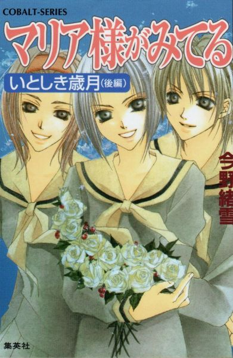
もくじ
ｗｉｌｌ
忘れもの
お餞別
いつしか年も
直前の卒業生
江利子・聖・蓉子
送辞と答辞
光の中へ
片手だけつないで
春の風
秋の絆
あとがき
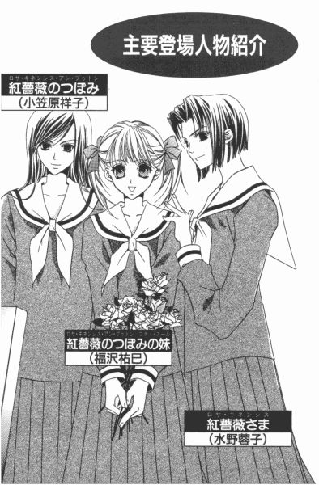
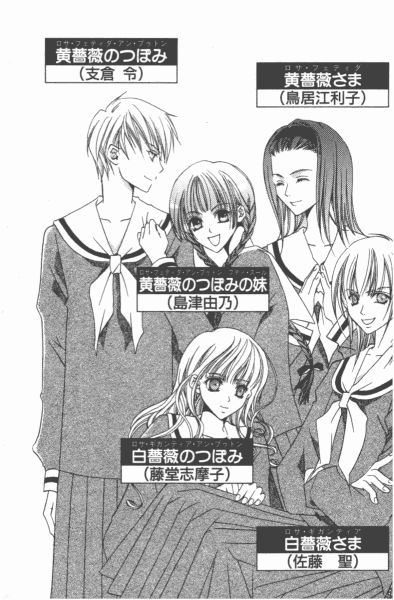
マリア様がみてる いとしき歳月（後編）
ｗｉｌｌ
忘れもの
０
世の中には、誰にもどうすることができないことはある。
まさに時間というものはその代表的なもので、いくら駄々をこねてみたところで止めることなどできないものなのだ。大富豪に生まれたって、こればかりは如何ともしがたい。
二月の終わりだっただろうか、卒業アルバムに載せる写真を撮る三年生を遠目に眺めて、泣きたくなった。今までの漠然とした不安とは別の、本当にいなくなってしまうのだという切迫した寂しさが押し寄せてきたのだ。
嫌だ嫌だと思いながら、それでも三月はやって来た。そして、三年生を送り出す行事が一つずつこなされていき、いつしか事務室前に設置された卒業までのカウントダウンボードは「あと２日」という文字が填め込まれてしまった。
「大丈夫？」
体育館から校舎につながる渡り廊下で、祐巳の肩にそっと手をかけてきたのは志摩子さんだった。
「大丈夫、って？」
何のことかしら、って顔を上げると、目の前にはきちんと折り畳まれたガーゼでできた布が差し出されている。
「.........えっと」
これは紛れもなくハンカチ。ハンカチが差し出されたということは、もしかして──。
「泣いていると思ったんだ？」
「え、違ったの？ 祐巳さん、作業中ずっと肩を震わせていたから」
「それは、たぶん寒くて」
暖房なしの体育館で、パイプ椅子を黙々と並べる作業は厳しい。
「じゃ、すすり泣いていたように見えたのは」
「鼻をすすってました。体育館は結構響くでしょ。鼻をかむ音、って迷惑かなと思って」
黙々と作業する一年生は、先生からの指示があったわけでもないのに、皆、無言だった。寒くて口を開くのも億劫なのか、明後日の式典の準備ということで厳かな気分になっていたのか。
「ああ、そうなの。じゃあ、祐巳さんにはこっちね」
志摩子さんは、ハンカチをポケットにしまって、入れ違いにポケットティッシュを出して「どうぞ」と差し出した。
「あ、......ありがとう」
祐巳はお礼を言ってから一枚もらって、それで思い切り鼻をかんだ。
チーン。
耳がキーンとなる。
冷たい空気が目に染みるのは、アレルギーだとかドライアイだとかの理由じゃないって、祐巳は知っていた。
一度潤んだ瞳は、敏感になってちょっとの刺激でも反応してしまうものだから。
けれど、強がりを言いたい気分の時ってある。
隣の志摩子さんの目も心なしか赤かった。
「もう、明後日なのね」
「やめよう。何か、寂しくなる」
祐巳は、鼻をかんだティッシュの角で目尻を拭いた。今からうるうるしていたら、涙の製造が追いつかなくなって、本当にドライアイになってしまう。
「そうね」
うなずいた志摩子さんのため息の方が、祐巳の何倍も重かった。
それはきっと、志摩子さんの場合はお姉さまが二学年上だから。卒業式イコールお姉さまがいなくなる、ということになることを意味しているのだった。
１
「祐ー巳ちゃん」
背後から呼ばれたので、振り返ろうとしたらそのまま羽交い締めのように抱きすくめられた。ちょうど掃除の真っ最中で、竹箒で並木道を掃いたりしていたわけだから、無防備なことといったらこの上ない。
「ギャ......」
と、咄嗟に叫びかけたけれど、もうこういうことされるのもいい加減慣れっこになってしまったので、祐巳は比較的冷静に「キャッ」と言い換えてみる。ここは、もうじき卒業してしまう白薔薇さまのリクエストにお応えすることにして。
しかし、いつもとちょっと感じが違いやしないか、と首を傾げた時にセクハラ犯人の残念そうな声が耳もとに届いた。
「なーんだ」
「......『なーんだ』？」
振り返って、びっくり。そこにいたのは、紅薔薇さまだった。
「な、何の冗談なんですか」
あわてて、飛び退く。
ある意味、後ろから抱きつかれた時よりショック。どうして優等生の見本のような紅薔薇さまが、こんなお戯れをなさるのか。ほら、約十メートル先を掃いているクラスメイトも、こちらを見て固まっている。
「ちぇっ」
「ちぇっ、って」
そういう言葉遣いも、ちょっとなぁ。白薔薇さまの生霊が乗り移ったかのようで、新鮮を通り過ぎて不気味なんだけど。
「祐巳ちゃんの、ぷくぷくした抱き心地を堪能しそびれた」
わざと、拗ねたように小石を蹴る紅薔薇さま。
「それに、聖が恐竜の子供みたいだって言っていたから、叫び声も楽しみにしていたのになぁ」
「......」
適当な言葉が浮かばなくて、うまく切り返すことができなかった。だから祐巳は紅薔薇さまの蹴った小石がコロコロ転がって、やがて道の脇の植え込みに消えるまで無言のまま目で追った。
引っかかったのは、「聖」って言葉だ。
このところ、薔薇さまたちは互いに名前を呼び合っている。示し合わせてなのか偶然なのかは知らない。でも、祐巳は何度かそういうシーンに遭遇している。
薔薇さまたちの本名が頻繁に飛び交うのは、ちょっと苦手。以前は薔薇さまたちが名前で呼ぶのを聞いたところで何とも思わなかったのに、近頃なぜだか妙に気に触るのだ。
祐巳が高等部に入学した時、すでに薔薇さまたちは薔薇さまだった。だから本名の方が、むしろ違和感を覚える。三人にとっては、十八年生きてきた中のたった一年そう呼ばれたに過ぎないのだろうけれど。
薔薇さまという名前から本名に戻るということは、もう全生徒の「お姉さま」ではないのだと言われているみたいで祐巳は嫌なのだった。
ずるい、なんて言える立場じゃないけれど。式も済んでいないのに、勝手に卒業した気分にならないで、と思ってしまうのだ。
「一度ね、やってみたかったのよ」
「何のことですか」
「祐巳ちゃん限定の抱きつき魔もどきをね。卒業したら、もうできないでしょう？」
やり残したことをやっているの、って祐巳には聞こえた。やっぱり、紅薔薇さまはもうリリアンの外に目を向けているんだ、って寂しくなった。置いていかれる、って悲しくなった。
「私は、付属の大学に行くわけじゃないし」
今年の薔薇さま三人は、全員優先入学の権利を放棄して大学受験の道を選んだのだ。いずれも優秀な方たちだから、リリアンの付属大学ならばどの学部でも楽々審査に通っただろうに。もったいない。いや、祐巳の想像以上に優秀だったから、受験体制があまり整っていないリリアン女学園に通いながら、全員合格通知を手にして四月からは女子大生であるのだけれど。
「......遊びにきてくださいよ」
「そうね」
紅薔薇さまはやさしくほほえんだ。だけど、それだけだ。
「そうね」は「ＹＥＳ」じゃないということを、祐巳は知っている。紅薔薇さまも、たぶんわかっている。四月になって新しい生活がスタートしたら、リリアン女学園のことを振り返ったりはしないだろうということも。
懐かしがってすぐに遊びに来るような紅薔薇さまじゃない。離れがたいのだったら、他大学を受けずにリリアンに留まるだろう。それくらい潔い人だ。
「祐巳ちゃん、お掃除そろそろおしまいよね？この後、何か用がある？」
「いえ、別に。いつものように薔薇の館に行くだけです......けど」
『三年生を送る会』と『薔薇さまたちのお別れ会』を無事やり遂げたとはいえ、何かと忙しいつぼみたちのお手伝いをしに。すでに三年生は楽隠居だし、妹たちは頼りにならないし、で、二年生は大変なんだ。二年生じゃない志摩子さんなんて、もっと大変。何せ、専属アシスタントともいえる妹がいないんだから。
「ふんふん、薔薇の館ね。じゃ、ちょっとくらいいいわね。つき合ってよ」
「つき合って、って」
紅薔薇さまは箒を取りあげて、片づけを始めたクラスメイトに勝手に「お願いしていい？」なんて渡してしまうと、祐巳の肩を抱いて歩き出した。
「あ、あのっ。紅薔薇さまっ」
合意していないのに連れていったら、それは誘拐だ。
「いいからいいから。たまにはお祖母ちゃんにつき合ってちょうだいな」
──って、「お祖母ちゃん」に連れて行かれたのはミルクホールだった。
「さあ、遠慮しないで飲んで飲んで」
「はぁ......」
勧められても、ホットミルクはそうぐびぐびとはいかないわけで。おまけに、ビンから直接飲まなきゃいけないシステムだし。祐巳がぐずぐず言っていると、紅薔薇さまは声をひそめて言った。
「馬鹿ね、祐巳ちゃん。あっため牛乳が紙パックだったらどうなると思っているの」
「ど、どうなっちゃうんですか」
ビクビクと尋ねる。話のテーマが牛乳なのに、何だか、身の毛もよだつ話でも始まりそうだったから。しかし。
「紙パックが熱かったら、不気味じゃない」
「へにゃ？」
紅薔薇さまの答えは、身も蓋もないものだった。
「牛乳パックだと加熱する際に爆発する、とか。品質に問題がでてくるとか。そういう話ではないんですか」
「あ、そういうのももしかしてあるかもしれないわね」
と紅薔薇さまはコロコロ笑ってから、「不気味っていうのは冗談だけど」と続けた。何だ、冗談だったのか。
「正解は、熱い飲み物をストローで飲むのは不向きだから」
「どうしてですか」
ストローとは予想外だったので、また冗談かと思って笑う準備して待っていたら、紅薔薇さまったら笑いもせずにこう言った。
「口の中、火傷するのよ」
真顔。──ってことは。
「......もしかして、実験済み、とか」
「もちろん。七つの冬に。お味噌汁でやったの」
ストロー、七つの冬、味噌汁、って。三題噺のネタじゃないんだから。
「また、どうして」
「さあ？ 探求心があったから、なんじゃない？」
七歳の子供が、探求心。それは、すごいな。
「ご両親は止めなかったんですか」
「どうして？ 子供が興味をもったことはやらせるわよ」
舌に火傷するくらいで死にはしないから、って。紅薔薇さまのお宅って、ずいぶん思い切った教育してたんだなぁ。お陰でこんなに強い女性が出来上がった、と。
「何？」
「あ、いえ。紅薔薇さまなら、男子に混じってバリバリ勉強できるんだろうな、って」
言ってみて、祐巳はすぐに「やば」と思った。自分から卒業後の話題振ってどうする。また涙腺を刺激してしまうじゃないか。
しかし祐巳なんて幼稚舎からリリアンだから、今更大学だけ他に行くなんて考えられなかった。ましてや共学なんて。祥子さまのように男性恐怖症じゃないけれど、隣の机に男子生徒がいたら、落ち着いて勉強できない気さえする。
「うん。そうね」
「法学部でしたっけ。将来は弁護士とか、検事とか」
「どうかしら」
言いながら紅薔薇さまは立ち上がり、壁際にある自動販売機まで行って帰ってして、再び祐巳の向かいに着席した。
「法律に興味があったから、法学部を目指しただけだし。リリアンに法学部がなかったから、受験したわけだし。勉強するのに、異性がいるかどうかはさほど問題視しなくていいんじゃない？」
「はあ」
「まあ、江利子なんて珍しもの好きだから、女子校か共学かは重要ポイントでしょうけど。ねえ、聞いた？」
「はい？」
「江利子ったらね、面白がっていろんな大学の様々な学部を受験したわけよ。文系理系お構いなしでね。そうしたら全部合格しちゃって、仕方なくあみだくじで行く大学決めたんですって」
で、芸術学部って。今まで黄薔薇さまから、芸術に興味があるなんて一言も聞いたことがなかった。
「傑作よね」
しかし、親友を笑い者にしている紅薔薇さまはというと、第一志望は別にあったのに、人生最良の日（バレンタインデー）に受験した大学に縁起がいいという理由だけで決めてしまった人である。
「最高なのは聖だけどね」
紅薔薇さまは、笑いながら涙を溜めている。
「あの、ところで紅薔薇さまは、なぜ法律を学ばれようと？」
笑いが伴わない涙が出てきそうで、祐巳はあわてて話題を変えた。大好きな人たちが、遠くに行く話はもうお腹一杯だった。
「そうね、私の場合」
ポケットからハンカチを取り出して、紅薔薇さまはあふれた涙を押さえた。
「気がついたら絵描きになっていました、っていうのが理想なの」
「はあっ!?」
聞き間違いだろうか。法学部行くのに、絵描きになりたい、って聞こえたけれど、今。芸術関係は、確か黄薔薇さま担当のはず。
「喩えよ」
紅薔薇さまは笑った。笑いながら、さっき自動販売機で買ってきた紙パックのいちご牛乳に付属のストローをねじ込んだ。
「絵描き、っていう職業に就きたくて絵を勉強するんじゃなくて、絵を描くのが好きで、気がついたら絵描きになっていました、ってね。それが本当じゃない？」
「法律の勉強してたら法律家になっていました、ってことですか」
尋ねながらも、祐巳は紅薔薇さまの手もとが気になって仕方なかった。せっかく差し込んだストローを、すぐに取り出して何しようというのだ。
「そう。人のために何かやりたい、っていう方が説得力あるけど」
でも、そういうのもいいと思う。まだ十代の娘が言うのなら、そっちの方がむしろ説得力あるかも。
「でも、紅薔薇さまが外科医じゃなくてよかったです」
「どうして？」
「人の身体を切り刻むのが好きで、気がついたら外科医になっていました、って」
「......そんな外科医には、死んでもかかりたくないわね」
「いえ、死ぬくらいなら、いっそかかります」
祐巳は真顔で答えた。
「違いないわ！」
紅薔薇さまが声をあげて笑ったので、遠慮なく笑えた。
「やっぱり祐巳ちゃんは面白いわねー」
「......って、顔で爆笑しながら手もとは何しているんですか！」
その光景を目撃するや否やあわてて手首を掴んだが、時すでに遅し。
「何、って。見ればわかるでしょ」
紅薔薇さまったら、祐巳がフーフーしながらやっとこさ三分の一飲んだあっため牛乳の空いたスペースに、何といちご牛乳を注いでいたのだった。ストローの先で開けた、あの穴からプチューっと。
「ど、ど、ど、ど」
混乱してうまいこと言葉が出ない祐巳を眺めながら、紅薔薇さまは。
「どうして、って言いたいわけ？」
冷ややかに助け船を出してくれた。それです、それ。探していた言葉は。
「熱くて飲めない、って言っていたじゃない」
「そりゃ、言いましたけど」
何で、よりにもよっていちご牛乳で割るかな。せめてコーヒー牛乳だったら、ぬるくて牛乳多目のカフェオレとして納得できたかもしれないのに。
「とっくに冷めてますし」
「嫌だ、そんな顔しないでよ。祐巳ちゃんだけにつらい思いはさせないわ」
自分の牛乳にも、トックントックンと注ぐ。空気が入ったパックからは、元気よくいちご牛乳が飛び出す。で、一口飲んでみた感想はというと──。
「あんまりおいしい物ではないわね」
「......」
じゃあ、何でするんですか。って突っ込みは、しなかった。だって答えは予想つくから。これもきっと、一度やってみたかったんだ、紅薔薇さまは。
「その通り」
「は？」
頑張ってホットミルクのいちご牛乳割りを飲みながら顔を上げると、紅薔薇さまは笑ってみていた。
「祐巳ちゃんは勘が鋭い」
「え？」
「それでいて、面白い」
「えーっと」
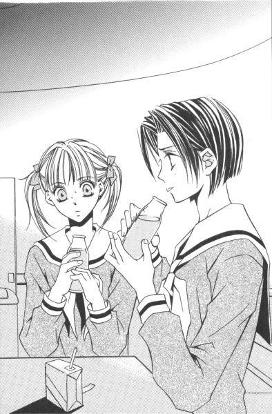
何てリアクションしたらいいかわからず取りあえず生ぬるくなった牛乳瓶を手でさすっていると、紅薔薇さまは気にせず話を続けた。
「だから、私はあなたを買っている」
「ホットいちご牛乳オーレの体験者としての白羽の矢をたてた、ということですか......？」
すると、「違うわよ」と紅薔薇さまは首を横に振る。艶々の黒い髪が、左右の頬を一回だけ撫でて落ち着いた。
「祥子の保護者」
「はぁ？」
「祐巳ちゃん」
紅薔薇さまは目を細めて小さく言った。
「祥子のことをよろしくね」
「......は......い」
「可愛げがないけれど、あれでも私にとってはかけがえのない妹なのよ」
紅薔薇さまは、『遺言』を言うために誘ったのだと、祐巳はその時やっとわかった。
２
「何していたの」
薔薇の館の二階にある会議室、別名サロンの扉を開けると、そこには祥子さまが仁王立ちになって待っていた。
「遅くなりまして、申し訳ありません」
祐巳は頭を思い切り下げて、最敬礼のポーズをとった。
「同じクラスの志摩子より三十分遅れてくるとは、何事なの？」
「はいっ」
「今日は卒業式の後のことを相談するから、早めに来るように言っておいたはずよ」
「はい。済みません」
お姉さまは気が立っている、と判断したので、祐巳は言い訳せずにただひたすら謝った。口答えすれば、火に油を注ぐようなもの。遅れた理由は、落ち着いてから説明するに限る。
「あの、祥子さま？ 一緒のクラスとはいえ、私と祐巳さんは掃除の分担区域が異なりますから」
引き合いに出された志摩子さんが、居たたまれなくなったのか席を立って祐巳を庇ってくれた。志摩子さんの気持ちはありがたいけれど、こんな場合はかえって話がややこしくなる......予感。
「ならば」
祥子さまは、宿題を忘れた生徒を叱る教師のように、揃って並んだ祐巳と志摩子さんの前で斜に構え、腕を組んで言った。
「クラス会議にかけて、掃除区域の割り当て人数を見直すようになさい。こんなに差が出るなんて問題だわ」
うわっ、すごい嫌味。ドラマに出てくる、ステレオタイプのお姑さんみたい。
「クラス会議、って言われても......」
「......ねえ」
一年桃組の生徒二人は顔を見合わせた。志摩子さんは別に、祐巳が遅れた理由が掃除にあると言及したわけではなくて、単に同じクラスだからといって一緒とは限らないという意味で言ったわけだし。たとえ桃組の掃除分担に差があろうと、三学期の半ばも過ぎた今、それを議題にするっていうのもいかがなものか、と思いますが。
「あの、お姉さま。私は掃除で遅れたわけではないんです」
仕方なく、祐巳は口を開いた。ひたすら謝って怒りが通り過ぎるのを待つ作戦は、今回見送るしかない。志摩子さんが小さい声で「かえって、ごめんなさい」と囁いた。
「じゃ、どうして」
とっさにいい言い訳を考えられるほど、祐巳の頭は回転が速くない。いや、思いつけたとしても、お姉さまに嘘をついてまでその場を切り抜けたいかというと、それは正直なところ「否」なのである。
「道草して遅れました」
「道草？」
怪訝そうな顔をして、聞き返す祥子さま。
「一人？」
「いえ」
「じゃ、誰とどこに言っていたの」
一人じゃないと知って、眉がつり上がったように見えたのは気のせいだろうか。
「紅薔薇さまに誘われまして、ミルクホールに」
「お姉さまに？」
誰に誘われようと、約束に遅れそうだったら断りなさい。──そう、雷が落ちるかと思ったが。
「そう。わかったわ」
祥子さまは案外あっさりと引き下がった。祐巳が、気抜けするほどに。
「お姉さま......？」
祥子さまのことを頼まれたなんて、言うつもりはなかった。何をしていたのか聞かれたら、ホット牛乳をご馳走になった、それだけ報告しようと思っていた。まだ何かあるのではないか、と攻められようとも、決して口を割るまい、と。
それなのに紅薔薇さまの名前を出しただけで、無罪放免とは。紅薔薇さまは、関所の通行手形か。
それ以上何も追及せずに、祥子さまは先ほどまで居たであろうテーブルの席に引き返した。
その姿をぼんやり見つめていると、
「祐巳ちゃん、祐巳ちゃん」
テーブルで成り行きをご観覧になっていた 黄薔薇のつぼみ、支倉令さまが小さくおいでおいでをしている。
「？」
首を傾げながらツツツと近寄ると、令さまは小声で言った。
「許してやって。祥子は祐巳ちゃんのことが心配で、仕事が手につかなかったもんだから、憎まれ口叩いているだけなの」
「はぁ......」
「令、何ゴチャゴチャ言っているの！」
「何も。祐巳ちゃんに席に着くよう言っただけ。おお怖い、怖い。祥子のヒステリー」
「何ですって──」
祥子さまは握り拳を振り上げたが、剣道二段に向かってまともに振り下ろしたところですぐに交わされてしまうのはわかりきっているからなのか、恨めしげに令さまをにらみつけながら拳を収めてその代わりとばかりに椅子の足を蹴った。
カーッとなった感情をすぐに収めることができなくて、当たり散らす祥子さま。そういえば、祐巳が一番最初に薔薇の館を訪ねた折もこの部屋で大声で喚いていたっけ。
「そうそう、怒りを溜め込むと身体に毒よ」
令さまは、いつの間にか祥子さまのコントロールがうまくなっていた。薔薇さまたちが、適当にからかって祥子さまのガス抜きをさせていたように。
（祥子のことをよろしくね）
今さっき紅薔薇さまに言われた言葉を思い出して、ちょっと自信がなくなってきた。こんなに頼りになる親友が側にいるんだから、祐巳がどう「よろしく」すればいいのかわからない。
志摩子さんが先に席に着いたので、祐巳もあわてていつもの場所に落ち着いた。いつの間にか定位置になっていた、大好きな祥子さまの隣。
「では、全員揃ったので始めましょうか──」
すぐ側で、お姉さまの声が聞こえる。議題は、卒業式の後の内輪の記念写真について。
「写真部の武嶋蔦子さんには話を通しましたけれど、それを耳にした新聞部が見学したいと申し込んできまして......」
志摩子さんが、報告しているのを聞きながら、祐巳は目の前に置かれていたカップの中のお茶をすすった。
冷たい。
ホットミルクとは対照的。
たぶん、祥子さまが祐巳を待っていた時間分の冷たさのはずだった。
３
「遺言ね。わかるような気もするわ」
濯いだカップを食器籠に伏せながら、由乃さんがつぶやいた。
「わかる？」
祐巳はスポンジを流水でニギニギして、泡切れを確認してから受け皿に戻した。
会議が終わって、つぼみたちは一足先に一階の物置へ行っている。薔薇さまたちの私物が残っていないか、調べているのだ。由乃さんと二階の後片づけをするよう命じられて、祐巳は正直ホッとしていた。薔薇さまたちが薔薇の館から居なくなるためのお手伝いなんて、絶対つらいに決まっている。
「お礼参りにマリッジブルー。まあ、卒業前の愛の告白なんかも似たようなものよね」
「似てる、って。どれとどれが」
「全部だって」
言いながら由乃さん、キュッと蛇口を締めた。
遺言とマリッジブルーのどこが、って祐巳は心の中で突っ込んだ。いや、だからといって愛の告白だったら納得できるわけでもないのだけれど。
「つまりね。長いこと馴染んでいた場所から別の環境に移るって時にね、人間はやり残したことなんかについていろいろ考えたりするものなのよ」
「それで遺言」
「そ。言い換えれば未練ね。このまま結婚していいのかしら、なんて頭をよぎるのがマリッジブルー。振られたところでもう会わなくなるんだから、って告白するのはよくある話」
「ふむ。あれ、じゃお礼参りは？」
祐巳が素朴な疑問を口にすると、由乃さんは一瞬動きを止めて「え」と聞き返した。
「だからさ、神仏にありがとうを言いに行くのの何が未練なの」
「学校で、お礼参りって言ったらね。卒業生が嫌いな先生を体育館の裏に呼びだして、その......今までの不満をぶちまけたり......まあ、いろいろなことが起こるわけだ」
祐巳が「ひえー」とか相づちを打つためであろうか、由乃さんはかなりオブラートに包んで説明してくれた。
「そんな恐ろしいことが世の中にあろうとは」
「ま、リリアンにはそういう伝統がないから安心して」
「う、うん」
される側の教師も嫌だが、する側の生徒にもなりたくない。何が悲しくて、発つ鳥あとを濁しまくるか。
「しかし、体育館裏になら私も黄薔薇さまに呼び出されたけどね」
「えっ」
「令ちゃんを挟んでの三角関係がピリオドだもん。お互い言いたいこともあるわよ」
遅いぞ武蔵、待たせたな小次郎。由乃さんは、目に見えない刀を構えてポーズをとった。
しかし、どうしてこう喩えが時代劇に走るんだろう。
「言いたいこと？」
「どっちが勝っているかよ。例えば、令ちゃんの隣に住んでいる従妹の私が距離的には近いとか。お姉さまである黄薔薇さまの方が、令ちゃんの優位に立てる分勝っているとか。一々取りあげてね」
生活態度から、コーヒーにおけるミルクと砂糖の分量に至るまでというから、それはかなり細かいと言えよう。
「で」
どちらが宮本武蔵でどちらが佐々木小次郎なのか。つまり、勝者は誰だったのだろう。
「決着なんかつくわけないじゃない。つかないからこそ、今までうまくやってこれたんだもん。あれは......そうね、ただのパフォーマンス」
「パフォーマンス」
「そ。皆いろいろやってるわよ。方法は違っても、それぞれ自分たちなりに別れを惜しんでいるんだわ」
ああ、そうか。祐巳は何となくわかった。祥子さまは、それがわかっていたから、紅薔薇さまに連れ出された妹を叱らなかったのだ、と。
内容も、聡明な祥子さまならば薄々察することができただろう。もしかしたら一年前、祥子さまも同じように紅薔薇さまのお姉さまに後を託されたのかもしれない。
後かたづけを終えた祐巳と由乃さんは、一階のつぼみたちと合流した。部屋に入った瞬間、肩を丸めた三人の姿を見て泣いているのかとびっくりした。が、そうではなかった。
「ほら、見て。白薔薇さまの私物がたくさん」
二人に気づいた祥子さまは、笑いながら紙袋を掲げた。
「教科書、スポーツタオル......？ あ、これ以前ないないって騒いでいたお弁当箱だ！」
「祐巳さん、一つ一つ取り出さないでよ」
由乃さんが、顔を背ける。冬休み前だったからな、お弁当箱紛失事件は。食べた後の空になった容器であったのが、せめてもの慰めか。しかしお弁当包み開いて蓋を開けたら、間違いなくすごい匂いがするはずだった。
「積み上げられた段ボールの箱の後ろに落ちていた、ってわけ」
肩に埃をつけた令さまが、苦笑した。
そういえば、あの頃と比べるとここに置かれている荷物の数も増えた。忙しくて、整理を怠っていた結果である。
「でもあの時、お姉さまは絶対二階にあるはずだって言っていたのに」
志摩子さんの言葉に、一同うなずく。だからこそ、二階の部屋を皆で集中して探したというのに。テーブルを動かしたり、あまり使用していない棚を見たり。そうそう、窓から落下した可能性まで考えて中庭なんかもチェックした。
「二階でお弁当食べて、帰りに用事があってこの部屋に立ち寄ったかなにかしたんでしょう。思い込みしていらっしゃったんだわ」
「いくら探してもなかったわけだ」
「一階にあったのではね」
全員が一斉にドッと笑った。白薔薇さまを肴にして笑うなんて、今日で最後かも知れない。
「ともかく、卒業式の前に見つかってよかったわ」
祥子さまは、お弁当の包みを紙袋に戻した。確かに。忘れ物を取りにくるためだけに、卒業したての母校にわざわざ来させるのは気の毒だ。
紅薔薇さまは、シャーペン一本。黄薔薇さまは、ハンカチ一枚が発掘された。いずれも、学園祭の直前にシンデレラの劇の練習でこの部屋を使用していた時、荷物の移動中紛れてしまったものと思われた。
薔薇さまたちの私物の他に、ハサミとかマジックペンだとか、薔薇の館の備品も数点出てきた。
「名前が書いていないのに、どなたのかよくおわかりですね」
祐巳が素朴な疑問を口にすると、祥子さまはシャーペンを手の平にのせて頬ずりした。
「もちろん、わかるわよ。だって、私たちは妹ですもの」
祥子さまの頬を涙がつたったけれど、誰もそれについては触れなかった。いいや、触れられなかった。なぜって、自分自身が同じように瞳を潤ませていることが十分わかっていたから。
「明日。お返ししましょう」
何かに言い聞かせるように、祥子さまはつぶやいた。
心にけじめをつけるために。
別れの前の様々なパフォーマンスは、心のために必要な儀式なのかもしれなかった。
お餞別
１
「お姉さまからの遺言？」
何それ、って志摩子さんは予想通りのリアクション。
「だからさ、何かして欲しいとか。こんな風に学校を守っていって欲しいとか。そういうこと言われた？」
祐巳はめげずにくらいついた。白薔薇さまには、言葉にできない想いがある。感謝、と一言では言い表せない。祥子さまに対する気持ちとはまったく別の、それでもやっぱり「大好き」という単語が一番近い感情。
だから昨日の放課後、由乃さんと遺言という話をしていて思ったのだ。白薔薇さまは、どんな思いを残しているのか。白薔薇さまに自分たちは何をしてあげられるのか。
志摩子さんなら、もしやヒントをくれるかもしれない、と祐巳は考えた。一晩悩んだけれど、それでも答えは見つからなかったから。
「遺言なんて。そんなこと言うような人じゃないわよ」
トントンと、教科書を揃えて鞄に詰めながら、志摩子さんはつぶやいた。四時間目の授業が終わった直後。ホームルームのために担任が来るまでの間、生徒たちは席から移動してザワザワとおしゃべりに興じている。明日が卒業式だからだろうか。一年生であっても、何だかいつもより気分が高ぶっているというか。皆、そわそわしている。
勉強する雰囲気ではないから、というわけではないだろうが今日の授業は午前中でお終い。あとはざっといつもの区分を掃除して下校というのが、生徒たちのスケジュール。体育館の椅子出しは昨日済んでいるし、あとは今日の午後先生たちが紅白の垂れ幕を掛けたり、校旗を飾ったり、忘れちゃいけないマリア像を安置したりすれば会場は滞りなく準備完了という運びになっている。
「少なくとも、私には言わないわね」
微笑して、志摩子さんはそんな風につけ加えた。
「そうか。......そうだよね」
確かに、白薔薇さまがしみじみリリアンの将来について語るなんて「らしくない」。それにここの姉妹は一風変わっていて、普通の会話でさえあまり交わされないらしいから。リリアンを去るに当たって妹に言葉を残すなんてこと、特にないのかもしれない。
でも、とペンケースを鞄の中に滑らせながら志摩子さんは言った。
「祐巳さんにならあるかもしれないわね」
「私？」
祐巳は人差し指を自分の鼻先に向けて、聞き返した。
「ええ。お姉さまは、祐巳さんのこと可愛がっているもの」
その言葉を聞いて、ドキッ。そして、即反省した。
「ごめん」
祐巳がガバッと頭を下げると、志摩子さんは「何で？」と首を傾げた。
「私、志摩子さんの気持ち考えないで、白薔薇さまに甘えていたかもしれない」
「あら、嫌だ。そんなこと少しも思っていないわ。あのね、私は祐巳さんに感謝しているくらいなの」
「？」
顔を上げると、志摩子さんはいつものように嫌味の欠片もない聖女のほほえみで、見つめ返してきた。
「私、甘えるのが下手だし。最初からそういうのが無縁の姉妹だし。歳が二つ違っているから、可愛がりたくても白薔薇さまの場合妹の妹もいないでしょ」
「いわゆる孫、ってやつ？」
「孫？ ああ、そうね。そんな感じ」
二年生を挟んで、一年生と三年生の不思議な関係。祐巳にとって、紅薔薇さまが甘えることの許されるお祖母ちゃまで。
「そうか。志摩子さんの妹は、白薔薇さまと入れ違いに入学してくるんだもんね」
「妹、ね。......とても考えられないけれど」
志摩子さんは、窓の外に視線を移した。何だか、昔のことを思い出しているみたいだ。
「でも、きっと白薔薇さまだってそう思いながら志摩子さんと姉妹になったんじゃない？」
そうね。そうつぶやく志摩子さんだが、納得したわけではない。たぶん同じ気持ちを抱えているであろう、祐巳にはわかる。
妹をもつなんて、考えられない。今の自分だけでも手一杯なのに。その上、下級生の面倒をみる余裕がどこにあるのだろう。
「相性の合う下級生とめぐり会えるかどうか、ということもあるけれど。私が妹をもったら、その子は一年生で 白薔薇のつぼみにならないといけないでしょう」
それだけでも大きな負担になる、って志摩子さんは考えているようだった。
「志摩子さんだってそうしてきたじゃない」
「もちろんそうだけれど。でも、何となく私は妹をもってはいけないのではないかと思うのよ」
言って、寂しげに目を伏せるから。祐巳は急に不安になった。
「志摩子さん」
志摩子さんの手を、祐巳はガシッと握った。
「び、びっくりした。え、......何？」
突然だったから、掴まれた方はかなり驚いたらしい。
「志摩子さん。どこにも行かないでね」
「祐巳さん......？」
「私が三年生になるまで、どこにも行かないで待っていてね。一緒に山百合会背負っていくんだから。志摩子さんがいなきゃ、私嫌だから」
志摩子さんが、どこか遠くに行ってしまうような気がした。だからどうしていいかわからず、取りあえず捕まえていなくちゃ、って夢中だった。志摩子さんはいつか、卒業という形ではなくリリアンを離れる気かもしれない。離れたいんじゃなくて、離れなければいけない事態がいずれ起こりうる。そんな覚悟のようなものが、以前から何度も見え隠れしていた。
白薔薇さまは、自分では志摩子さんを救えないと言っていた。だったら、ここはクラスメイトの私が、という気にもなる。そうだ、しがみついて離さなければいい。
「あの......」
しかし、当の志摩子さんはというと。祐巳の全身からほとばしる熱い光線と、体力測定の数値をはるかに上回る握力に少々困惑気味。
その上。
「福沢さん」
横から志摩子さんのでも自分のでもない手がすーっと伸びてきて、腕相撲の審判のように二人の手を上から包んだ。
「美しい友情に水を差すようで悪いけれど、席について。ホームルームやっつけちゃいたいから」
周囲から、ドッと笑い声がおきた。熱弁をふるっている間に先生がやってきていて、祐巳を除く全員が席についてホームルームができる体勢になっていた。
「すみませんっ」
祐巳はあわてて志摩子さんの手を離すと、赤面しながら自分の席に戻った。
何たるしくじり、何たる失態。あろうことか、志摩子さんの手を取って「一緒に山百合会を背負っていく」だなんてほざいて、それをクラス全員にお聞かせ申し上げてしまうなんて。
（ううう。バックスペース・キーで、時間の行を削除してしまいたいっ。......およそ三分ほど）
頭のてっぺんから湯気が出るくらい、ほっぺが熱い。笛つきケトルなら、うるさいくらいピーピーピーピー鳴り響いているところだ。
志摩子さんだっていい迷惑だったんではないだろうか。──そう考えて、チラリと横目で斜め後ろに視線を投げる。すると、待っていたかのように彼女と目があった。
あ・り・が・と・う。
志摩子さんの唇がゆっくり、音を出さずにそう動いた。それで祐巳のばつの悪さは、バックスペース・キーなしでもすっと引いた。
志摩子さんに通じたならそれでいいや、って思えたのだ。
友達、ってすごい。
クラスの残りの三十余人にどう思われようと、たった一人の一言で一気にすべてが解決してしまうのだから。
２
考えてみたら、白薔薇さまに何か気がかりがあったとして、それが志摩子さんのことだったら本人に直接言うわけないだろう。
紅薔薇さまは祥子さまのことを祐巳に託した、それと同じことだ。
掃除が終わって教室に戻る途中、祐巳はマリア様の像の前で佇む桂さんを見かけた。掃除区域が違うから、すでにスクールコートを着て鞄を持つという登下校スタイル。
「桂さ......」
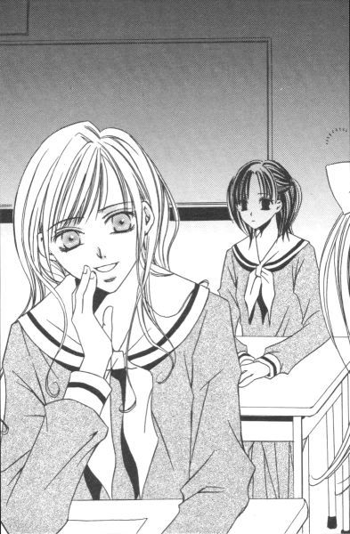
挨拶をしようとした時、図書館の脇の道から出てきた生徒に先を越されてしまった。
「桂ちゃん！」
あれれ、と見ていると、桂さんがその人を見た途端その場でしゃがみ込んでしまった。で、あれよあれよという間においおい泣きだした。
（うわっ）
見ちゃいけないものを目撃してしまったような。しかし、ここで去っては気になってしょうがない。
テニスラケットを抱えていたから、はじめ桂さんのお姉さまが来たのかと思った。でも、よく見ると以前紹介された人とは別人だ。桂さん姉妹は黄薔薇革命に感化されて一度破局を迎えたもの、一月もしないうちに元のさやに納まったはず。
じゃ、あれは誰だ。
「テニス部の副部長。桂さんの憧れの人」
背後から突然解説されて、ビクッと祐巳の背筋が伸びる。
「うーん。哀愁を帯びた桂さんもいいねぇ」
カシャッ。その、テニス部の副部長なる人が桂さんを支えて立ち上がらせた瞬間に、待ってましたとばかりのシャッター音。というわけで、そこにいたのは予想に反することなく、自他共に認める「写真部のエース」その人である。
「蔦子さんねぇ」
祐巳が文句を言いかけると、蔦子さんは手の平を広げて阻んだ。
「ストップ。言いたいことはわかるけど、これは桂さんの依頼だから」
「桂さんの？」
「最後にツーショット写真撮りたいんだって。卒業記念に」
「卒業......」
そういえば、桂さんの隣にいる人。どこかで見たことがあると思ったら、黄薔薇さまのクラスの生徒だ。ということは、三年生。で、明日卒業、と。
十メートルと離れていないギャラリーに気づかないほど、二人は二人の世界に入り込んでいた。
副部長さんは、桂さんにラケットを差し出した。真新しい物には見えなかった。たぶん、ずっと使っていた物だ。ちょっと驚いたような表情の桂さんは、それを受け取ってこの上もない宝物のように抱きしめた。
「しかし、桂さんは一年間はあれを使えないのでした」
蔦子さんのナレーションが画面に被る。
「どうして」
「......お姉さまの前で使えたら、かなりの大物だよ」
そうか。
桂さんには別にお姉さまがいて、その人もまたテニス部だったから。結構複雑な関係なのかもしれない。
「ま、桂さんが一方的に憧れていただけの話で。何もドロドロしたものじゃないけどね。でも、一応お姉さまには気兼ねがあるわよ」
人それぞれにドラマがあるものだな、と祐巳は思った。桂さんと桂さんのお姉さまって、普段すごく仲がいいのに。
「卒業式の前だからね。......さて」
蔦子さんは祐巳の肩をポンと叩くと、主役二人のいるマリア像の方向に歩いていく。
「写真撮りますから二人こちらを向いてくださーい」
すでに、観光地のカメラマンになりきっていた。
３
桂さんたちを見ていたら、白薔薇さまに会いたくなった。
誰もいないだろうなと思いながら三年藤組を覗いたら、驚くべきことにいた。何と、本人が。
三年生は卒業式の前日ともなると、明日の注意事項中心の少し長いホームルームをして解散と聞いていた。それを裏付けるかのように、じき昼の一時という時間まで残っている生徒はたった一人だった。
白薔薇さまは、何か用事があってその場に留まっているようには見えなかった。椅子に座るでもなく、ただぼんやりと机を指で触れながらその場に立っているだけ。
「忘れ物ですか」
そうは見えなかったけれど、祐巳はそんな言葉で声を掛けた。
昨日薔薇の館の一階をさらって出てきた本物の忘れ物の紙袋が、机の上にポツンと置いてあった。開いた後のお楽しみ袋みたいで、どこか寂しげ。
「ああ、祐巳ちゃん」
気がついて、白薔薇さまは「おいでおいで」をする。
一般的に、他人のクラスに踏み込むのはかなり抵抗がある。ましてや三年生の教室。しかし祐巳は、誘われるまま一歩足を踏み入れた。
「悪い、閉めて」
白薔薇さまは、扉を指さした。寒いのか、それともクラス以外の人間が中にいるのを隠すためなのか。それでもまあ、女同士、密室になったところで差し障りあるわけじゃなし。祐巳は言われるままに、扉を閉めた。
「忘れ物、といっちゃ忘れ物かな」
白薔薇さまは机に座って天井を仰ぐと、照れくさそうに髪をかき上げた。
「教室にね、お別れを言いたくて。図書館で時間つぶして、みんながいなくなる頃合いを見計らって戻ってきた」
笑っていいよ、と自らが笑った。でも、祐巳は笑えなかった。確かに「らしくない」けれど、何がその人らしさなのかなんて、端で見ている人間が勝手に決めつけていいはずはないのだから。白薔薇さまはいつもはちゃらんぽらんに見えるけど、時々どっきりするくらいシリアスで、その上ロマンティストであったりする。
「三月いっぱいは籍があるにしろ、明日を限りにこの場所から出ていかなきゃいけないんだなぁ、って考えたら、ちょっと感傷的になっちゃってね」
過去の卒業式はほとんど通過儀礼みたいなもので、適当にやり過ごしたのに、って。白薔薇さまにとって、今回はちょっと特別らしい。
「リリアンを去るからですか」
尋ねると、白薔薇さまは何ともいえない不思議な表情をした。また何か間違ったことを口走ったか、と祐巳は不安になった頃、白薔薇さまはフッと力を抜いて笑った。
「いろいろあったからね」
「いろいろ」
「楽しいこと、苦しいこと。後悔することもあれば、いい思い出になったこととか。高等部の三年間が、これまでの人生の中で一番濃厚だったと思うんだ」
栞さんのこととか、山百合会での出来事だとか。一人教室に残って、思い出していたのだろうか。何だか切ない。白薔薇さまの気持ちが、伝染してきてしまう。
「白薔薇さま、私！」
祐巳は白薔薇さまの座っていた机のわずかに空いたスペースに、ドンと手をついた。すると不意打ちに驚いた白薔薇さま、比喩じゃなく本当にピョンと飛び上がる。
「な、何、祐巳ちゃん」
驚かせて悪かったなと反省しつつも、びっくり目がちょっと新鮮とか思ってしまった。いや、今はそんな表情に見とれている時じゃなくて──。
「私に、何かできることはありませんか」
遺言聞くなら今だ、と思った。
「祐巳ちゃんに？ 何だって？」
「頼みたいこととか、して欲しいこととか、約束とか、託したいこととか」
エトセトラ、エトセトラ、エトセトラ。
「なーに、それ」
白薔薇さまはカラカラ笑った。真面目に言っているのに、失礼しちゃう。
「何でもいいんです。志摩子さんのこととか、ランチ......いや、ゴロンタのこととか。何かあるでしょ、一つくらい」
祐巳は、当然「ある」と思って聞いたのだけれど、意に反して白薔薇さまのお答えはというと。
「ないよ」
「はっ!?」
「だから、ないってば。祐巳ちゃんにお願いしたいことなんて。ゴロンタはね、もう大人だから人間がエサをやらなくたって大丈夫だし。自活できないようなら、野良やっている価値ないから」
白薔薇さまは、何だか突き放した言い方をした。一人じゃ生きていけないなんてことはないんだって、そんな風にも聞こえた。
「それに、私が頼まなくたって、祐巳ちゃんは志摩子の危機を無視できないでしょ。みっともない姿をさらしてでも、志摩子を助けるためにきっと渦中に飛び込んでくれると思う。だから、純粋な友情が存在しているその場所に、私の意志は必要ないのよ」
言いながら白薔薇さまは、祐巳の頭を撫でた。
「仮に祐巳ちゃんが、私に頼まれたから志摩子を助けるという人だったとしたら、やっぱり私は志摩子を助けてくれとは言わない」
何だか、禅か何かの問答みたいだ。だけど、祐巳には不思議とわかった。白薔薇さまが自分を評価してくれているんだ、ってことが。
「でも、私白薔薇さまのために何かしたくて」
「餞別、ってやつ？」
白薔薇さまは机から飛び降りて伸びをした。
「そうねー。んじゃ、お口にチューでもしてもらおうかな」
「!?」
マジで顔近づけてくるから、あわててのけ反った。白薔薇さまってば、どこまで本気なのかわからないお人だから恐ろしい。
「お、逃げるか。何でもいい、っていったじゃない」
「あわわ」
だめだ、こりゃ。肩なんか抱いちゃって、顎に手まで添えて。もう外国映画のワンシーンそのもの。
「ほら、おとなしくして目閉じて」
日本人離れした彫りの深いお顔が、ズームしていって、ついにはアップに。
（やっぱ、きれいだよな......）
うっとりと見入ってしまった祐巳であるが、そこでハッと気がついた。そのキスシーンのお相手って、確か自分じゃなかったでしょうか。
唇の危機！
「カーット！」
思わず、祐巳は叫んだ。ストップでもタイムでもよかったけれど、一番最初に思いついた言葉を使っただけだ。
相手役の女優から突然カットがかかった白薔薇さまは、呪文のように一瞬止まった。やっぱりこれは映画のワンシーンだったわけか。──それはともかく、その隙をぬって祐巳は駆け出す。
「さ、さよならっ」
白薔薇さまの腕から夢中で飛び出したから、方向が把握できていなくて、まずは窓際までツツツとつんのめるように進んでしまった。引き返すと白薔薇さまの腕に逆戻りだから、九〇度左に回転して教室の後方まで直進し、ロッカーの前からまた九〇度左向け左して、入ってきた時とは別の、後ろの扉までたどり着いた。
「祐巳ちゃんのチューが心残りで、卒業できなーい」
あわてて逃げなくても、白薔薇さまは追いかけて来ていなかった。さっきと同じ場所で、窓の方に身体を向けたまま顔だけ振り向いて「バイバイ」している。
だから、たぶん冗談だったのだろう。「祐巳ちゃんのからかい納め」、白薔薇さまらしい。
西からの日差しが差し込む教室に一人残った肩は、どこか寂しげだった。寂しいのは、自分なのだと祐巳は知っていた。こんな風にじゃれ合える先輩は、白薔薇さまが最初で最後かもしれない。祥子さまに抱いているような、胸が締めつけられるような憧れではないけれど、ノリとか相性とか、そういうものを計れる機械があったなら結構いい数値が出るに違いない相手だった。
「どーした？」
出口に到達したもののなかなか帰らない祐巳に、白薔薇さまは訝しげに尋ねた。
どうした。──祐巳は自分でも、自分の心に聞いていた。
そうだ。いったい、どうしたというのだ。
でも、何だかこのまま白薔薇さまを置いて教室を出ていってしまいたくなかった。
どうしよう。
「さっさと帰らないと、また襲っちゃうよ」
冗談ぽく言って笑う白薔薇さまを見ながら、祐巳は心の中で「困ったぞ」とつぶやいていた。
今更だけど、逃げたことを後悔している自分がいるのだ。あの時白薔薇さまが冗談じゃなくて本気だったら、確実に唇を奪われていたわけだけど。恐ろしいことに、想像してもそんなに嫌じゃないのだ。
何だろう、この気持ち。
まずい。非常にまずい。
白薔薇さまにとっては挨拶みたいなものだろうから、軽くチュッくらいならいいか、くらいの気持ちになっている。
危険だ。危険すぎる。この発想。
「何考えてるの」
何、って。キスのことですけど。──なんてこと、言えるわけない。
何て言ってもファーストキス。唇はやはり問題アリだ。
扉の取っ手に掛けていた右手を、祐巳はそっと下ろした。
たかが唇、されど唇。
唇を笑う者は唇に泣く。
よっしゃ。
両手の拳を握る。
（浮気よ、それは。祐巳さん！）
頭の斜め後方で由乃さんの幻がガミガミ喚く中、机をぬって駆け戻る。
「えっ......!?」
驚く白薔薇さまの唇からちょっとずれたところにあるほっぺに、こちらからチュッとやった。ほんの少し背伸びして。
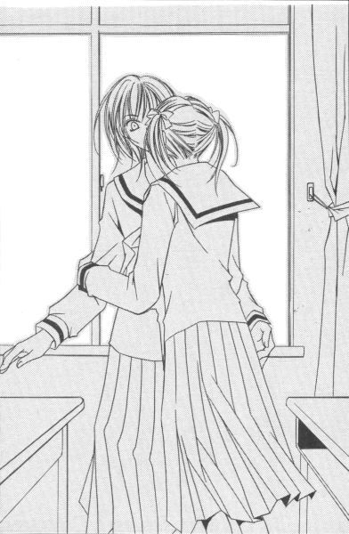
それくらいのパフォーマンスが、祐巳には丁度いいみたいだった。
「......祐巳ちゃん！」
照れくさくてとんぼ返りしようとした祐巳の腕を、白薔薇さまは捕まえてふわりと抱き寄せた。
「改めて言うこともないと思ったから黙っていたけど、私、祐巳ちゃんと知り合えてよかったと思っている」
「え」
白薔薇さまこそ照れくさいのか、互いに顔が見えない位置をキープしながら言った。
「私、同年代の普通の女の子とはあまりなじめなかったんだ。でも、祐巳ちゃんを見ていて、生まれて初めて普通の女の子をうらやましく思えたの」
うらやましい、って。
祐巳は耳を疑った。容姿端麗、頭もいい、口も達者で後輩から絶大な人気をえているスーパースターが、平凡な高校ライフに憧れるなんて信じられない。まあ、栞さんとのことなんか考えれば、波瀾万丈っていうのも厳しいものがあるけれど。
「高三の一年間でね、私はいい意味で変われた。好き嫌いはわからないけど、今の自分の方がだいぶ生きやすくなった。私を今の私にしたのはいろんな要素があるけれど、でもね祐巳ちゃんの存在は大きいよ。祐巳ちゃんが私にしてくれたのは、だからチューだけじゃないんだ」
「私が、何を」
心当たりがない。祐巳は密着していた身体を離して、白薔薇さまの顔を見上げた。すると、「耳かっぽじってよく聞けよ」とおでこを人差し指で弾かれた。
「私を大学生にさせてくれたじゃない」
「嘘」
「ホント。私は祐巳ちゃんを見ていて、もう一度学生をやってみようかと思ったんだ」
「えっ」
「マジマジ。去年の暮れのこと。優先入学の願書提出はギリギリで間に合わなかったから、仕方なく受験組に回った、って。あ、この話はもうしたっけ」
受験勉強を始めたのは今年から、って話は以前。しかし、大学行くつもりなかった白薔薇さまをその気にさせた原因が自分にあったなんて話、祐巳は今初めて耳にしたわけで。
「どうしよう」
責任重大じゃないですか。かっぽじった耳を元に戻して忘れてしまいたいくらい、重いじゃないですか、誰かの人生の岐路の選択に関わるなんてことは。
でも、白薔薇さま。「どうもしないでいい、って」と言った。誰に影響されたとしても決めたのは自分だから、って。
「だからさ、祐巳ちゃん。自信もっていいよ。私みたいにこーんな格好いい奴が憧れる存在だったんだからね」
ポンポンポン、とクッションはたくみたいに背中を叩かれた。卒業していく人に逆に励まされてどうする、福沢祐巳。
「以上、礼」
白薔薇さまはペコリと頭を下げると、祐巳の身体をくるりと回転させて、前方の扉に照準を定めた。
「愛しているよ、祐巳ちゃん。君とじゃれ合っているのは、本当に幸せだった。祐巳ちゃんになりたい、って私は何度か思ったよ」
カウントダウンなしで、ロケットみたいに前に押し出された。力のいれ具合とコントロールは抜群。祐巳の身体は、トトトトと進んで扉すれすれで止まった。
「愛している、ってみんなに言ってるんでしょ」
振り返って聞いてみる。そうしたら。
「うん」
当たり、だって。悪びれもせずに言うんだから。でも憎めない。みんなに「愛している」って言っていても、言っていなくても、白薔薇さまのことを好きな気持ちは全然目減りしない。
「チューありがとね」
退場間際の祐巳の背中に、白薔薇さまが言った。
「いえいえ、単なる『お餞別』ですから」
卒業しちゃったら、頻繁に会えなくなるわけだし。卒業祝いというやつだ。それも大大大大大奮発の。
「単なる、ね」
白薔薇さまはフンフンとうなずく。
「ところで、祐巳ちゃん。私が通う大学どこか知っている？」
「は？」
扉と同じく口も半開きにし、廊下側からまぬけ顔を出して聞き返す。
「いや、いい。祐巳ちゃんのことだから、大学名耳に入れないように逃げ回っていたんじゃないかなーなんて思ってね。大好きな白薔薇さまを大学に取られるみたいでさ」
「自惚れてますね」
鼻で笑って祐巳は扉を閉じた。
白薔薇さまったら、勘が鋭い。
確かに、それは図星であった。
４
明けて卒業式の朝。
晴れの日に相応しく晴天に恵まれ、娘の門出を見守ろうというＰＴＡも着物の裾を気にすることなく体育館にぼちぼち集合し始めているという、まさにその時間。
騙された、
騙された、
騙された──！
祐巳は大股開きで三年生の教室が並ぶ廊下を、黙々と歩いていった。
「白薔薇さまっ！」
三年藤組の扉は開いていたので、廊下から教室の真ん中辺りにいた白薔薇さまに向かって叫んだ。
一斉に振り向く卒業生。
瞬間的に「しまった」と思ったが、時すでに遅し。仕方ない。頭の中が怒りで一杯だったから、今日が特別の日だとか取り次ぎを頼んで呼び出してもらうだのという知識がぶっ飛んでいたのだ。
「祐巳ちゃん、怖い顔してるねー。どうしたの」
クラスメイトの間をぬって、白薔薇さまはニコニコと近づいてきた。
「......ごきげんよう。本日はご卒業おめでとうございます」
「はい、ありがとう」
今更だったけれど、一応ご挨拶申し上げて、教室から引っぱり出した。
「ちょっ、どこ行くの？」
「どこでもいいです、ギャラリーがいない場所なら」
「人気のない所？ いいねー。昨日の続き、する？」
「そのことで、お話があるんです」
「ふむ」
白薔薇さまは黙ってついて来たが、一階の階段の脇あたりで祐巳を止めた。
「ここにしよう。今日はどこいっても人がいるから」
「あ」
忘れていた。バレンタインデーとかクリスマス・イブの終業式とかと並んで、卒業式っていうのも好きな気持ちを打ち明ける生徒が多い日。特に相手が三年生だったりしたら、最後のチャンスで気合いが入っている人も多い。小ぎれいな場所は、人気がないわけなかった。
その点、階段脇は少し暗くて告白タイムに使うにはちょっとロマンティックとはかけ離れていた。もちろん階段を使う人はいるけれど、立ち止まって下方の立ち話に聞き耳を立てるには不自然な場所。新聞部の部長に嗅ぎつけられない限りは、安全な場所といえるかもしれない。
「で、何？」
白薔薇さまが祐巳の顔を覗き込んで言った。
「本当ですか」
「だから、何が」
「大学の件です」
「大学の件？」
「また、しらばっくれて」
何が「祐巳ちゃんのことだから、大好きな白薔薇さまを取られるみたいで逃げ回っているんじゃないか」だ。わかっているなら、あの時教えてくれればよかったのだ。いいや、それでもまだ遅い。餞別あげる前まで時間を戻さないと。
「あ、ばれちゃったってこと？ 意外に早かったね。四月まで気がつかなかったら面白いと思ってたんだけど」
「じゃ、やっぱり事実なんですね。私、今朝志摩子さんに聞いて、顔から火が出ましたよ」
白薔薇さまの哀愁に満ちた顔に騙されて、ほっぺにキスまでしたなんて、バカ丸出し。それもこれも、これで最後だと思えばこそだったのに。
「え、ホント？ 顔から火？ それは、是非見てみたかったなー」
「おちょくると、グーで殴りますよ」
「わ、お礼参り？」
「うー」
どうしてくれよう。
「そう唸るな、って。ちゃんと報告しなかったのは、確かに私が悪かった。だって祐巳ちゃんに伝わっていないなんて思わないじゃない、普通」
「故意に隠していたんじゃ」
「何のために？ チューのために？」
「それを言うなぁ」
黙らせるために、白薔薇さまの唇を両手で塞ぐ。が、体力的な理由で、即席マスクはいとも簡単に外されてしまった。
「いいじゃん、別に。卒業するのは本当。大学行くのも本当。だから餞別をもらった。どこに問題があるっていうの」
「だって、その大学っていうのはリリアンじゃないですか！」
祐巳は叫んだ。
「うんっ」
思いっきり肯定してくれちゃって、白薔薇さま。
たまたま階段を下りてきたご高齢の講師の先生が、紋付き袴姿という日本男児の正装で二人を振り返った。
そうなのだ。
白薔薇さまが四月から通うのは、リリアン女子大学文学部英米文学科なのだ。もちろん、同じ敷地内にある大学校舎がその学舎である。
「大学行くのは、勉強のためじゃないからね。学校という場所と仲よく、っていうか気持ちの上で折り合いをつけるためにいくの。だから、場所はリリアンである必要があったわけ。それにね、卒業したら高等部の校舎なんかにゃ遊びにいかないからね」
「......そうですか」
クールダウンが訪れて、妙に納得してしまった。
一校しか受験しなかったって聞いた時、ピンとくるべきだった。優先入学の締め切りに間に合わなかったと聞いたとき、もっと推理すればよかった。
「別の大学へいく蓉子や江利子と同じだから」
頼らないでね、って釘を挿されたような気がした。それでも、同じ敷地内に白薔薇さまがいるというだけでちょっと嬉しい。だいぶ嬉しい。
あれ、怒っていたんじゃなかったっけ。いつの間にか顔がほころんでいた。
騙されてキスをさせられたという気持ちよりも、リリアンにいてくれるという安堵感が勝ったということか。
突然、階段利用者が増えてきた。時計を見れば、八時二十五分。卒業式があるから放送の朝拝はないけれど、出欠をとるためホームルームは行われるからそろそろ教室に戻らないと。いつもの時間に予鈴のチャイムが鳴らないから、時間の感覚がおかしくなっていた。
「残念。そろそろタイムリミットだ」
「はい」
二人はごく自然に離れて、階段と廊下に分かれて歩いていった。
「んじゃ、またね」
「ええ、また後で」
階段を一歩ずつ上りながら、祐巳は何か吹っ切れたような気がした。
トントントントン。
足どりが次第に軽くなる。
そして、やっと心から思えたのだ。
白薔薇さま。
卒業しちゃってもいいよ。
いつしか年も
直前の卒業生
１
晴天。
マリア様の心のごとく、どこまでも青い空が続いている。雲一つないとは言えないが、欲を言ったらキリがない。
卒業の門出に相応しい、まさに「晴れの日」だ。
しかしだな、と蓉子は思った。この実感のなさは一体全体なんなのだ。
在校生によって黒板に大きく書かれた「ご卒業おめでとうございます」という文字を眺めても、不思議と他人事のように思われてならない。
緊張感は、ある。だが、晴れの日の主役だっていうのに、感慨深い気分に浸ることができないとでもいえばいいのだろうか。しんみりしたり興奮したり、そういった感情の盛り上がりが今ひとつ足りないのだ。
そう、どちらかというと何か一仕事する前の気分に近い。滞りなく、式を終えることができるように、などという気持ちが先行してしまうのだ。
悪い癖だ、そう思う。いつまで経っても、背負っている「紅薔薇さま」を肩から下ろせないでいる。来年度の生徒会役員選挙以降、自ら楽隠居と名乗ってはばからないというのに。結局、最後まで引きずっていたのは自分だったようだ。
「本日はおめでとうございます」
朝のホームルームが終わる間際、二年生数人が卒業生の印である白い造花のコサージュを持ってやって来た。
これは例年の行事だ。一学年下の同じ組の生徒が、一つ一つ胸につけてくれることになっている。だから、このクラスに現れたのは二年椿組の生徒ということになる。
そういえば去年、自分たちも三年生のクラスを訪ねていった、と蓉子はなつかしく思い出した。卒業生に花をつけるという晴れやかなその役は、とても人気があった。そのため、確か希望者がジャンケンをして、その六つのポストを争ったのだった。
（......）
そこまで思い返して、蓉子は首を傾げた。
どうしたことだ、ジャンケンで勝ち抜いたという記憶がない。それどころか、希望者として挙手したという覚えもなかった。
（──ああ、そうだ）
蓉子はやっと思い出した。記憶がないはずだ。ジャンケンなどしていない。蓉子一人だけは、例外的に最初から決まっていた。クラス委員ということで、真っ先に担ぎ上げられてしまったのだった。
花をつけにはいきたいが、先鋒には立ちたくない、と考えているクラスメイトたちが大部分だ。そういうシャイな生徒たちにとって、蓉子は頼みの存在だった。
──蓉子さん、お願い。
そんな風に頼まれたことが、何度あったろう。数え切れないから、一々覚えてもいなかった。
しかし、うまく利用されたなんて思っていない。そのお陰で去年、卒業していったお姉さまの胸に花をつけられたのだから。お姉さまとは偶然、学年違いの同じクラスだった。今の、江利子と令のようなものである。
（令か）
そういえば、令に関して面白い話を聞いた。
彼女も今年、花をつけにいく役になったらしい。令の場合立候補するタイプではないし、矢面に立たされたわけでもないのだが、やはりジャンケンなしですんなり決まったとか。
なぜか。
三年菊組から、是非にとリクエストがあったのだそうだ。皆、ミスター・リリアンに花をつけに来てもらいたいと希望している、と。
姉である江利子は、さぞかし複雑な気分だろう。いや、彼女のことだからむしろ楽しんでいるかもしれない。
「今から、胸に花をつけさせていただきます。心を込めて務めさせていただきますが、なにぶん慣れないことですので、不手際がございましたらお許し下さい」
代表らしき生徒が挨拶をする。その様子が、蓉子には去年の自分と重なって見えた。
不手際、という言葉だけ少し引っかかった。手もとが外れて安全ピンが刺さったらごめんなさい、ということか。できれば、不手際がないことを祈るばかりだ。
「ご卒業おめでとうございます」
一人が花の入った箱を持ち、一人が卒業生の胸につけるといった、二人一組が基本スタイル。その基本スタイルが三組で机を移動していくわけだから、すぐに蓉子の所にも回ってきた。
「紅薔薇さま、おめでとうございます」
二人は、まず深々と一礼した。そして顔を上げた瞬間、箱を持った方の生徒の目から大粒の涙がポロポロと流れ落ちた。
「ど、どうしたの？」
正直、とても驚いた。わずか数秒の間に何が起こったのか、蓉子には理解できなかった。
「申し訳ありません」
言いながら、あわてて手の甲で涙を拭う。
「何だか、感極まっちゃって......。あっ」
片手を離したせいで、花を並べていた薄い箱が、あわやひっくり返りそうになった。
「彼女。ずっと紅薔薇さまのファンだったんです」
花をつける役の生徒が、横から言葉を補った。安全ピンを外して、制服の胸の位置の布地を少し浮かせて刺す。しかし彼女もまた、手が震えてなかなかうまくいかない。
「すみません、......痛っ」
自分の指を刺しながら、普通の倍の時間を掛けてやっと白い花が蓉子の胸に咲いた。
「申し訳ありません。何か、少し曲がってしまったみたいで」
「ありがとう。大丈夫よ」
ほほえみながら蓉子は、自分の方こそ申し訳ない気分になった。こちらが名前も知らない在校生たちの方が、卒業生の蓉子よりずっと実感しているようだから。
教室の中にいるすべての卒業生に花をつけ終わっても、二年椿組の面々はすぐには帰らなかった。何やら隅に集まって、ヒソヒソと話し合いを始めている。アクシデントでもあったのだろうか。箱の中を覗き込んだり、指を折って何かを数えるような仕草を、しばらくの間していた。
（何かしら）
そういう場面を見ると、無関係であっても気になってしょうがない蓉子である。
（数が、合わない......？）
二年生たちは首を傾げながら、それでも長居しては迷惑だろうとの判断か、締めの挨拶をして教室を出ていこうとした。
「あっ、待って」
蓉子は、思わず声を掛けてしまった。
「何か？」
扉付近で、代表で挨拶をした生徒が振り返った。
「今、思い出したんだけれど。一人、インフルエンザでお休みしている人がいるの。もし花が余っているようなら、預かっておいていいかしら？卒業証書と一緒に渡してあげられると思うから」
すると、それを聞いたクラスメイトたちの中からも「そうね」とか「その方がいいわね」などと同意の声が聞こえてきた。皆、舞い上がっていて、休みの人間のことをうっかり忘れていたのだ。
「......そうだったんですか。よかった、数が合わなかったから、私たちてっきり別のクラスの分と間違って持参してきてしまったのかと、それが気になっていたんです」
二年生の当惑も、それで一気に解決らしい。
「ありがとうございました。紅薔薇さまのお陰で、助かりました」
「本当、蓉子さんっていつも頼りになるわね」
まったくね、と蓉子は首をすくめた。最後の最後まで世話やきモード全開の自分には、ほとほと呆れ返ってしまうのだった。
２
卒業式の正式名称は、卒業証書授与式という。
文字通り「卒業証書」を授与するための式なわけだ。高校なら高校の決められた課程を修了した人たちに対して。
しかしだな、と聖は思った。それだけのことを、ここまで大げさにやる必要があるのだろうか。
式をやるなとは言っていない。ただ、式歌の練習や予行演習などを積み重ねて行うその仰々しさに、かえって退いてしまうというか、白けてしまうというか。
「ふう」
体育館の手前の渡り廊下に整列しながら、肩を回す。始まる前から疲れていてどうする、とうんざりしていたが、周囲の目にはそれとは違って映るらしい。
「聖さんでも、緊張するの？」
前に並んだ佐々木克美さんが、ため息を聞きつけて振り返った。
「緊張しているように見える？」
「しないようなタイプだから聞いたんだけどね」
「なるほど」
聖は笑いながらうなずいた。うなずきながら、「おや」と思った。自分はずいぶんと変わった気がする。
以前は、クラスメイトとこんなたわいない会話はできなかったはずだ。相手の好意も他意のない言葉も、何もかもが皮肉に聞こえて、こちらからシャットアウトしていたのを覚えている。
「事前に通しでやっちゃうと、緊張のしようもないわ」
たわいない話、結構じゃないか。そう思えるようになったのは、いつからだろう。
角が取れて丸くなったせいなのか、知らずに大人の世界に汚染されてしまったせいなのかはわからない。たぶん、一つの言葉では言い表せない、複雑な問題なのだろう。
「でも、本番はきっと違うわよ」
無邪気にクスクス笑う克美さんは、どちらかといえば祐巳ちゃんタイプだ。思えばこの一年、出席番号順に並ぶ時はいつも前後だったのに、そう話をしたことはなかった。山百合会の仕事の都合で薔薇の館に居着いて教室にはあまりいなかったから、克美さんに限らずクラス全員と浅いつき合いだったともいえるのだが。
「どうしたの？」
「ん？ いや。あまりクラスに貢献しなかったな、と思ってね」
「仕方ないわよ。聖さんは、高等部みんなのお姉さまだったんだもの」
可愛いことを言ってくれる。思わずキスしたくなったが、祐巳ちゃんの怒った顔が思い浮かんだので謹んだ。こういう時に歯止めがかかるのは、なぜだか志摩子の顔ではない。
佐藤聖の七不思議。あとの六つは知らない。
「克美さん、聖さん、前空いているわよ」
聖の後ろ、もう一人の佐藤さんである信子さんが小声で指摘する。おしゃべりしている間に、行列は進んで二人の前には五メートルほどの隙間ができてしまっていた。藤組の前の李組が、すでに入場を開始したようだ。
「悪い」
聖は後ろに声を掛けて、小走りで詰める。
（本番か）
そもそも、卒業式にリハーサルなんて必要なのだろうか。
段取り間違えて父兄や来賓の前で大恥をかかないという配慮かも知れないけれど、高校生にもなると段取りさえわかっていればそれなりにちゃんとこなせるはずなのだ。
教頭先生が司会、もとい司式を務めるわけだから、ぶっつけ本番だろうと式が変な方向に流れていく心配もない。飽きたからといって、奇声を上げてかけずり回るような生徒がいるのは、せいぜい幼稚舎までのことだ。
入学式には予行演習はなかったが、ちゃんとできた。結婚式だって葬式だって、列席者全員集めての練習なんてしないけれどどうにかなっている。
「藤組入場してください」
場内整備の生徒の指示で、会場である体育館に並んで入る。
ああ、とうとう始まっちゃうわけだ、と諦めに似た感覚で足を前に踏み出した。
ＢＧＭに聖歌隊の歌が流れている。別に高校野球の行進曲ではないので、合わせて歩く必要はない。
着席してまず目についたのは、正面右手に掲げられた式次第。書道の先生の手なる黒々とした楷書が、模造紙に大きく躍っている。絶好調だったんだろう。堅苦しさのない、のびのびしたいい文字だ。
本日のメニューをチラリと眺めて、聖は密かにため息を吐いた。開式の辞から始まって閉式の辞までのフルコース。メインディッシュの卒業証書授与を挟んで「○○辞」だの「○○斉唱」だのという文字がズラリと並んでいる。
自動車の運転免許証交付のように、もっと事務的にならないものか。──聖がそう思うのは、別に卒業式の形体に対して批判しているからではなかった。退屈であればあるほど、眠くなるという自分の体質を十分理解しているからにほかならない。
去年の卒業式、お姉さまが卒業してしまうというのに、不覚にも居眠りしてしまったという前科がある。
今回は何と言っても主役。在校生に比べれば式の最中にいろいろやらなくてはならないことがある分、睡魔が襲ってくる危険性も少ないように思われたのだが、いささか考えが甘かったようだ。
入場してみても何ら変わらない、この緊張感のなさ。大切な人がいなくなるという不安があった分、むしろ一年前の方が緊迫していたように思える。
卒業生入場は、まだ続いている。
まずい、と聖は心の中でつぶやいた。
すでに眠くなってきたのだ。
３
入学式卒業式はいうに及ばず、父兄参観、学芸会、それから運動会や合唱祭に至るまで。
学校行事で誰かか自分を見に来ている場合、意地でもそちらを振り返るまいという決心をしてきた。それは、一番最初の苦い思い出がすべて原因だってわかっている。
幼稚舎で春の運動会が行われた時、たかだか子供の運動会だというのに、垂れ幕を作り紋付き袴褶姿で旗振り回している父親と正装した兄たちの姿を見てごらんなさい。来るなと言っても来る人たちならば、二度と会場で家族の姿を探す気になんかなりはしない。
しかしだな、と江利子は思った。今日はちょっと、いつもとは違うのだ。
入場しながら、父兄席にチラリと目をやる。一番目立つ人間（タヌキ親父）を探し出して、その付近を目で追った。目を皿のようにして何かを探す、なんて滅多にしない行為である。それもこれも、恋のせい。恋は人を変えるとは、よく言ったものだ。
（まだか）
歩きながら、江利子は肩を落とした。母と兄たちの姿は父の並び、最前列に見つけられはしたが、そこに熊男こと山辺氏の姿だけがない。
（来る、って言ったのに）
仕事の都合で遅れるかもしれないとは聞いていたが、絶対に間に合わせて来てくれると信じていたのに。所詮、その程度の気持ちなのだろう。半年前からスケジュールを空けていたり、高熱を発しながら這うようにして出てきた兄たちとは、愛情の重みが違うのだ。
（ま、花寺学院は隣だし）
気を取り直して席に着く。江利子の思い人は、お隣の学校で講師をしているのだ。
（担任もっていないんだから、仕事が済めばすぐ来られるだろうし）
遅れるかもしれないと言っていたから、母に頼んで山辺さんの席も確保してもらっている。親父や兄貴たちはいい顔をしなかったが、そんなことは関係ない。
遅れてきて父兄席最前列に入るのは、多少勇気がいるだろうか。しかし、遅刻する山辺さんの方が悪いのだ。
（とにかく、もうじき来るでしょ）
花寺学院の卒業式は明日である。卒業式の前日、非常勤講師にさほど大きな仕事があるとは思えなかった。
花寺学院高等部の卒業式は例年、リリアン女学園高等部の翌日に行われることになっている。
男子校と女子校、そして仏教とキリスト教という信仰する宗教は違えども、両校は古くから親密なご近所づきあいをしてきた。学園祭や入学式卒業式など、学校行事は双方相談の上日にちを重ならないよう調整するのだ。
男は花寺、女はリリアンと決めている家系も少なくない。江利子のように兄たちと歳が離れていれば何も問題はないのだが、同時期に双方に通う子供をもつ家庭などにとって日程の調整はありがたい話なのだ。
（祐巳ちゃんの家なんかも、ずらしてもらえると助かるものね）
確か、年子で同学年の弟が花寺の高校に通っていると聞く。
（そうそう。柏木さんも卒業か......）
祥子の婚約者を思い出そうとして、江利子はすでに彼の顔を忘れてしまっていることに気がついた。
（......）
学園祭の少し前まではあんな素敵な王子さまは滅多にいないとまで思っていたが、人間の気持ちなんてそんなものである。
代わりに惚れたのが、似てもにつかない熊男。だから人生は面白い。
（それにしても）
江利子はパイプ椅子に座りながら、自分自身で呆れていた。式が始まろうというのに、いったい何を考えているのか。
まったく、緊張感がないったらしょうがない。
江利子・聖・蓉子
１
──アメリカ人？
そんな言葉が甦ったのは、『国歌斉唱』のせいかもしれない。
周囲の生徒たちが立ち上がる気配に、聖は顔を上げた。チラリと式次第を見る。
（国歌斉唱？）
ということは、すでに『開式の辞』も『聖書朗読祈祷』も終了しているということか。ウトウトしていたから気がつかなかった。
（さて）
『君が代』を歌うためによっこらしょ、と皆に倣って立ち上がる。短い前奏に耳を傾けながら聖は、幼き日ほぼ初対面で友に言われた一言を「ありゃないよな」と振り返った。
いきなり肩を掴んで「あなたアメリカ人？」だ。そりゃ、けんかにもなる。
幼稚舎時代の江利子は、トレードマークのヘアバンドこそしてなかったが、いわゆるパッチン留めでおでこ全開にしていたので、今とさほど印象は変わらない。そして、あの頃から物怖じしない女の子だった。
上に兄姉がいる子というのは一般的に他の子供より大人びるものだが、兄たちに溺愛されて育った江利子もその傾向があったようだ。
聖と組は違っていたが、幼稚舎の園庭でクラスのお友達を率いて遊んでいる江利子の姿はよく見かけられた。その頃はまだ「飽きる」とか「退屈」とか思うほど、長く生きてはいなかったということだろう。いきいきとリーダーシップをとっていた。
それに引き替え、聖はあまり活発ではなかった。人間の性質なんて、そうそう変わるものではない。
人見知りは生まれつき。いきなり幼稚舎に放り込まれても、戸惑うしかないタイプだった。
幼児といえど個性は千差万別。その素質がなければ、無邪気に友達と遊ぶことさえままならないのが現状だった。
とはいえ聖は、仲間はずれにされたり、自分から避けたりしたわけではない。ただ、一人でいることが楽だったから、積極的に級友たちの輪に入らなかった、それだけだ。
お遊戯やお絵かき、平仮名や簡単な数の勉強などは嫌いじゃなかったが、他人と足並みを揃えることは苦痛だった。時に、先生の存在すら鬱陶しく感じるような、多少神経質な子供だった。
ある日、送迎バスを待っていると、いきなり後ろから肩を掴まれた。江利子だった。
聖はそれが、「えりちゃん」と呼ばれていたお山の大将だとすぐにわかった。けれど、自分に何の用があるのかなんて予想もつかない。
江利子は、前置きなしでいきなり言った。
「あなた、アメリカ人？」
カチン。
何か、頭の中の部品が弾けとんだように聖は感じた。
幼児同士のつき合い、礼儀知らずはお互いさまだが、言っていいことと悪いことは確かにある。十数年経った今でさえそのような見極めは難しいところだが、少なくともあの時の江利子の発言は聖のＮＧワードにもろストライクであった。
彫りの深い顔、色素の薄い髪。時折、見知らぬ大人たちに親の国籍を聞かれたりする。
今なら笑ってすませられることだが、あの頃は非常にデリケートな問題だった。
自分では日本人だと思っている子供に、「アメリカ人？」は厳しい。差別意識ではなく、自分の存在を否定されたような気持ちになるからだ。
この容姿とその容姿のどこがどう違うのか、と。
両親ともに日本人では悪いのか、と。
大げさではなく、もしやうちの子ではないのだろうか、と本気で悩んだ時代もあったのだ。
（それを、アメリカ人だと？）
メラメラと怒りの炎が燃え上がった。おとなしいのと気が弱いのはイコールではない。日頃無口であるからといって、何も感じていないわけではないのだ。
黙っていたのは不快だっただけの話だが、江利子は肯定でも否定でもないと解釈したのか、こう言った。
「わかった、ハーフだ」
絶対正解だと確信したのだろう、聖の「違うよ」という言葉を聞き逃してはしゃぎだす始末。
「ね、パパがアメリカ人？ ママがアメリカ人？」
「外国の名前、アメリカしか出てこないわけ？」
聖は先の質問に「ＹＥＳ」でも「ＮＯ」でもなく、意地悪な切り返しで報復し江利子に背を向けた。
実際、幼児の口からハーフやアメリカが出てきただけでも立派なものなのだが、そんな評価はしてやれなかった。実のところ、その頃の聖だって似たり寄ったりの知識しかなかったのだから。アフリカやロンドンが国名でないと知ったのは初等部に上がってからのことだ。
「アメリカじゃないならどこの国？」
振り払っても、江利子は執拗に追ってきた。教養不足を指摘されて、プライドが傷つけられているはずなのに、それを勝る好奇心に突き動かされたのだろう。
「ついてこないでよ」
「逃げるの？ ハーフ」
「あっち行け、でこちん」
「何ですって──」
どっちが先に手を出したかなんて覚えていない。ただ、その会話の直後、聖が江利子とかなり派手な取っ組み合いをしたのは間違いない。二人は、先生や迎えにきていた江利子の母親に取り押さえられて、砂埃まみれになりながら尚も相手を威嚇し続けていた。
擦り傷の手当てをするために一緒に保健室に連れて行かれたが、一触即発という雰囲気だったから、二人の間に衝立が設けられた。
擦り傷に消毒液がかなり染みたが、聖は泣かなかった。衝立の向こうにいる江利子に、弱みを見せたら負けだと思った。
先生は双方の言い分を聞いたが、二人ともけんかの原因は口にしなかった。大人に言ってもわからないだろうと悟っていたし、自分が相手の気に障ることを言ったということも十分わかっていたからだ。
「握手して仲直りしなさい」
仲裁しようという先生の姿勢は理解できたが、子供だからといってお手軽に解決させられるのには、聖は納得できなかった。握手すればわだかまりが消えるのか。そんなことはない。自分たちはプライドをかけて戦っていたのだから。
「ほら、聖ちゃん。江利子ちゃんも」
嫌いな先生ではなかったが、それがきっかけで壁ができたように思う。所詮大人なんだな、と聖は冷めた目で先生を眺めていた。敵だとはいえ、子供である江利子の方にむしろ親近感をもったくらいだ。
それでもそのままでは場が収まるわけがなく、仕方なく二人は互いにそっぽを向いて手と手が触れ合うだけの握手をした。
結局、レベルが同じだったというべきか。大人の顔を立てただけで、本当は許し合ってはいないという姿勢を貫き通した。
後々引きずらないように、表面上の笑顔を作って和解するという高度なテクニックの存在など二人は知らなかった。否、知っていてもきっと使わなかった。
そのことがきっかけで、聖はただの目立たない存在から一気に問題児という目で見られるようになった。暴れるわけではないが、同世代の子供たちだけでなく先生とも話をしなくなった。江利子とは時たま廊下ですれ違ったりしたが、互いに「イーッ」という顔を作って通り過ぎるだけで、暴力に発展することはなかった。
それだけの関係なのに、同じ組の誰よりも構えずつきあっていたように思える。聖が幼稚舎時代で顔を覚えているのは江利子だけだ。だから後に初等部中等部で同じクラスとなった生徒の中に、あの頃同じ組にいた人がいても気づくことができない。逆に、その後しばらく同じクラスにならなかった江利子のことだけは、ちゃんと覚えていたのだった。
中等部に入学して、聖は初めて同じ教室に江利子の姿を見つけた。
お互い「イーッ」という顔をしなくなってかなり経っていたが、通路を挟んで隣の席に相手の姿を発見した時には相当すごい顔をしていたと思う。
──最悪。
同時につぶやいたのを覚えている。
後にも先にも取っ組み合いなどをした人間はただ一人。その人が、目の前に立っていたのだから。
「聖さん」
左隣の信子さんに肩を叩かれ聖が辺りを見回すと、右隣には克美さんの姿がない。探すまでもない、席の前の方がごっそりいなくなっているのは式がすでに『卒業証書授与』まで進行しているせいだ。スムーズに事が運ぶように、出席番号五人前の人が授与されたら立ち上がって壇の下でスタンバイするのがお約束。
「目を開けながら寝ていたの？」
「寝てない寝てない」
首を振って立ち上がる。
「しっかりしてよ」
「うん、いつも悪いねぇ」
「しょうがないわよ。同じ佐藤さんだからね」
苗字が一緒だったことと名前の五十音が後ろだったのが不運、と信子さんは随分と前から諦めてくれている。
この一年間は世話になりっぱなしだったな、と聖は振り返った。志摩子を妹にする前まで、手が足りないからって山百合会の手伝いまで頼んだりしたっけ。信子さんにとっては迷惑だったに違いないが、クラスにさほど仲のいい友達がいないのだから出席番号の近い人間を犠牲にするしかなかったのだ。
「聖さん、昔に比べて目つきがやさしくなったわね」
また一人卒業証書を受け取り終え、聖の後ろについた信子さんが小声で言った。
「昔、って？」
「幼稚舎時代とか初等科の中学年の時とか......え？」
信子さんの表情はみるみる変化し、やがて信じられないものでも見るように聖を見た。
「まさか、私のこと覚えていなかったの」
家に帰ってアルバムを見て、信子さんとはこれまで三分の一は一緒のクラスだった事実が判明した。
２
佐藤聖。
藤組の担任が名前を読み上げる。サトウセイという名の友人が、今壇上で一礼し証書を受け取るところだった。
──佐藤さん。
最初に交わした言葉は、その一言だったと蓉子は覚えている。
「佐藤さん、待って」
リリアンの中等部に入学して間もなく、理由は忘れたが蓉子は聖を呼び止めた。確か、一斉クラブをグループごとに見学して回らなくてはいけなかった時、一人はずれていた聖を注意したとか、そんな程度のことであった。
「......」
聖は振り返ると、冷ややかに蓉子の顔を見た。今とは違って、かなり鋭い目つきをしていたように思える。近づき難い雰囲気はあったが、別に怖くはなかった。
「佐藤さんは私たちと一緒の班だから、みんなで揃って行きましょう」
蓉子の言葉に、聖はフッと笑ったような表情を見せた。正直、蓉子は戸惑った。この冷めたクラスメイトの笑い顔を見たのは、実にこの時が初めてだった。
「中学受験組か」
笑顔というより皮肉っぽく唇を上げて、聖はそうつぶやいた。
「それが何？ 自己紹介の時にちゃんと言ったけれど？」
小馬鹿にされたように感じて、蓉子は少々ムッとした。
初等部から上がってきた者と、受験で入ってきた者。区別してつき合う必要はないのだが、入学当初は何かと似たような境遇の者同士くっついてグループを作ったりしていた。
「失礼。そこの部分はうっかり聞き逃した」
聞き逃したというより、聞いていなかったのだ。聖は、クラスメイトが自己紹介をしている間中、ずっと窓の外を眺めてぼんやりしていた。自分の番が来ると、名前と出席番号だけ言って着席した愛想のない人間なのだ。
しかし、だからこそ蓉子は聖が気になったのかもしれない。すべてを語られてしまったら、相手を知りたいという欲求など生まれようがない。
「で？ 私が中等部から入ったっていうことと、クラブ活動見学との間に何か関係があるわけ？」
自分の語調がだんだん強くなっていくのを、蓉子は感じていた。聖の態度に苛ついていたのも確かにあった。だが、むしろ興奮していたのだ。聖との会話は、どこか刺激的だった。同世代の女の子たちのように、先が見える受け答えでは決してない。
「別に」
少し表情に穏やかさをプラスして、聖が言った。
「同級生に佐藤さん、なんて呼ばれるの久しぶりだったから。新鮮だっただけよ、蓉子さん」
蓉子さん。そこを強く発音した。
その時、蓉子は初めて知ったのだ。リリアンでは名前を呼ぶのが一般的であるということを。
確かに教室内には、名前が氾濫していた。だが、それはたまたま以前より見知った相手がクラスメイトになった場合とか、人懐っこい生徒がこのクラスに集中したとか、その程度のことだと解釈していた。
入学式から四日経っていた。初等部から上がってきた生徒たちには当たり前のこと過ぎたのか、誰もいちいち説明してはくれなかった。隅々まで読んでみたが、生徒手帳にもそのことについて一切触れられていなかった。
「お教えいただいてありがとう、聖さん」
「いいえ。どういたしまして」
わざとらしいほほえみを交わし合ってから、蓉子の班は何事もなかったようにクラブ活動を見学して回った。聖は、黙って班の最後尾についた。
蓉子はホッとした。
公立の小学校に通っていた時、何をするにも反抗的な男子がクラスに必ず一人はいたが、そのタイプではないようだった。人の話を聞かないのも、団体行動からこぼれ落ちそうになるのも、ただ単に面倒くさいのだということが、観察しているうちにじわじわとわかってきた。
「聖さんは運動部？ 文化部？」
聖は、蓉子にとって更に興味深い相手となった。だからいろいろ声をかけた。初等部で聖と同じクラスだった生徒たちからは怖いもの知らずと思われていたようだったが、そんなこと知ったことではない。
「文化部」
聖の方は、声を掛けられるとかったるそうに答えた。無視することも、時にエネルギーがいるのだ。
「体育とか得意そうだけど」
「何でもいいから、できるだけ楽なクラブにする」
中等部では毎週一時限、一斉クラブという名の学科内クラブ活動が義務づけられていた。だから嫌でもどこかに所属しなければならないのだ。結局、聖は読書部という自分だけの世界に没頭できるクラブを選択してクラブ活動の時間を有効活用した。蓉子は文芸部に所属した。
予想通り、聖は放課後の部活動には見向きもしなかった。だが何もしなくても体育の成績がよかった聖は、ソフトボール部やバレーボール部などから頻繁に誘いを受けていた。団体競技では駄目なのだ、とスカウト・ガールたちに教えてやりたかったが、蓉子は口に出さなかった。
（だって、いらぬお節介だもの）
そうして気をつけているというのに、「お節介」だの「世話焼き」だのと言われるのだ。特に聖に。
気になってあれこれ口を出し、これまで何度口げんかしたことか。
蓉子だって、本当はわかっているのだ。自分さえ黙っていれば、聖との平穏無事な生活が送れるということくらい。
しかし、そう簡単に性格を変えられるようなら誰も苦労はしないのだ。
「鳥居江利子」
なじみ深い名前を耳にして、突然現実世界に舞い戻る。
蓉子が顔を上げれば、今まさに証書を受け取ろうとしているのが江利子だった。
考え事をしていると、時間が経つのが早い。もう菊組も半分終わってしまったわけである。証書全文読むのは出席番号一番だけで、後は「以下同文」で済まされることを考えれば、このスピードもうなずけるわけではあるけれど。
（江利子は......何だっけ）
蓉子は眉間にしわを寄せて、記憶をたぐった。そして思い出す。江利子は、一年の時に囲碁部に入り、二年で書道部、三年で卓球部と、中学時代一年ごとに一斉クラブを変えたのだった。理由は明快だった。
曰く。──自分より優れている人間を見つけると、やる気がなくなる。
ちなみに、書道部をやめるきっかけになったのは、誰であろう蓉子の妹の小笠原祥子である。これは江利子本人から聞いた話だから、間違いない。
一斉クラブ初日、顧問であった書道教師が、生徒の実力を知るため全員に自由に書をかかせたという。出来上がった祥子の書を見た瞬間、江利子は一気にやる気をなくしたのだ。他とは比べものにならないほど、その作品だけレベルが違いすぎた。
ある程度技術があれば、見る目も養われてしまうという不幸はある。やる気のなくなった一年間は、江利子にとっては相当長かったことだろう。
子供の頃から書を習っている祥子と競っても仕方ないのだが、何をやらせても努力しないでトップに立てたという経験をもつ人間にとっては、二番手を甘んじて受け入れるのはアイデンティティーに関わる重大事件だったのかもしれない。
この頃からだろうか、今の江利子の原型が出来上がってきたのは。中等部に上がれば、他校からも見知らぬ生徒が入ってくる。小川が合流する地点で、水が濁ったり水流が激しくなったりはつきものだった。
（やれやれ）
蓉子はパイプ椅子を立ち上がった。思い出をリプレイしているうちに、証書授与は椿組の番が回ってきていた。
「水野蓉子」
「はい」
担任の呼びかけに返事をして、壇上にのぼり、校長に向かって一礼。一歩前に進み出て待機。
「水野蓉子、以下同文」
校長のぼそぼそという声に続いて、証書が差し出された。左手と右手を順番に前に出してそれを受け取り、さっきとまったくの逆回しで礼をすると、もう、すぐに次の生徒の名前が呼ばれた。
呆気ない。こんなものか、といった感じである。
壇の下で、証書は一旦回収される。証書の名前が間違っていてもその場は黙って受け取りなさい、とは担任からの事前の指示だったが、間違いなく蓉子が受け取った証書には「水野蓉子」と書かれていた。
（蓉子さん、か）
今から思えば、クラブ見学の折、聖が蓉子の名前をすでに覚えていたことは奇蹟である。聞けば彼女は、他人の名前を覚えないばかりか顔を忘れることすら日常茶飯事。入学式から三日でクラス全員の顔と名前が一致した蓉子からすれば、それでどうして学校生活を送っていかれるのか不思議でならなかった。
つい最近、二人の間でそのことが話題になった。
「蓉子さ。フヨウのヨウ、って言ったでしょ。自己紹介の時」
聖は、そう答えた。
「フヨウのヨウ？ ああ、芙蓉の蓉ね」
蓉子の場合どういう字を書くのか聞かれたら、「芙蓉の蓉」と答えることが多いのだ。
「あの時ね、フヨウって扶養家族の扶養を思い浮かべてね」
「扶養家族？」
それは思い切り勘違いである。しかし同音異字でも、「不要」や「浮揚」は浮かばなかったらしい。
「で、扶養家族の養で子供なら『養子』じゃない？だったら、養子と書いてヨウコです、って言えばいいのにって思ったわけよ」
薔薇の館の二階にある、日当たりのいい窓辺にもたれて聖は目を細めたのだ。差し込んでくる日差しに、溶けてしまいそうだった。
「そっぽ向いていたくせに」
「だから蓉子の時だけ顔向けたわよ」
「ふうん」
本当かどうか。でも聖がそう言うなら信じることにしましょ、とその時蓉子は首をすくめた。
「今度から、花の芙蓉って言うことにするわ」
「草冠に内容の容、でいいじゃない」
できるだけきれいなイメージで伝えたいという気持ちが、聖にはわからないのだろうか。それとも喩えるという行為自体が、名前を飾るようで恥ずかしいのか。
「聖はいいわよね。聖マリアの聖、聖夜の聖、聖歌の聖、聖人の聖──」
高野聖、と言ったところで、確か聖はうんざりとつぶやいたのだ。
「やめてよ。耳口王で十分だ」
それじゃ、かえって伝わらない、と蓉子は思った。
証書を預けて卒業生席に戻る途中、蓉子は三年藤組辺りをチラリと盗み見た。すると、聖が遠目にもわかるくらい爆睡していて、がっかりした。
３
蓉子が証書を受け取り、壇を下りていく。
最後のクラス、椿組の「み」まで来れば卒業証書授与もそろそろ終わりだ、と江利子は式次第を見上げた。
続いては校長の式辞、その後は学園長と来賓の祝辞が控えている。これは聖でなくても眠くなりそうなメニューだ。
退屈だからといって、後ろを振り返って熊男を捜すなんてことはできない。それじゃ、初等部の授業参観と同レベルである。
しばらく目をつむっていようか。送辞や答辞が始まれば、嫌でも目が覚めるであろうから。
『新入生代表、一年李組水野蓉子』
江利子が最初に蓉子の名を知ったのは、中等部の入学式の時だった。
いや、クラスが発表された模造紙上には、「水野蓉子」という四文字は事務用マジックペンでくっきり書かれていたはずなのだが、よほど面白い氏名でもない限り見知らぬ名前に目が留まるわけもなく、当然覚えていない。
入学式の前に一旦教室に集合したが、あらかじめ出席番号によって指定された席順では、鳥居の「と」と水野の「み」は同じ列の一番前と一番後ろといった離れようだった。それより何より通路を挟んで隣の席に聖を見つけてしまったものだから、辺りを見回す余裕なんかほとんどなくなった。彼女とは幼稚舎時代に取っ組み合いのけんかをしたのだ。それ以来廊下であっても威嚇し合う、いわば天敵だった。
水野蓉子。
入学式で教頭が呼び出したその名前は、だから、江利子にとってはまったく聞いたことがない名前だった。
蓉子は、江利子のクラスの中から立ち上がって前に進み出た。顔もその時初めて見た、と思う。少なくとも、リリアンの初等部では見なかった顔だ。黒々とした真っ直ぐな髪を襟足で真っ直ぐ切りそろえた、いかにも大人ウケするタイプの美人だった。
挨拶も、立派だった。言葉はゆっくりと聞き取りやすく、多少震えているようだったが、端々から感じられる程良い緊張が、かえって初々しく映る。
（ふうん）
どうやら、天は二物も三物も与えるものらしい。その時、江利子はちょっとしたショックを受けていた。
別に、代表で挨拶したかったわけではない。自分が蓉子と同じクラスということに、かなりの不安を覚えたのだ。
入学式で挨拶するのは、成績優秀者と相場が決まっている。したがって中等部を外から受験してきた「水野蓉子」が、トップだったということは明らかだった。初等部から持ち上がってきた生徒たちも、形だけ同じ入試を受けた。江利子も、自己採点ではかなりよかった。しかし蓉子は、それをも上回る成績だったに違いない。
受験勉強をしたであろう人間と比較しても仕方ないのだが、それでも江利子は「しないでもできる子」として今まで生きてきたのだ。努力してまで優等生の地位にしがみつこうとしたら、それまでの自分が全否定されてしまうようで嫌だった。江利子は、「勉強ができる自分」だけが好きなわけではなかった。
だから、早々に競争から下りることにしたのだ。
クラスに二人も優等生はいらない。その役は蓉子に譲る。負け惜しみではなく、リーダーシップをとっていくのにもそろそろ飽きていた。
しかしクラス委員を決める段になって、江利子の計画は破綻した。立候補者がいなかったので「水野蓉子」を推薦したら、蓉子自身がもう一人のクラス委員、つまりパートナーとして江利子を指名したのである。他校から入ってきた生徒だけでは心許ない、というもっともらしい理由を掲げていたが、三日でリリアンに馴染んだ蓉子が何を言う、だ。あれは絶対に、江利子に対する報復である。
つまり江利子は、できるだけお近づきになりたくない相手と一緒に、一年間クラスを引っ張っていかなければならなくなったわけだ。
「よろしくね、鳥居さん」
ニヤリと笑った蓉子の勝ち誇った顔は、今でも忘れられない。だから江利子は、ささやかな仕返しに、名前プラス「さん」づけのリリアン特有の呼び方を、自分からは絶対教えてやるものか、と思った。
（もっとも、それも比較的早く改められたけどね）
学園長の祝辞を聞きながら、江利子は手持ちぶさたにタイを弄んだ。
蓉子は、学習能力に優れている。
──江利子さんのタイ、きれいな形よね。
今でも覚えている。蓉子には敵わないと、自覚したあの日のことを。
「江利子さんのタイ、きれいな形よね」
ある日、蓉子がさらりと言った。体育の授業が終わって、教室に戻った直後だった気がする。
「ああ、そういえば」
別のクラスメイトたちも、わざわざ江利子の胸もとを覗き込んでうなずいた。
「そう？」
蓉子は他人を誉めるのがうまかった。彼女のことだから、相手の短所も長所もお見通しなのだろうが、いいところにだけ注目する。的確だから、おだてられているようには感じられない。誉められながら育ったのだろう、他人を誉めるのも自然なのだ。
「コツ、あるの？」
蓉子はしげしげと眺めながら、江利子のタイにそっと触れた。
「コツなんて」
意識したことがないのだから、コツもなにもない。蓉子のタイだって、見ればそうひどい形でもなかった。
「実は前から気になっていたの。今日更衣室で結ぶところを見ていたんだけれど、結構パパパッてやっちゃうのね」
蓉子は結び方を教授して欲しいと、江利子に頼んできた。しかし、毎日無意識に結んでいるタイの結び方なんて教えられるはずもない。すると、彼女は江利子に、無意識でいいから何度かタイを結ぶところを見せてくれないかと言った。
蓉子は基本的に努力の人なのである。江利子が五回も結んでほどいてを繰り返すと、その技術をほぼ自分の物にした。江利子のそれにかなり近い形に、タイを結べるようになったのだ。
「でも、江利子さんには及ばないわ」
そう言いながら蓉子は、一応満足して、また別の物に興味を向けた。江利子は蓉子が興味を示す物に対しては別に何とも思わなかったが、蓉子という一人の人間に対しては非常に興味をそそられた。
努力する姿を隠さないこととか、ある程度までいけばそれでよしと満足する姿勢とか、江利子には考えられないことを蓉子はいとも簡単にやってしまうのだった。それも決して苦労ではなく、いっそ楽しげに。
努力できるということも才能の一つだ、と江利子は悟った。何をしていいかわからない、しかし誰にも負けない何かを求めてやまない人間には、広く浅く、コツコツと積み重ねる作業など、無駄な労力を注ぐ上に苦痛としか思えないのだから。
それでも、せっかく誉めてくれたのだ。蓉子に勝っているタイの形だけは、守り続けようと江利子は思った。時間をかけたりはしない。これまで通り、ただ結ぶだけだ。
キュッ。
最後に両端を持って引っ張る時、気持ちが引き締まる。
今朝もタイを結んだ。
今日で最後となる制服に身を包んで。
「一同ご起立願います」
司式の号令で、会場の全員が立ち上がった。祝辞の後は、聖歌を歌う。父兄席からは、椅子を立つ音に混じって紙を開くような音が聞こえる。入場の際、父兄や来賓には聖歌の楽譜をコピーした物が配られている。
江利子は、スカートの襞を直すふりをして背後の席を盗み見た。しかし、気になる父兄席はすでに立ち上がった生徒たちの重厚なる壁に隔たれ、どの辺にあるのかさえ見当がつかなかった。
音楽の先生が弾くピアノの、前奏が聞こえてきた。
山辺さんは、着いただろうか。
会場のどこかで、一緒に歌ってくれているのだろうか。
送辞と答辞
１
緊張し始めたのは、卒業式もそろそろ終盤にさしかかった頃である。
参った、と蓉子は思った。顔にこそ出さないが、胸はドキドキしている。そして自分の動悸を意識し、ますます焦ってしまうのだ。
どうして神は、最後まで、まるで予行演習をもう一度なぞるような気分でいさせてくれないのだろうか。
自分が読み上げる予定の『答辞』に関しては、何ら心配はしていない。こういう場には慣れている。誰も見知った人のいなかった場所で新入生代表の挨拶をやらされた、中等部の入学式のことを思えば、これくらい何でもないことだ。
では、蓉子の気を張らせるものは何かと問えば、それは『答辞』の直前に乗り越えなければならない関門、『送辞』なわけだ。送辞では在校生代表として、彼女の妹小笠原祥子が卒業生に対して送る言葉を読み上げることになっていた。
とはいえ蓉子は、祥子が失敗するのではないか、となどという愚かな取り越し苦労しているわけではなかった。祥子にぬかりがあるはずはない。ある意味、姉の蓉子以上に場慣れしているといってもいい。
心配なのは、自分の精神状態なわけである。
祥子に送辞など読まれて、平静を保っていられるだろうか。堰を切ったように、涙が押し寄せてきたりはしないだろうか。
（やっぱり、姉妹そろっての送辞答辞はまずかったんじゃないの......？）
それを決めた教師たちを、恨めしく思う。もちろん、姉妹を一セットで決めたわけではないのだろうが、姉妹と知らないわけもないだろう。候補に名が挙がった時点で、もう一考してくれるとありがたかった。
チラリと見れば、担任の女教師は無責任に涙を拭いているではないか。
（こっちは、できるだけ気持ちを静めようと努力しているっていうのに）
何か、納得できない。
（私が号泣して、答辞が読めなくなってもいいんですか）
しかし、「それも感動的でよし」と思うのが教師であろう。それ込みであちらサイドの思惑なのではないか、などと余裕がない時の人間は何かと疑心暗鬼になるものなのだ。
ともあれ。むかっ腹は、多少緊張をやわらげる作用があった。
聖歌を歌い終わる頃には、蓉子の気持ちもだいぶ落ち着いた。というより、諦めがついてきた。
高校生活の締めくくりである卒業式で、大失態を演じるのも面白い。最後まで優等生であり続けることに、特別な意味などないのだ。
「送辞」
教頭の声が響く。
「在校生代表。二年松組、小笠原祥子」
「はい」という声とともに、在校生の席から祥子がすっくと立ち上がった。
背筋を伸ばし、前方へと歩いていく。
可愛い妹。
凛々しく美しく、そしてガラスのような透明で儚い心をもった少女。
祥子は卒業生の席の正面に据えられたマイクの角度を直し、そして送辞の原稿が記されているであろう白い巻紙を開いた。顔を上げて、卒業生たちの海原に向かい静かに視線を漂わせ口を開く。
「リリアン女学園高等部を巣立っていかれるお姉さま方」
その時、蓉子は「あっ」と思った。あ、まずい、と。
「ご卒業おめでとうございます」
（まずい、非常にまずい）
送辞のイントロ。おめでとうございますの「す」を言ったか言い終わらないかという、ものすごく早い段階でドーッとあふれてきたのだ。何が、って。お約束の、涙が。
（ど、ど、ど）
焦って言葉も出てこない。これでは祐巳ちゃんと同じである。
どうしたらいいかと焦っても、もう蓉子には手の施しようもなかった。あふれた涙の量が多ければ、瞼や睫毛で支えていられるわけもなく、もう重力に逆えず、後は頬をつたって落ちるだけ。
滝のように。
洪水のように。
「うっく」
マイクを通して、しゃくり上げる声が響く。
会場が水を打ったように静まり返った。
涙の堰が切られたのは、実は祥子の方だった。
「うっく」
こんな祥子の姿を見たのは、蓉子も初めてだった。先の言葉が出ず、うつむいて肩が大きく上下して、必死に涙と戦っている。
気丈な子なのに。他人に弱い部分を見せることが大嫌いな、天の邪鬼の意地っ張りなくせに。
祥子の姿を見て気持ちが伝染したのだろう、会場からは同じようにしゃくり上げたりはなをすするような音が漏れてきた。
今すぐ側に行ってやりたい、と蓉子は思った。
しかし送辞を受ける側の人間には、「しっかりしなさい」と叱咤することも「大丈夫だから」と肩を抱いてやることもできない。
それに、ここで姉に助けられたりしたら、祥子は生徒会を率いていく自信をなくしてしまうだろう。「お姉さまがいないと何もできない紅薔薇さま」というイメージは、プライドの高い祥子にとってあまりに屈辱的だ。
（ああ。どうにか立て直して......）
もう、見ていられない。蓉子は頭を抱えた、その時。
二年生の席から、飛び出してきた人影があった。
その人物は祥子のすぐ横にぴったりとくっつくと、マイクに向かってハキハキとした声で言ったのだ。
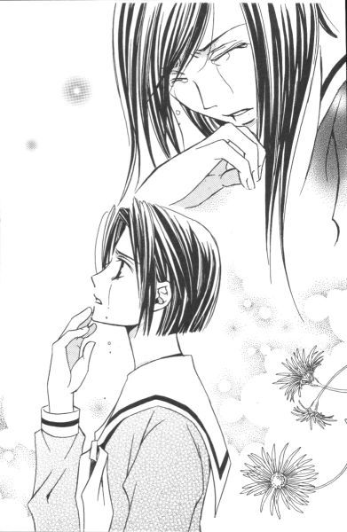
「在校生を代表して、心よりお祝い申し上げます」
令だった。
まるでそれが本来の形であるかのように、令は自然体で祥子の手にしている送辞の続きを読み始めた。何と心憎い友情であろう。
妹の危機を助けてもらった感謝を忘れて、軽い嫉妬すら覚えてしまった蓉子である。
送辞の半分ほどまでくると、祥子はようやくと持ち直し、令と一緒に読み上げを再開した。
「最後となりましたが、お姉さま方のご健康とご活躍をお祈り申し上げ、これを送辞とさせていただきます」
いただきますの「す」で、今度は令がこみ上げてきたようで、声がひっくり返ってしまったが、そこはご愛敬であろう。
「在校生代表、小笠原祥子」
祥子は「そして」とつなげ、令が照れくさそうに「支倉令」と言った。
一瞬、会場が息を吸い込んだようにしんとなり、次の瞬間コンサートのラストナンバーが終わった直後のような拍手が鳴り響いた。
轟音。
（送辞って、こんなに受けたっけ......？）
去年と一昨年、高等部の卒業式に出席したが、こんな盛り上がった記憶はない。
興奮さめやらない体育館は、マイクの音をもかき消すほどの騒音。再び静寂が訪れるまで、たっぷり数分の時間を要した。──たぶん、カップラーメンが出来上がるくらいの。
「答辞」
ウォッホン、という咳払いをし、気を取り直してから教頭が言った。
「卒業生代表。三年椿組、水野蓉子」
「はい」
やれやれ、やりにくいな。そう思いながら、蓉子はパイプ椅子を立ち上がった。
歩きながら、考える。
先にあれをやられては、もう涙で答辞が読めないなんてこと、死んだってできやしない。もっとも、緊張も感慨も祥子のお陰で全部吹き飛んでしまったのだから、やりたくてもそういう状態にはならないはずだった。ここは優等生を全うして、締まりのある卒業式に戻すのが正解のようだ。
でも、もし。
蓉子は思った。
もし、自分が祥子と同じ状態になったとしたら──。果たして二人の親友は、令と同じ行動をとってくれるのだろうか、と。
もし。
聖と江利子の顔を思い浮かべて、蓉子はその仮定をすぐさま打ち消した。
あの二人のことだ。
前に飛び出すどころか、パイプ椅子でふんぞり返り、指をさしながら笑うに決まっているのだ。
２
さすがは令。
自分の目に狂いはなかった、と江利子は誇らしげにうなずいた。
竹刀を持たない時は、ただの穏やかな女の子といった感のある令であったが、なるほど今年度のミスター・リリアン。やる時はやる。格好いいじゃないか。
答辞が始まった。
さすがに蓉子は、声を詰まらせたりはしない。憎たらしいほど落ち着きはらっている。最後の最後まで、そつなく優等生であり続けるわけだ。
「思い返せば、高等部の三年間は──」
蓉子の声を聞きながら、江利子は目を閉じた。眠くなったわけではない。蓉子の声を、心にしっかりと刻みつけたかったのだ。
高等部の三年間はいろいろなことがあった。蓉子とは六年間、聖になると何と十四年ものつき合いとなるのだ。
十四年。
それは取りも直さず、江利子がリリアンで過ごした年月であった。
あと四年リリアンに留まる道もあったが、外に出るには丁度いい時期であるような気がする。
今更、なぜ。──受験組に回った時、よくそう聞かれた。
幼稚舎からつき合いのある友人たちには特に、大学がリリアンでは駄目だという理由を求められた。
今更、なぜ。そう尋ねられても、なかなか明快な答えは導き出せないものだった。
リリアンはいい学園だ。不満はない。
では、どうして。
たぶん満足したからであろう、と江利子は漠然とであるが思った。リリアンでの学校生活が満ち足りたから、心残りなく、新たなる世界へと旅立てるのだろう、と。
あまりに取り留めがないので、例の質問には「行きたい学部がリリアンにはない」と答えるようにしていた。それも間違いではないが、正解ではない。
本当に学びたいものが見つからないから、それを探すために進学するのだ。だから、突き詰めていけば、リリアン女子大で文学や家政を学んだってよかったはずだった。
自分自身、心の中をすべてわかっているわけではないから。取りあえず、わかりやすい理由を掲げただけだ。
蓉子の答辞がもうすぐ終わる。
今、リリアンを去るにあたり、やはりいろいろなことが思い出されるものである。
一番意義があったのは山百合会で活動できたこと。そして、そこで得た妹と友。それらは、かけがえのない財産だった。
（あ、まずい。感傷的になっている）
これから、もっと面白いことを探そうというのに。しんみりしてどうする。江利子は、自分自身に喝を入れた。
でも。
少しだけ目尻に溜まった涙くらいは、大目に見てやる。
今日くらいは、泣いたっていいのだ。責める人間などどこにいよう。
『仰げば尊し』のイントロが聞こえてきた。
３
序盤は退屈だったが、終盤は結構おもしろかったな。──と、聖は卒業式を振り返った。
少なくとも、瞼が閉じて持ち上がらないようなことはなかった。口の中も渇いていない。もちろん、よだれなんて以てのほか。
祥子の涙でぐちゃぐちゃになった顔も拝めたし、ここぞという時に子供向け番組のアクションヒーローさながらに令が登場したシーンも堪能できたし。欲をいえば、蓉子がもう少し笑いをとってくれれば最高だったのだが、言いはじめたらキリがないのでやめた。
こういうことは、さじ加減が難しい。祥子で場内を感動させたからといって、蓉子まで泣き出したら白けるに決まっているのだ。それに蓉子が泣いている横にしゃしゃり出て答辞を読むなんて、とてもじゃないがご免だった。江利子もきっと同じだろう。
冷たい、わけではない。蓉子と江利子と聖。たまたま三人はそんな風につながり合うのが、性に合っていただけだ。
人との関わり合い方というのは、人それぞれだから。百組いれば百通りのつき合いというものが存在する。
聖の場合、さらりとした関係がうまくいくようだった。志摩子ともそうだ。くっつきすぎて失敗した栞との関係をみれば、言わずもがなである。
相手の領域には踏み込み過ぎない、という暗黙のルールを互いに了解しあっているから、うまくやってこれたのだ。蓉子とは、時に立ち入りが過ぎて、けんかをしたこともあったが。相手を思えばこそ、と納得できる関係を築いていたから、ちょっとやそっとでは友情は崩れなかった。
（大切なものができたら、自分から一歩引きなさい）
一年前の今日、お姉さまのいった言葉が甦る。聖は、天井を見上げた。
あの時は、その先に待ちかまえている一年間が不安だった。
しかし、一年なんてあっという間に過ぎていってしまった。
あっという間で、それでいてとても楽しい時間だった。
『仰げば尊し』のイントロが聞こえてきた。
聖は、この歌詞にはあまり共感できなかった。
何十年か経てば、少しは教師たちの苦労を「大変だっただろう」と思える日が来るかもしれない。だがまだ今は、「わが師の恩」が尊かったとは、とてもじゃないが思うことができないのだ。
（身をたて、名をあげ、励めと言われてもなぁ）
明治にできたままの歌詞だから時代錯誤は仕方ないのだが、出世なんかしなくても楽しく元気に暮らせたらいいのに、なんて。どうしても突っ込みを入れたくなるのだ。
しかし、今回ちょっと違う。祐巳ちゃんがえらく共感してくれたので、「いと疾し」を「愛おし」と歌うことに聖は勝手に決めた。
そうすると、あら不思議。
好きになれなかった教師や嫌な思い出なんかもひっくるめて、思い返せば愛おしいとし月であった、と認めることができたのだった。
いろいろあったけれど、総じてよい思い出なのだ、と。そう思いながら、歌うことができた。
（今こそ わかれめ いざさらば）
別れの挨拶を唇にのせても、感極まったりはしない。昨日、教室に別れを告げた。教室の窓から、芽吹いた木々を眺め、その枝間から空を見上げた。
確かにここにいた、そのことを自分の心に刻みつけられれば、聖にとっては十分だった。
別れを告げるべき人間はいなかった。
大切な者たちには「さらば」とは言わない。こちらが想い、向こうも気持ちを寄せてくれるのなら、いつの日か、約束しなくても必ずまた会うはずだから。
ピアノの伴奏は『仰げば尊し』を終えると、校歌の前奏を弾きはじめた。
長年親しんだリリアンの校歌は、どちらかというと体育館よりお聖堂に似合う旋律だった。
光の中へ
１
日差しが、温かい。
体育館から外に出た瞬間、江利子は思わず目を細めた。
まぶしい。
照明をつけても晴れた日の自然光には遠く及ばない体育館の明度に、彼女の目はすっかり慣れてしまっていた。
「江利子さん、江利子さん」
「え？」
出席番号が一つ前のクラスメイトに、江利子は肩を揺すられた。何事かと、細めていた瞼をしっかり開いて最初に目に飛び込んできたものは──。
「......山辺さん」
熊男であった。
「どうして、こんな所にいるわけ!?」
江利子は、もうじき渡り廊下に差し掛かろうとしていた三年菊組の列から外れて、「こんな所」へと駆け寄った。そこは体育館の側面ではあるが、入り口からはずいぶん外れた場所だった。
「面目ない」
山辺さんは、開口一番そう言った。
「面目ない？」
江利子一人を吐き出したクラスの列は、何事もなかったように進んでいく。山辺さんのことを教えてくれたクラスメイトが、ウインクして親指を立てた。
「面目ない、って。何よ、それ」
苛立ちながら、江利子は質問した。少なくとも彼は、卒業生退場の時点で体育館の外にいたわけである。式に参列していなかったことは明白だった。
「......今、来たの？」
「いや」
「じゃ、どうして中に入らなかったの」
「だから面目ない」
ガバッと頭を下げる山辺さんの遙か後方、ちょうど体育館の出入り口付近にいた生徒たちと目があった。彼女たちは江利子たちの様子をチラチラうかがっていたようだったが、目が合うとすぐに体育館の中に姿を隠した。列をなして退場している卒業生ではなかった。腕に腕章をしていたから、卒業式を影で支えてくれた係の生徒たちだろう。
「ははん」
江利子は成り行きが見えてきた。
「不審者に間違われたわけね」
ボロボロのセーターにひげ面の彼は、とても卒業式に参列する人には見えなかった。その上、取るものも取りあえずあわてて花寺学院を出てきたものだから、身分証明書不携帯。それでは、ただ中に入れてくれと言っても難しいだろう。
「だから、うちの両親と一緒に来ればよかったのよ」
女子校だから、チェックが厳しいのだ。山辺さんは何とか敷地内には入れたものの、体育館の中までは無理だったようだ。
受付をしていた生徒に落ち度はない。関係生徒の名前と続柄を尋ねられて答えに窮し、そこで入場を断念した山辺さんが不甲斐ないだけだ。
「考えてみたら、家族でも何でもない自分には卒業式会場に入る資格がないんじゃないかなんて──」
「......バカじゃないの。卒業する私が来て欲しいと思ったんだから、資格なんてね、それで十分なのよ」
山辺さんは江利子の啖呵にちょっと驚いたようだったが、やがて納得したようにうなずいた。
「ああ、そうか。その通りだな」
本当にこの人は自分より十も年上なのだろうか、と江利子はため息をついた。しかしまあ、惚れた弱みだ、許してやろう。
「そろそろ行ったほうがいい」
山辺さんは、体育館からぞろぞろと出てくる生徒の列を指さした。こういう時だけ、いっぱし教師の顔になるんだから。
「そうね」
江利子は素直にうなずいて、山辺さんに背を向けた。前方には蓉子の姿がある。ラストの椿組が退場したところだ。
軽く駆けだして、振り返る。
「ありがとう、来てくれて」
「いや」
山辺さんは照れながら、でも誠実に言った。
「江利子さん。卒業おめでとう」
うれしかった。
２
日差しが、温かい。
昇降口から外に出た瞬間、蓉子は思わず目を細めた。太陽がほぼ真上で、降り注ぐ光線を遮る雲はほとんどない。
体育館から一旦教室に戻り、そこで証書と成績表を受け取った。クラスメイトたちは興奮していて、担任の最後の話なんかほとんど耳に入っていない様子だった。
三月いっぱいはリリアン女学園高等部に在籍しているのだから、行いには注意するように、とか。
四月以降もリリアンの卒業生として、マリア様のお心に恥じない人生を送るように、とか。
そんなことをだらだら訓示していたが、それはたぶん三年生の担任が最後に申し伝えなければならない決まり事であるから言っているだけだし、それをわかっている生徒側は「ふんふん」と聞いている振りをしていればいいのだった。
昇降口を出た所には、山百合会の仲間たちが揃っていた。
祥子、令、由乃ちゃん。志摩子と祐巳ちゃんの姿がまだ見えないところを見ると、一年桃組はまだホームルームが終わっていないようだ。
「蓉子、上履き持った？」
菊組は一足早く解散したらしい。江利子が笑いながら近づいてきた。
「もちろん？」
「ぬかりないわよね。誰かさんとは違うもの」
誰かさん？ 首を傾げたと同時、蓉子の背後からぬぼーっと人影が現れた。
「誰かさん、って私のこと？」
聖である。
「聞いて、蓉子。聖ったらね、いつもの調子でうっかり上履きを下駄箱にしまっちゃったんですって」
江利子は、こんな面白いことはない、というようにカラカラと笑った。
「笑いすぎでしょ」
鬱陶しそうに頭をかく聖は、昼寝の後の子供のような顔をしていた。これは卒業式の最中、さぞかし睡眠をとったに違いない。
「まったく。卒業する人間が上履き置いていって、どうするのかしらねぇ。次に使う予定なんてあるわけ？」
江利子は最後の最後まで容赦ない。
「同じ敷地内の大学に通うからって、聖は気持ちに締まりがないのよ」
「お言葉ですが。大学とか関係なくて、これは単なる癖ざんすよ。終業式の日に上履きを学校に置き忘れる率、五十パーセントの私をよもやご存じない？」
「嘘。信じられない」
「今だから打ち明けるけど、夏休みに取りに来たりもしたんだな」
さすがの聖も、真夏の約四十日間、下駄箱に上履きを放置する度胸はなかったらしい。風通しと日当たりの悪い場所では、確かに醗酵してしまいかねない。
「無理に打ち明けてくれなくてもいいわよ。これ以上、あなたのファンのイメージをぶち壊さないで」
二人の会話を聞きながら、蓉子は首をすくめた。聖のイメージなんて、もうずいぶんと前からガタガタなのに。
「お待たせしました」
志摩子と祐巳ちゃんが「カメラちゃん」こと武嶋蔦子ちゃんを伴って現れた。
これから山百合会のメンバーで、卒業記念写真を撮ることになっているのだ。
天候に恵まれて、よかった。傘をさしての記念写真は、シチュエーションとして面白いけれど大変だ。
「どこで撮る？」
蔦子ちゃんを加えて相談をはじめると、祐巳ちゃんがこそこそと祥子を輪の中から連れだした。
（何をしているのかしら）
非常に興味深かったので、蓉子はその場で輪の外の二人に意識を集中した。
「お姉さま、これ」
祐巳ちゃんが、祥子にティッシュケースを手渡していた。
（ほう）
結構度胸あるじゃないか、と蓉子は感心した。
どこかで顔を洗ったのか、心持ちすっきりした祥子であったが、目と鼻が赤くなってしまったのはなかなか引かない。みんな気がついているのだが、うつむく祥子に気を遣ってそれについては触れようとはしなかった。
「何？」
全校生徒並びに父兄来賓の前で号泣した祥子は、ばつが悪いのだろう、妹に対して攻撃的な受け答えをした。
「鼻をかむと、すっきりします」
「あなたね──」
「ドライアイでも花粉症でも。何にしてもすっきりしますから。私も一昨日、お姉さまと同じ感じになって、志摩子さんにティッシュもらって、それで......」
「──」
祐巳ちゃんの迫力に圧倒されて、祥子が黙った。
「本当にすっきりするのね？」
言いながら、目の前のケースからティッシュを一枚引き出すと、思い切り鼻をかんだ。
ちーん。
ティッシュをポケットに納めて顔を上げた祥子は、とてもいい表情をしていた。
３
日差しが温かい。
銀杏並木の枝から差し込む光に、聖は思わず目を細めた。
二股の分かれ道にあるマリア像の前で、写真を撮ることになった。
聖はどこでもよかったのだが、蓉子と江利子がマリア様の前で、と希望したのだ。やはり、いざ学校を離れるとなると、長年見守ってくれたマリア像とも別れ難いのだろう。
薔薇ファミリー八人、プラスカメラちゃんという大所帯でぞろぞろと移動する。おまけの付録で新聞部の部長とその妹が、見学と称してくっついてくるから、端から見れば変な団体であろう。
卒業式が済んであまり時間の経っていない校庭には、別れを惜しむ生徒たちや参列した父兄たちがまだそこここに残っている。聖たちのように記念写真をとるために集まっているグループも少なくない。
「で、山辺さんは来てたの？ 来なかったの？」
並んで歩く江利子に、聖は尋ねた。蓉子は何か事情を知っているようで、笑いを堪えながら足早に祥子たちの集団に合流してしまった。
「来るも来ないも」
江利子はうんざりしながら、事の次第を説明した。
「ふむふむ。なるほど」
聖は笑いながらそのエピソードを拝聴した。
卒業生退場というまさにフィナーレ直後に、江利子が列から外れて体育館脇で山辺さんに文句を言ったシーンは、目に浮かぶようだ。
「山辺さんも、江利子のお兄さんの振りくらいすればよかったのにね」
「そういう小細工が苦手な人なのよ。そこがいいんだけどね」
やれやれ、結局のろけである。あのでこちん江利子がこんな風に変わるなんて、恋とは恐ろしいものだ。
「ねえ」
突然江利子が立ち止まり、遠い目をして言った。
「私たち、大昔けんかしたじゃない？」
「ああ、したした。十年一昔だから、十四年は確かに大昔だわね」
聖は、ゆっくり歩く。幸福な時間の名残を惜しむように。
「けんかの原因、何だっけ」
江利子も再び歩き出す。二人はまるで老夫婦のようだった。
「嘘、忘れたの？」
「何だか気に障るようなことを、言ったような言われたような気はするんだけど」
冗談ではなく、江利子は本当に覚えていないらしい。
「江利子が『アメリカ人』って言ったから私も『でこちん』って言った......けど」
「あらま」
「......忘れちゃうものなのね」
確かに、しつこく覚えていたのなら、江利子がいまだに前髪上げておでこ全開スタイルをキープしているわけはなかっただろうが。
「お祖母ちゃんから『江利子の額の形はいい』って誉められていたからね。あー、そうか。それで『でこちん』なんて言われてカーッときたのか、私は」
まるで他人事のように分析する江利子。人の記憶なんて曖昧だ。聖自身、どこまで真実だったのかわからなくなってしまいそうだった。
「それにしても、会って突然『アメリカ人』は悪かったわ」
ごめんなさいね、と十四年前の失言を江利子は詫びた。しかし聖は、「いや」と首を横に振る。
「後々になってわかったんだけど。父方の何代か前に、確かにモンゴロイドじゃない人がいたんだそうな」
「隔世遺伝だったわけ？」
「そういうことになるわね。だから江利子の言ったこと、あながち間違いじゃなかった。だから、謝らなくていいよ」
「だったら私もね。立派なおでこなのは間違いなかった」
江利子が右手を出したので、聖はそれに自分の手をパチンと打ち付けた。今度は、目をそらしたりしない。十四年かかってやっと、互いに納得できる和解を果たした。
「変なの」
無性におかしくなって、二人は笑った。これまでだって、特にわだかまりがあったわけではないから、仲直りの意味がかなりぼやけている。それでも幼稚舎時代の大人たちに向かって、「ざまあみろ」と言ってやりたかった。
「ところで、その人、アメリカ人だった？」
江利子は十四年前の江利子同様、その話題に食いついてきた。──というより、十四年間おあずけをくわせてしまっただけの話だったのだが。
「国籍まではわからない。その人自体、いろいろな国の血が混ざっていたらしいし」
「そうかー」
江利子が伸びをした。もうずいぶんと間隔が開いてしまった先頭グループにいた令が、何を勘違いしたのかこちらに向かって笑って手を振る。
「時々聖が遠くに行っちゃいそうに見えたのは、ご先祖の放浪の遺伝子の悪戯だったわけだ」
江利子の理論は、めちゃくちゃだった。
マリア像の前まで来ると、混んでいると思っていたわりに人気はなかった。
「まずはどんな感じで撮りましょうか」
蔦子ちゃんが何パターンか提案する。新聞部は「見学」という名でついてきている手前、何も言わない。しかし何か事が起きればいい、というギラギラした目で、少し離れた場所から写真撮影が始まるのをじっと待っている。
「志摩子、おいで」
聖は、妹を呼んで彼女の両肩に手を置いた。志摩子と隣り合わせで写真を撮った記憶がないので、紅・白・黄にまとまって撮るのも最後くらいいいと思った。
「あ」
しかし、いざ蔦子ちゃんがシャッターを押そうとした時、志摩子は突然何かを見つけて飛び出した。
「静さま！」
「......え？」
何と志摩子が駆け寄った先には、蟹名静嬢が。こちらの存在を気づかず下校してきたようで、志摩子がすごい勢いで走ってきたのを見て、本当に驚いているようだった。──逆に、志摩子の視力がすごいというべきか。
「ご卒業おめでとうございます」
志摩子に引きずられるように連れてこられた静は、卒業生三人にまずお祝いを言った。
「これから写真を撮るんです。よろしければ静さまもご一緒に」
志摩子が言った。いつになく積極的である。
卒業という形ではないが、三月いっぱいでリリアンを去る静。たぶん志摩子は、彼女にも思い出を分けてやりたいと思ったのだろう。
しかし。
「ありがとう。でも、今回は遠慮させていただくわ」
静は笑顔で辞退した。
「でも」
「志摩子。無理に誘わないの」
聖は志摩子の腕を掴んで引き寄せた。
静が望むなら、記念写真の輪の中に迎えることは構わない。だが彼女の心は、それを望んではいないはずだった。だから、もういいのだ。
「志摩子さんのお心遣いはうれしかったわ。でも、私は今日も明日もいつもと変わらぬ日常でありたいの」
そうして一般生徒と同じように終業式を迎え、イタリアに発っていきたい。たぶんそれが静の偽らざる気持ちなのだと、聖には感じられた。
静は、聖に向き合った。
「さよならは言いません。またお会いするつもりでいますので」
「そうだね。また会おう」
ごきげんよう、と言って静は校門へ向かって歩みだした。決して振り返らない。蔦子ちゃんがその後ろ姿にカメラを向けた。
潔い、背中だ。
カメラマンなら、迷わずシャッターを押すべき被写体だった。
しかし、シャッター音は鳴らなかった。
「さて、んじゃ撮影会を再開いたしましょうか」
静の姿が完全に見えなくなって初めて、蔦子ちゃんはこちらを向き直って明るく言った。
言葉でうまく説明できないが、その姿は非常に好感が持てた。
４
カシャッ。
シャッターの小気味いい音が鳴った。
この一瞬だけ、フレームの中に収まる。確かに、ここに自分たちの友情が存在していたのだと、確かめるために。
本当はそんなことをする必要はないのだけれど、明日のことなどわからないから。
確かな今を、閉じ込めておくのだ。
マリア様を真ん中にした全員の写真の他に、数枚の写真を撮った。卒業生三人並んだり、薔薇の色別とか姉妹とか。
皆、はしゃいでいた。まるで夢の中の出来事のようだった。
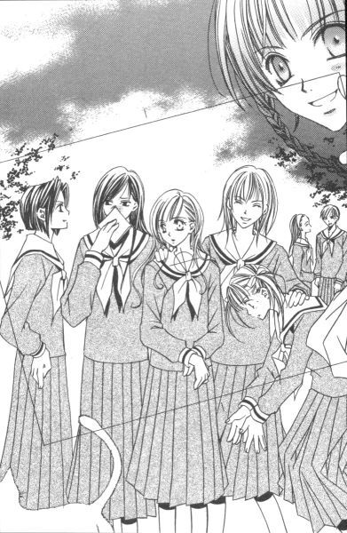
「写真、お送りしますね」
蔦子ちゃんの言葉に、江利子は顔を上げた。夢の終わりが、近づいている。
「ありがとう。楽しみに待っているわ」
「あのっ、リリアンかわら版卒業記念号もお送りしますから」
築山三奈子女史が、会話に割り込んで来た。我慢していたが、蚊帳の外も限界らしい。
「......そっちは別の意味で楽しみね」
蓉子が眉を下げて笑う。
「薔薇さま方。あの、いろいろとご迷惑かけてすみませんでした。でも、薔薇さまたちと同時期に高等部ですごせて、私すごく幸せでした」
言いながら三奈子女史はボロボロと涙を流し、
「あらっ？ えっ？ 私ったら何？」
自分で流した涙にパニックを起こした挙げ句、
「やだ、ごめんなさいっ」
──その場から駆けだしたのだった。
「何だろ、あれ」
スカートの襞を乱しながら走るポニーテールの後ろ姿を、聖は首を傾げて見送った。見送ってくれるつもりじゃなかったのかね、と。
「ほんと、申し訳ありません。最後の最後まで」
三奈子の妹である新聞部期待の新人ライター真美嬢は、一年生とは思えない落ち着きで姉の失態を詫びた。
「あんな編集長ではご心配かと存じますが、新聞部が一丸となっていい新聞を作ってお送りいたしますので。今日のところはお許し下さい」
「──」
口に出さなかったが、その時その場にいた全員が間違いなく思っていた。
誰が心配なんてするものですか、新聞部部長にはこんなにいい後継者がいるのだから、──と。
「じゃあね」
そう言って、三人は別れた。
マリア様の見守る分かれ道で。
蓉子と聖は正門に、江利子は裏門に。
「じゃあね」
次に会う約束はしなかった。しなくても大丈夫だということを知っていた。
可愛い後輩たちは、その場で留まり三人の門出を見送ってくれる。
誰も「さよなら」とは言わなかった。
言い足りない言葉が、まだたくさんあったかもしれない。けれど、すべてを伝えられはしないから。
『蛍の光』にもあるように、ただただ願うだけである。
幸せに、と。
みんな、みんな幸せに。
この学校で、あなたたちと出会えてよかった。
片手だけつないで
染井吉野の薄紅色の花びらは、遠目には白く見える。
だから春の風がいたずらに巻き起こす桜吹雪は、さながら本物の雪が舞っているかのように目に映るのだろう。
すべてを包み隠してくれるのではないかと錯覚するほど、そこに存在していた花びらの分量は多かった。自分の姿すら見失ってしまうほどであれば、十メートル先にいる誰かに気がつくはずもない。
かくして、二人の少女はお互いに相手の姿がそこにあることも知らずに、その場に留まっていた。桜吹雪の中で二人の距離は次第に近づき、もうこれで十分というところで、風はピタリと止まった。
「あ......」
その時、二人とも初めて認知したのだ。
髪といわず制服といわず、白い花びらをまとった少女がこちらを不思議そうに見つめているのを。
しかし、それにしても何ということだろう。
白い少女は、まるで鏡に映った自分のようではないか。
風の収まった桜の木々の中で、チラチラと染井吉野の花びらが小雨のように降る中。しばらく、二人は無言で向かい合っていた。
それが、佐藤聖と藤堂志摩子の出会いだった。
春の風
１
高等部校舎の裏手にある見事な桜の木々は、四月の始めの二週間という極めて短い期間のためだけに生きているようなものだ。
花の時期が過ぎ、若葉が萌え始めてから盛夏までは、蝶だか蛾だかの幼虫が幅を利かせる。枝を見上げる地表には、何かの種子を撒いたように黒々とした糞が散らばり、迂闊な毛虫が葉から足を滑らせて落ちてきたのを不運にも髪や制服の肩などで受け止めてしまうという事故も毎年必ず発生する。
かといって、校舎の裏手のこの一角は、第二体育館やお聖堂へつながる中継地点で、裏門利用者には通学路となっている場所。努力で避けきれるものではない。その時期桜の木の下を通る時は、足もとと頭上と両方注意して速やかに走り去る。それが、リリアンの常識である。
その鼻つまみものがやっと羽化してくれたと思えばすぐに秋を迎え、膨大な落ち葉の掃除に追われる日々。
花が咲いた結果、当然のように実りの時期が訪れようとも、食用のさくらんぼが穫れるわけでなし。これならばギンナンの穫れる銀杏並木の方が、臭いというマイナス要素があるにしても幾分ましなのではないか。
しかし、もちろんそれは我が儘な人間にとっての価値でしかない。
桜は、何も知らずに、咲き、散り、若葉を繁らせ、実をつけ、葉を枯らせて落とすという作業に没頭しながら、一年一年を過ごしているだけ。
そうして、この場所に佇んで数十年。
学園にいる人間たちより遙かに長い間、リリアンを見続けているはずなのだ。
「そうよ。大したことじゃない」
つぶやきながら私は、一月前と同じように桜の木を見上げた。
花はまさに満開。そして、隣にはもうお姉さまはいない。
いつの間にか私は、高等部の最高学年になっていた。
私は二年間首に馴染んだロザリオを外し、それを幾重かの輪にして右手の手首にはめた。首から下げていて不都合があるわけではなかったが、お姉さまが卒業してしまった今、未練のようで嫌だった。お守り代わりとして、手首に巻いているくらいが丁度いい。
花びらがクルクルと螺旋を描きながら、目の前を落ちていく。私はそれを、ロザリオをした右の手の平を開いて受け取る。
慰めてくれているのか、それともヤワな心を笑っているだけなのか。どちらにしても、桜は何か私に言いたげだった。
「そうよね」
私はうなずきながら、手の平の丸い花びらを吹き飛ばした。ひととき、この手の中に留まっていた小さな存在は地面に届くと、すでに落ちていた花びらの中に溶け込み、すぐに見分けがつかなくなった。
そう。それは、本当に大したことではないはずなのだ。
戦争をくぐり抜けた桜の木々は、もっと悲惨な出来事を目撃してきたに違いない。深刻な涙を、やり切れない思いを、悲しい人たちを知っているはずだった。
愛しい人たちを失ったといっても、私の場合、彼女らはまだどこかで生きている。
出会いがあれば、別れもあるのは至極当然。心に空いた小さな穴は、自力で修繕できるくらいの大きさであるはずなのだ。
風が、少し吹いてきた。それが桜の枝を揺らして、花びらを容赦なく散らす。私は、天を仰いでそっと目を閉じた。そうすることで、降り注ぐ花びらが、自分を塗りつぶしてくれるような気持ちになるのだ。
空や海、そして木々といった人間からより遠い所にある美しき物たちに同化したいと、何度願ったことだろう。罪深い「人間」という動物として生をうけたことを嘆き、自然に謝罪し、許されたい。生きることから逃げていると責められようと、この感情だけはどうしようもない。
栞に惹かれたのは、彼女の中に神々しいものを見つけたからだった。彼女が側にいる限り、その光に照らされて私も生きていていいのだと思うことができた。
「白薔薇さま......、か」
四月になって、私をそう呼ぶ生徒が増えてきた。まだ、慣れない。それは、一月前まではお姉さまが呼ばれていた称号だったのだ。
恩返ししたい気持ちがあるなら別の誰かに、とお姉さまは言った。しかし、そのようなことができるのだろうか。
否。こんな弱い人間に、後輩を引っ張っていけるとはとても思えない。
以前のような、無邪気な生徒たちをバカにする気持ちはもはやない。むしろ彼女たちのことをうらやましく思うことさえある。ただ生きるだけでも、こんなに大変なのに。それを難なくこなし、楽しめる力強さを持ち合わせているのだから。
自分には何かが欠けている。そんなこと、わかっている。だが、それが何かは、具体的に示せるほど、はっきりとした形をなしていなかった。
ますます強くなった風は、地面に落ちた花びらさえも巻き添えに白い世界を作り出した。
辺りはこんなに花びらで満ちているのに。人間は人間として、桜は桜として、はっきりとした境界線を保とうとする。
それが理なのだろう。
栞と自分。人間同士でさえ、一つになれなかったのだ。それほどまでに、私たちは進化の道を突き進んできてしまった。
涙は出なかった。
悲しいという感情は積み重なると、やがて諦めに転じるのだ。
風は、突然止んだ。
そして開けた視界の中で見つけた、自分でない誰か。
「あ......」
声をあげたのは、どちらだっただろう。
二メートルと離れていない距離に、花びらを浴びた少女が、同じように目を丸くしてこちらを見ていた。
一瞬、私は栞を思い出した。人違いをしたわけではない、ただ、思い出しただけだ。
色素が薄い少女だった。顔立ちは派手ではないが、緩やかなウエーブを描いて落ちる茶色く長い髪のせいか、西洋のアンティーク人形を思わせた。
新入生か、転校生だろうか。少なくとも、知った顔ではない。もっとも、他人の顔など一々覚えているような性格ではないのだが。
こういう出会いに、私は弱い。
「あなたは......」
言いかけて、私は言葉を呑み込んだ。
デ・ジャ・ブ。
甘酸っぱい既視感が私を襲う。
栞の時も、そうだった。
栞は以前から私のことを知っていたが、私が彼女を認識したのは、人気のないお聖堂で二人きり向き合ったその時だった。
これでは、栞の時と同じではないか。彼女のことを根ほり葉ほり聞いて、終いにはストーカーのようにつけ回して、そして──。
壊してしまうのだろう。
私は、この場をどのようにやり過ごしたらいいかわからなかった。栞のように「ごきげんよう」と神々しくほほえまれたらどうしよう、と身構えた。
足下に跪くか、逃げ出すか。
いずれにしても、普通の精神状態でいられなくなるに違いない。
「失礼いたしました」
しかし、逃げ出したのは彼女の方だった。顔を赤らめて、ペコリと頭を下げて。そして校舎の方に駆けだしたのだ。
私は助かった。そして、桜の幹にもたれてホーッと息を吐いた。
「大丈夫、人間の女の子だった」
つぶやいてみて、不思議な気持ちになった。
私は、何を考えていたのだろうか。
２
その人の存在は、知っていた。
いや、顔ではなく名前を知っていた、その程度の知識だ。
白薔薇さまこと、佐藤聖さま。
日本人離れした彫りの深いお顔に憂いのある表情がとってもセクシー、とクラスメイトたちが噂しているのを入学式の日に耳にした。
中等部の時、一年間は同じ校舎にいたはずだったが、その人の顔は覚えていなかった。
リリアン女学園で上下のつながりが親密になるのは、高等部独自の伝統だった。それまでは義務教育ということもあって、教師やシスターのもと、クラスメイトとともに健全な心と肉体を育むよう指導される。それでもおませな生徒たちは、姉妹制に憧れ、中等部の頃から高等部での出会いを待ちきれずひそかに上級生の情報交換などをしていた。
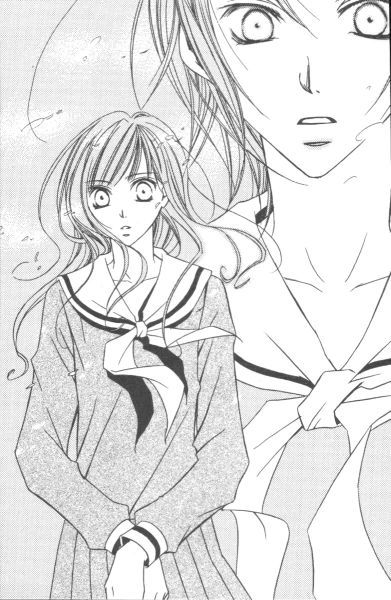
黄薔薇さまこと鳥居江利子さまは、タイの結び方とサラサラヘアが美しく、何をやらせてもいつも簡単にやってのける超人。けれど、決して得意げな顔をなさらない。あの、冷めた表情の良さがわからないのは通でない、とか。
紅薔薇さまこと水野蓉子さまは、大人受けする感じのいい物腰で、尚かつ行動力がおありで、典型的なクラス委員タイプ。そのバランスのとれた完璧な美しさは、他の誰にも真似はできない魅力である、とか。
入学したての出席簿順の席順で隣になったのが、上級生のことに詳しい人だったので、情報だけは私の周囲にあふれていた。
「志摩子さんは、どの薔薇さまがタイプ？」
時折そんなことを聞かれて面食らうこともあったが、そんな時私は正直に「わからないわ」と答える。
「ええ、どなたも素敵な方ばかりですものね」
クラスメイトたちは、好意的に解釈してくれる。私はそこで、この教室で机を並べる大部分の生徒は、自分が薔薇さまの中で誰が好きかということを意識しているのだということを初めて知る。どの人が薔薇さまであるのかもわからないでいる私は、かなり珍しい存在なのだろう。
誰派であるかなんて、可愛らしい派閥さえできている。いわば、身近にいる芸能人といった扱い。二つ上の上級生というのは、距離がある分、無邪気に噂できる存在のようだった。すでに姉妹の契りを交わした生徒たちも一緒になって騒ぐ。相手が薔薇さまであれば、姉の方も焼き餅をやくにやけないようだった。
ともかく。
白薔薇さまにはまだ妹がいないとか、そういう細かい情報は知らないまま「新入生を迎える会」の日がやってきた。
隣の席のクラスメイトの表現は結構的確だった。お聖堂で新入生を迎える山百合会幹部たちの中に紅薔薇さま、黄薔薇さまを見つけた私は、そのイメージ通りの容貌に素直に感心した。
しかし、ただ一人。白薔薇さまだけは例外だった。
と、いうより私は、佐藤聖という人物を具体的にイメージしていなかった。いや、そうではない。イメージを持つ以前にそうとは知らず本人を見てしまったがため、彼女とは別の人間像を想像し、途中で挫折したといったところが正しいかもしれない。
穏やかな表情で立っている彼女は、紛れもなく桜の中で出会ったあの人であったのだ。
しかし、なぜだろう。新入生におメダイをかける彼女の姿は、あの時の印象とは違った。ほほえんでいるというのに、痛々しく感じる。全身桜の花びらの洗礼をうけた、静かな眼差しをどこかに向けた透き通るような表情も確かに寂しげではあったが。可愛そうに、と手を差しのべたい感覚にはならなかった。
「志摩子さん」
後ろから肩を突つかれて、私は「はっ」と我に返った。
「少し詰めないと」
クラスメイトが小声で言った。気がつけば、私の前にはすでに二人分ほどの空間が空いていた。
「あ、ごめんなさい」
私は小走りで前の生徒の後に付いた。当たり前のように私も新入生で、薔薇さまたちからおメダイという小さなメダルをいただくために並んでいたのだ。
私は何を考えていたのだろう。
一瞬だけにしろ上級生に対して「痛々しい」だの「かわいそうに」だのと思ったとは、何ておこがましい。
李組が終わり、すでに私のクラスである桃組が始まっていた。私たちの前方に立っているのは、紅薔薇さまだった。けれど、私の視線は黄薔薇さまを挟んでもう一方の端にいる白薔薇さまに引きつけられていた。
私は知りたかった。その姿を見ているのはつらいことなのに、その理由もわからず、目をそらすことすらできないのはなぜなのか。
三人の薔薇さまは、新入生一人一人の首におメダイを掛けていく。補助している生徒は、妹であろうか。
やがて、私の番がやってきた。
「マリア様のご加護がありますように」
紅薔薇さまが私の首におメダイをかけた、その時。白薔薇さまがチラリとこちらを見たように感じたのは、勘違いであったろうか。
一年菊組の島津由乃さんが桃組の教室に訪ねてきたのは、新入生歓迎会も過ぎて一週間ほど経ったある日の放課後だった。
「はい？」
「あのね、一緒に来ていただけないかしら。委員会活動とか、今日はないでしょう？」
ほほえんで、由乃さんは先を歩いていった。
彼女とは、中等部の時一度同じクラスになったことがある。心臓に持病をもっていて、欠席や早退が多かったという印象しか残っていない。もっとも、彼女だけでなく、他のクラスメイトに関してもあまり記憶に残っているエピソードなどはない。リリアンに入学してからは特に、私は親しい友人を作るのが苦手になっていたのだ。
だからそれほど仲よくしていたわけではない由乃さんが、私に何の用事であろうか見当もつかなかった。
「どちらに」
「薔薇の館に」
「薔薇の──」
私は言葉を呑み込んだ。
薔薇の館。
それは、リリアン女学園高等部の生徒会である山百合会の本部というべき建物を称する名前であった。放課後など、薔薇さまたちがそこに集まっているらしいということは、隣の席の生徒の情報から知っていた。しかし、やはり新入生には敷居が高いらしく、実際見に行ったという話は聞いていない。
高等部校舎に挟まれた中庭に、薔薇の館はあった。古い木造の、二階建ての洋館は、小さいながらも威風堂々とした佇まいをしている。
「勝手に入っていいものなのでしょうか」
由乃さんが玄関の扉を開けたので、私は咄嗟に質問を投げかけた。
「え？ ......ああ」
由乃さんは、セーラーカラーの内側に手を入れて、胸もとから何か取り出すと一瞬だけ見せてくれた。
「私、入学式の日より支倉令さまの妹になりましたの」
緑色の、きれいなロザリオだった。
支倉令さまは 黄薔薇のつぼみと呼ばれる二年生で、黄薔薇さまの妹という立場であった。その関係で由乃さんは薔薇の館に出入りしているらしい。まったく私という人間は、そういうニュースにかなり疎かった。
「志摩子さんに会いたいと言ってらっしゃる方が、ここでお待ちなの」
「それは、白薔薇さま......？」
私は、尋ねた。高等部に入学して一ヶ月、山百合会の幹部たちとの接点など何もない。思い当たることがあるとすれば、たった一つ。桜吹雪の中で偶然出会ったのが佐藤聖さまであったと、それだけだった。
「いえ」
由乃さんは言いながら、玄関を入ってすぐ見える階段を上った。
「待っていらっしゃるのは、紅薔薇さまたち」
館内は、外観と同じく内装もかなりくたびれている。階段に足を掛けると、今にも壊れそうな木のきしむ音がした。
「紅薔薇さまが、どうして私を？」
「さあ」
それは、由乃さんにもわからないことのようだった。首を傾げて、先を歩く。
「私が迎えに出されたのだって、志摩子さんの顔を知っているというだけの理由だもの」
「そう」
私は諦めて由乃さんに続いた。考えてみれば、あの白薔薇さまが人を使って私を呼び出すとは思えなかった。用事があれば、自ら出向くような気がする。根拠はないが、何となくそう思った。
由乃さんは「紅薔薇さまたち」と言った。私の顔を知らない複数の上級生が私に話があるのであれば、由乃さんが迎えに出されたというのもうなずけた。
由乃さんは階段を上りきると、廊下を歩いた先にある茶色い大きな扉をノックした。
「藤堂志摩子さんをお連れしました」
「ご苦労さま、入っていただいて」
部屋の中から、やわらかい返事が聞こえた。
「どうぞ」
私は、扉を開けた由乃さんに促されるままに、部屋へと足を踏み入れた。
「藤堂志摩子です」
挨拶して頭を上げると、そこにいた二人の生徒は椅子から立ち上がって私を迎え入れた。
「お呼びだてして、ごめんなさいね」
「ちょっとお話を伺いたくて」
座って頂戴、と椅子を引いて半ば強引に腰を下ろさせられてしまった。ちょうど、彼女たちと向かい合うような位置である。話というのは、簡単な内容ではないのだろうか。
「私たちの方も自己紹介が必要かしら」
「いえ、結構です」
他人との関わりが希薄な私であっても知らないわけはないほど、彼女たちは高等部における有名人である。──紅薔薇さまと黄薔薇さま。
「では、私はこれで失礼いたします」
紅茶の入ったカップを私の前に置くと、由乃さんは部屋を出ていった。
「ああ、由乃ちゃんどうもありがとう」
「ご苦労さまだったわね」
二人の薔薇さまたちは由乃さんの後ろ姿に労いの言葉をかけ、姿が扉の向こうに消えてからは雑談のようにつぶやいた。
「令は部活でしょ？ 一人で帰らせて大丈夫なの？」
「このところ調子がいいんですって。春は過ごしやすいらしいわ」
どうやら由乃さんの体調を心配しているらしい。
「ああ、そういえば顔色がよかったわ」
納得したようにうなずいていたかと思いきや、紅薔薇さまは不意にこちらを向い言った。
「それで、あなたはお姉さまはいるの」
「はっ!?」
位置的に、当然私が尋ねられているのであろうが、そうとわかっても、すぐには反応できないほど突拍子もない問いかけであった。
「お姉さまがいるのかいないのか、簡単な質問でしょう？」
黄薔薇さまが笑みをたたえながら、追い打ちをかけるように私に迫る。
「い、いません......けれど」
「念のために確認するけれど。私たちは、血のつながったご姉妹のことを聞いているのではないのよ」
「はい」
いずれにしても同じことだ。姉妹制度の姉も、同じ親から生まれた姉も。私はどちらももっていなかった。
「そう」
「それを聞いて安心したわ」
いったい何が「安心」なのか。紅薔薇さまと黄薔薇さまは、私を置き去りにニッコリとほほえみ合った。
「それじゃ、藤堂志摩子さん。本題に入らせてもらうわ」
「はい」
私は椅子の上で、多少緊張しながら次の言葉を待った。
「来てもらったのは他でもないわ。実は、あなたに一つお願いしたいことがあるのよ」
「お願い、ですか」
お願いと言いながら、なぜだか聞いたが最後承知しなければ帰してもらえないような圧力を感じた。高校生には不釣り合いな喩えだが、例えば、密事に関わることであるとか。
しかし。
「山百合会の手伝いを引き受けてくれないかしら」
「はっ!?」
私は一声発した後、二人の薔薇さまを見た。紅薔薇さまの「お願い」は漠然としすぎていた。受けるべきか断るべきかの判断をするには、言葉が足りなさすぎたのだ。
「そう。説明が必要よね」
私の心の内を察するように、紅薔薇さまは口を開いた。
「知っての通り、山百合会は薔薇と呼ばれる三人の生徒が中心になって活動している生徒会なの。でも三人だけでは手が回らないことは想像に難くないでしょう？そこで、私たちは自分たちの妹をアシスタントにしているわけ。そのことはご存じ？」
「つぼみ、と」
由乃さんの姉、支倉令さまがその立場だ。それから、確か小笠原祥子さまもつぼみと呼ばれていたような気がする。
「結構」
「話が早いわ」
顔を見合わせて、二人の薔薇さまは満足そうにうなずいた。
「私にも黄薔薇さまにも、頼もしい妹がいるわ。しかし、残念なことに白薔薇さまだけは妹がいないの」
「妹がいらっしゃらない」
私はその意味を理解しようと、紅薔薇さまの言葉を繰り返した。クラスメイトの情報で聞いたような聞かないような。でも確かに薔薇さまの中の誰かには妹がいないのだと、噂していたのを耳にしたことがあった気はする。
「そう、彼女に妹がいないの。その辺の事情は、本題とはあまり関係がないから深く考えてもらわなくていいんだけれど。実際問題、手が足りないことは確かなのよ。志摩子さん、新入生歓迎会には参加していたかしら？」
「はい」
実際、私におメダイを掛けてくれたのは紅薔薇さまだったのだが、新入生は大勢いたのだから覚えていないのも当たり前だ。一度、向かい合ったことがあるだけで、その人のことが気になって仕方ないなんて、普通はあまり起こりえないことなのだ。
「あの時、白薔薇さまはアシストする生徒がいないために、やむを得ず彼女のクラスメイトを手伝いに頼んだのよ」
でもその生徒も、今回限りという約束で引き受けてくれた、とか。これから三年生は進路のことで忙しくなるから、白薔薇さまの友人をあてにするのは難しいだろう、ということを薔薇さまたちは訴えた。
「現在、由乃ちゃんも仲間に加わってはいるけれど、 黄薔薇のつぼみである令の妹だし。白薔薇さまの助手をするためにいるわけではないし」
「あら、薔薇の色を越えて助け合うのは当然よ。でもね。彼女の場合は身体も弱いし、あまり無理させられないから」
二人の会話は続く。とにかく、身軽な一年生に白羽の矢を立てて、生徒会の仕事を手伝ってもらおうというのが彼女たちの思惑であるらしい。
「お話はわかりました。でも、なぜ私が」
「おめでとう、全一年生の中から厳正なる抽選で選ばれました」
黄薔薇さまが両手を広げて言った。
「......本当ですか」
「志摩子さん、キャッチセールスに気をつけた方がいいわよ」
紅薔薇さまが同情するような目で私を見た。
「え？ ......じゃあ」
「もちろん嘘です」
そう答えて、黄薔薇さまが舌を出したその時。
「何やっているのよ！」
由乃さんが静かに閉じたのと同じ物とは思えないほど乱暴に、茶色い扉があちら側から音をたてて開かれた。
すごい形相でそこに立っていたのは、白薔薇さまこと佐藤聖さまであった。
３
「何やっているのよ」
私が部屋に足を踏み入れると、一瞬だけ場の空気が凍った。だが二人の友、蓉子と江利子はすぐにもち直して、笑いながら首をすくめた。
「何、って」
「ねえ？」
この状況で尚、悪びれもしないとはまったく可愛げがない。
「今日放課後の集会は、『都合により中止』になったんじゃなかったかしら？」
私は後ろ手に扉を閉めた。嫌味の一つも言わないことには、収まらない。
ご丁寧に休み時間にクラスまで連絡してきたのは、邪魔者を排除したかったがための策略だったわけだ。
「集会は中止よ。私と江利子は、個人的な用事でここに残っているだけのことだわ」
「よくあることでしょ？ あなた、何が気に入らないのよ」
「全部、気に入らないわね」
私は江利子の言葉を突っぱねて、テーブルの側まで歩いていった。
全部、気に入らない。
私に隠れてこそこそと一年生を呼びだし、何かをしようとしていたことも。その一年生が藤堂志摩子であったことも。
「まずお二人に伺いたいわ。どうしてこちらのお客さまが、この場にいらっしゃるのかということを」
できるだけ冷静にとは心がけたが、どうにも収まらない怒りが言葉尻に出た。
「お客さま？ ああ、藤堂志摩子さんのこと？」
白々しく、蓉子がつぶやく。名前で言えばいいのに、なんて聞こえよがしに余計な独り言を付け加えるところが、また腹が立つ。
「藤堂志摩子さんには、山百合会をお手伝いしてもらおうかと思っているのよ」
「......何ですって」
江利子が志摩子の隣の椅子を引いて私に座るよう促したが、興奮がピークにさしかかった私は立ったままで叫んだ。
「そういうお節介やめてもらえない!?」
思った以上に、私は声を張り上げていたようだった。部屋の中に、妙にはっきり私の声が響き渡ったように思える。
私の声の余韻が完全に消えてから、蓉子は冷ややかに言った。
「何がお節介なのかしら？ このことは、あなたとは無関係なことでしょう？」
私に対抗するかのように冷静な態度をとる友の姿は、この上もなく憎々しく私の目には映った。
「関係ないはずないじゃない」
イライラ、と私は怒鳴った。
「どうして、そう思うのかしら」
蓉子は座ったままテーブルの上で指を組み、私を見上げた。私と蓉子が反発しあう姿を何度となく見てきた江利子は、決して口を出さない。慣れていない志摩子は、どうしていいかわからないのであろう、居心地悪そうに黙って座っていた。
「どうしてそう思うの？」
もう一度、蓉子は私に尋ねた。そうやって、しらを切り通せるとでも思っているのだろうか。
「先日私は、あなたの前でうっかり口を滑らせて一年生の名を挙げてしまった。その人物が私に内緒で薔薇の館に呼び出されているのよ。偶然と思えというほうが無理だわ」
「うっかり、ね」
蓉子はニヤリと笑った。
「うっかり口を滑らせたのは、今でしょ」
その言葉を聞いて、私は「しまった」と思った。しかし、もう遅い。一度はすべて失って、ここ数ヶ月間で積み上げ直したささやかなプライドに亀裂が走る。とっさに私は、一番ダメージの少ない道はどれか計算した。この際、最小限にくい止められるのであれば、プライドの多少の崩れは目をつむる。
「出ていって」
私は、志摩子にそう命じた。
「は？」
「あなたよ。聞こえないの？ 今すぐこの部屋を出ていきなさい」
「でも」
戸惑う志摩子に向かって、私は「お願いだから、出ていって」と泣きそうな声を張り上げた。
「言うとおりにしてあげて」
蓉子がそう告げたので、江利子がうなずいて志摩子を連れて外に出た。扉が閉まり、階段を下りる足音が二人分聞こえてきて、やっと私は落ち着いた。
「......助かったわ」
志摩子を遠ざけてくれたことに対して、私は素直に礼を言えた。彼女に失態を見せずに済んだのだ。妙なことだが、私は蓉子になら無様な姿を見られても仕方ないと諦めがついた。一度ズタズタに傷ついた姿を見られて以来、取り繕っても無駄だと悟ったのかもしれない。
「あの子は、あなたにとってそんなに大きな存在なの？」
「知らないわよ」
私は気持ちを落ち着かせるために、流しの水道で顔を洗った。
志摩子がどんな存在であるかなんて、考えたこともない。ただわかっていることは、志摩子の前で、蓉子に私の心を言い当てられることだけは避けたかった。たぶんそれがどんな内容であっても、蓉子が出した答えこそ私にとっては正しいのだから。
「私が口を滑らせた、とあなたは言ったわね」
振り返って私が問いかけると、蓉子は「ええ」と小さくうなずいた。
「口を滑らせるというのは、言ってはいけないことをつい口走ったという意味。それをあなた自身が認めてしまった。だったらなぜ、あなたはその一年生の名前を言ってはいけなかったのかしら。それはあなたの中で、他の一年生とは異なる存在だったからでしょう」
ほら、と私は笑った。蓉子は、こんなにも的確に私の心の内を分析できてしまうのだ。
私は、出しっぱなしにしていた水道の蛇口を締めに戻って、それでこれ以上この話をしても不快になるだけだから切り上げようと思ったけれど、どうにも怒りが収まらなくて、つかつかと蓉子のもとに戻って言った。
「だとして、それが何だというの」
「何、って？」
蓉子がハンカチを差し出しながら尋ねる。それを拒絶して、私は顔や手についた水しぶきを飛ばしながら詰め寄った。
「たとえ私が藤堂志摩子に特別な感情を抱いていたとしても、彼女を山百合会に引きずり込んでいい、という理由になんかならないでしょ」
「わかっているわよ、でも」
「でも、じゃない」
衝動的に、私の右手は振り上げられた。そのまま下りていったら、蓉子の頬に直撃する角度だった。
逃げるだけの十分な余裕はあったと思う。だが、蓉子は避けようとしなかった。そして私も、叩くことはできなかった。手の平は友の頬ギリギリの所で、止まった。
私たちはしばらく、静止したまま向かい合った。絶えられなくなって目をそらしたのは、私だった。
「勝手なことしないでよ」
右手を左手で握りしめて、私は背中を向けた。すると蓉子の手が、そっと私の肩に触れる。
「聖」
蓉子の手は温かかった。だがその手に触れることもできず、さりとて振り払うことさえできない私は、中途半端な弱い存在だった。
「ねえ。私今でも後悔することがあるの」
そのままの体勢で、蓉子は言った。
「あなたと栞さんのことよ」
栞、という言葉に私の身体は反応した。大きく振り返りながら蓉子の手を弾き、そして数歩離れてテーブルに後ろ手をつく。
「栞のことは言わないでよ」
たぶん忘れた方がいい、だが忘れたくない。そして、忘れてはいけない人。久保栞は、私にとっての十字架である。
「いいえ。この際だから言わせてもらう。もちろんあなたには遠く及ばないけれど、私だって傷ついたのよ。あなたはお節介っていうけれど、もっとお節介すればよかった、って。そうしていたら、あなたと栞さんはもしや幸せな姉妹になれたかもしれない、そんな風に今でも考えることはあるわよ」
「妹なんて」
私は鼻で笑った。何てお目出度い。蓉子は、一年前とまったく同じことを言っているのだ。
「姉妹といっても、いろいろな形があるわ。あなたと栞さんの関係がどのような形で終結するにしても、せめて高等部の二年間だけはいい思い出を積み重ねられたかもしれない。だから」
「だから、何？」
笑いながら、蓉子の顔を覗き込む。きっと私は、この上もない意地悪な顔をしていたと思う。
「藤堂志摩子をあてがって、栞とできなかった姉妹ごっこさせてくれようってわけ？」
「違うわ」
にらみつけるような表情で、蓉子が言った。
「私だって、あなたが妹をもちたくない気持ちはわかっているつもりだった。だから、それでいいと思っていた。あなたの後、誰が白薔薇さまと呼ばれようと、知ったこっちゃないわよ。それよりあなたの方が大事だもの。あなたが負担に感じることを、私がどうして無理強いしなきゃならないのよ」
「しているじゃない。藤堂志摩子を引っぱり出して」
「ええ、そうね。でも」
「でも？」
私は聞き返す。話しているうちに、わずかだが冷静さをとりもどしていた。
「正直、驚いたから」
蓉子が小さくつぶやく。
「何に驚いたって？」
「あなたが、藤堂志摩子と口走った時。久保栞という名を初めて口にした時と、同じ顔をしていた。身代わりにと考えたわけじゃないの。ただ、あなたにもっと人と関わり合って欲しかっただけよ」
「関わり、ね」
栞以外の他人を、欲したことなどなかった。卒業していったお姉さまには感謝しているけれど、私が求めて妹にしてもらったわけではない。私の周りにはすでに蓉子や江利子、その妹たちがいる。これ以上の人間関係が、果たして必要なのだろうか。
蓉子はうつむいて、続けた。
「実際、志摩子さんを見てびっくりした」
「......栞になんて似ていないわよ」
私は、先回りして否定した。志摩子に栞の面影を重ねているように思われるのは、心外だ。
「もちろん。私はあなたが志摩子さんの中に、栞さんの影を見ているなんて思ってはいない」
蓉子は私の気持ちを察した上で、言葉を補った。
「じゃ、何」
「あの子。あなたに似ているわ」
「私に？」
私は耳を疑った。志摩子と私の、いったいどこに共通点があるというのだ。だが、蓉子がそう感じたのならば、そうなのかもしれない。
桜吹雪の止んだ染井吉野の木々の下で、私は志摩子と出会った。あの時、確かに私は鏡に映った自分のように彼女を見つけた。
彼女は、あの時何をしていたのだろう。そして私は、なぜあの場所に行ったのだろう。
「どこが、とは言わないでおくわね。今度こそあなたに叩かれかねないから」
言いながら、蓉子は帰り支度を始めた。話は終わった、そういうことか。それとも、これ以上話してもこじれるだけだと判断したのか。自分たちの使ったカップを、淡々と片づけ、テーブルを拭いた。確かに、言いたいことを言い合った後は、一人で考えるための時間が必要だった。
「似ている部分って、私の弱点なのね」
引き留めたかったのだろうか。私は、江利子の鞄も自分の荷物と一緒に抱えてしまった蓉子に尋ねた。
「ええ」
茶色い扉の前で、蓉子は振り返って答えた。
「でも、私はそんなあなたの弱い部分も好きよ」
「私は、あなたの強いところが大嫌いだわ」
「知っている」
自虐的に笑って、蓉子は扉を開けた。
「自分でも好きじゃないんだから」
４
「あの、放って置いていいんですか」
私は、一緒に部屋を出た黄薔薇さまに聞いた。
「いいの、いいの。仲裁なんてしようものなら、ますますこじれるんだから。ギャラリーなしで、とことんやり合った方が解決の近道」
「はあ......」
それでも、原因が自分にあるように思えて、多少なりとも責任を感じてしまう。白薔薇さまは、私が部屋にいたことに対して紅薔薇さまを責めていた。
「志摩子さん......だっけ？ 驚かせちゃったわね」
「はい、......あ、いいえ」
私はあわてて首を横に振った。しかし黄薔薇さまの表情はというと、別に私が何と答えようが関係ないといった感じであった。
薔薇の館を出て、並んで廊下を歩く。高等部に入学して一ヶ月、校舎にも慣れたから送ってもらわなくても大丈夫なのだが、黄薔薇さまはそのままついてきた。ギャラリーなし、を実践するためであろうか。薔薇の館の二階には、紅薔薇さまと白薔薇さまだけが残っている。
「おとなしいのね。それとも、私が三年生だから？」
「同級生相手でも、あまり変わりません......が」
「そう？」
黄薔薇さまは首を傾げ、少しだけ口角を上げた。
昇降口が見えてきて、私は黄薔薇さまに尋ねた。
「私、どうしたらいいのでしょう」
このまま別れてしまったら、迷路に閉じ込められてしまうような危機感があった。校内で迷うことはないが、人間の感情が交錯する場所をうまくくぐり抜けていくなんてできそうもない。
「どうって、手伝いの件？ ......好きにしたらいいわよ」
「好きに」
「ああ、ごめんなさい。突き放しているわけじゃないのよ。ただ、蓉子......いえ、紅薔薇さまが白薔薇さまのためにあなたを利用しようとしているのは間違いないけれど、それはあなたにとっては無関係な話だからね。従う義務なんてもちろんないし、勝手にやってちょうだい、って突っぱねてしまってもいいのよ」
「でも」
「このまま引き下がっては、後味が悪い？」
「......よくわかりません」
私たちは昇降口の手前の廊下で、並んで壁にもたれた。
話していて何となくわかった。黄薔薇さまは、紅薔薇さまほど積極的に白薔薇さまに干渉しようとはしていないようだ。どちらかというと、中立の立場で状況を眺めている。そのせいだろうか、二人のことはよく見えているようだ。
「由乃ちゃんから聞いたわ。志摩子さんは、委員会活動をやっているんですって？」
黄薔薇さまは、箸休めのように私に関する話題をふった。
「はい」
「何？」
「環境整備委員会」
「──らしいわね、すごく」
黄薔薇さまは笑ったのだろうか。胸の前で腕を組んで、上履きの先を見た。
「あなたも、人間の消えた楽園に住みたい口？」
「は？」
「友達にね、そういう人間がいるんだわ一人」
廊下の窓から空を見上げる。私はその時、白薔薇さまを思いだしていた。実際この目で見たわけではないのに、花吹雪の中で目を閉じて天を仰ぐ彼の姿が一瞬幻のようにそこに見えた気がした。
「紅薔薇さまの思惑は置いてといて」
黄薔薇さまは、ヘアバンドでまとめた髪を後ろに払った。
「志摩子さんは、生徒会の仕事を手伝うのは嫌かしら？」
「いえ」
私は小さく否定した。しかし「したいか」と問われていたら、きっと「否」と答えていたはずだ。
嫌じゃないなら、引き受けて。私は黄薔薇さまにそう言われるかと思った。そういう流れで話を進められることには慣れていた。
子供の頃から、何度となくこういった状況に陥ってきたのだ。班長とか、クラス委員とか、世話人とか。立候補した覚えがないのに、いつの間にか代表的な立場に立たされている。嫌なら断ればいいのだが、拒絶するほど嫌かというとそこまではいっていない。とてもわかりやすい形で「嫌だ」という者たちを見て、引き受けてしまったことがこれまでどれくらいあっただろう。どれくらい嫌なのか、なんて人間量りようがないものなのに。
「志摩子さん、また薔薇の館にいらっしゃいな。今度はもっと気持ちよくおもてなしできるでしょうから」
「......」
ためらっている私の顔を、黄薔薇さまは悪戯っぽく覗き込む。
「あなたは自分で決めかねているようだけれど、それじゃ駄目なの。私たちのことをちゃんと見て、自分自身で判断して。返事は、ゆっくりでいいんだから」
黄薔薇さまは「引き受けて」とは言わなかった。一貫して、自分で決めろ、と。それは、ある意味、仕事を無理矢理押しつけられることより厳しい要求かも知れない。
「でも。答えを先延ばししてもいいものでしょうか」
「すぐに白か黒か決めないと落ち着かないの？生真面目ね」
私が苦悩している図が面白いのか、黄薔薇さまは薄笑いを浮かべた。
「というより。立場が宙ぶらりんのまま、私が薔薇の館に伺っては、白薔薇さまの目障りでは」
「かもね。でも、この学校にいる限り、あらゆる所で出会う可能性はあるわ。こうなった以上、逃げられないんじゃないの？」
「こうなった以上......」
そうかもしれない、と思えた。
良い悪いは別にして、山百合会のトップたちと関わり合ったことを、今更消すことはできないのだから。白薔薇さまが私を目障りだと思おうとも、私にはどうすることもできない。白薔薇さまのために自分の存在をリリアンから消すという選択肢は、もちろん私にはなかった。
「言ったでしょ？ あなたは、白薔薇さまとか他の誰かのこととかのことを考えなくていいの。あなた自身のことを考えなさい」
「私、自身のこと、ですか」
ここで、何をしているのだろう。──私は思った。
出会った時に私たちを取り巻いていたあの桜吹雪は、とうの昔に土に還ってしまったに違いないのに。
「そう。それに、いいのよ。白黒なんてつけなくて。白薔薇さま自体がグレーなんだから」
「は？」
「宙ぶらりん、ってこと」
黄薔薇さまは私の髪をそっと撫でて、内緒話のように声をひそめた。
５
「軽薄が制服を着て歩いているようだわ」
不快そうな声が聞こえたと思ったら、案の定背後に蓉子が立っていた。
「何が」
「『何が』？」
言いながら、視線を私の前にいた集団に向ける。中庭に口を開いた一階の廊下に、真新しい制服の集団が半ダース。きれいに一列に並んでいた。
「し、失礼します」
蓉子の視線におののいたのか、一人の生徒が顔を赤らめセーラーカラーを押さえて走り去った。すると、残りの生徒もバタバタと蜘蛛の子を散らすようにいなくなる。
「何しているのよ」
「別に。朝の挨拶していただけでしょ。『ごきげんよう、白薔薇さま』『ごきげんよう、天使たち』......何が問題？」
「朝の挨拶で、どうしてカラーのタイをほどく必要があるわけ」
「ああ」
「ああ、じゃないわよ」
「いいじゃない、別に。ほどけかかっていたら、指摘するのが上級生としての当然の義務でしょ。そうしたら『結んでくださいますか』って。ずいぶんと積極的な子がいてね」
私は三々五々散っていった生徒を目で追った。当の「積極的な子」は、どこのクラスに吸い込まれていったやら。
「だからって、調子に乗って全員のタイ直してどうするの」
「だって一人にだけじゃ不公平でしょ」
「平等を意識するなんて。......らしくないわね」
「突っかかるなぁ。何なら、蓉子のタイも直してあげよう」
私が手を伸ばすと、蓉子はあわてて身を一歩後ろに引いた。
「やめてよ。私はあなたの茶番につき合うつもりはないわよ」
「茶番？」
私は聞き返す。
「そうでしょ」
蓉子は顎で中庭を指した。
「どういうつもりか知らないけれど。彼女との距離を離したいからって、軽薄を演出するのは馬鹿げているわ」
そこには志摩子がいた。委員会か何かの活動であろう。体操着姿で花壇の側にしゃがみ込んで、柵の修繕か何かをしているようだった。
私は、そこに志摩子がいることを知っていた。
私たちは、目があった。澄んだ志摩子の瞳を見て、私は瞬時に後悔した。
目をそらしたい。そらして、無かったことにしてしまいたい。
しかし志摩子は、私の計算通り私の姿を見ていた。青葉の萌える季節の中で、私を責めるようにキラキラと輝いている。
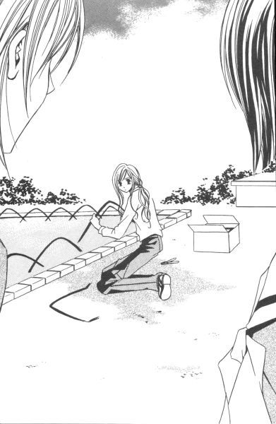
「自爆しないでよ、白薔薇さま」
私の肩を揺すって、蓉子が囁いた。
志摩子は隣の蓉子に気づいて、会釈した。蓉子がそれに応えて手を振る。凍りついた私の時間が、またゆっくりと動き出す。
志摩子は背中を向けて作業の続きに取りかかり、私は中庭が見えない場所まで廊下を移動した。
助かった。
私は蓉子に感謝した。悔しいけれど、蓉子には一生敵わないのかもしれない。
放課後、藤堂志摩子は薔薇の館にやって来た。
「ごきげんよう」
私が迎えると、彼女は驚いたように扉のノブを持ったままその場に硬直していた。
「紅薔薇さまに用？」
「はい......いいえ、薔薇さまならどなたでも」
「そのうち来るでしょ。入って待っていなさい」
二階の部屋には、私しかいなかった。その時初めて蓉子にはめられたと思ったが、今更あがいても仕方ない。志摩子を迎え入れて、丁重にもてなし、さっさとお帰り願おう。
「日本茶？ 紅茶？ コーヒー？」
「あ。お構いなく」
「生憎、本日『お構いなく』は切れているんだけど」
どういうわけだか、私の口から出てくる言葉はひねくれていた。この子に罪はないのだが、まだ部屋のどこかに綿埃のように残っている昨日の蓉子との会話の余韻や、今朝醜態を見せてしまったことなども手伝って素直になれないのだ。私の心はガキだから。
「じゃ、白薔薇さまのカップに入っているのと同じ物を」
志摩子は上級生の意地悪にめげず、平然と対応した。
「ブラックのインスタントコーヒーだけど」
「それ、いただきます」
大物なのか、鈍感なのか。だが、これくらい肝が据わっている方がいい。私は何にいいのか自問しながら、空いていたカップにコーヒーの顆粒を放り込みポットのお湯を注いだ。何気なく手にとった後で、お姉さまのお気に入りのカップだったと思い出す。
「どうぞ」
私は粉末クリームとスティック砂糖を添えて、志摩子に出した。ブラックコーヒーを常飲しているようには見えなかった。武士の情け、ってやつだ。
「恐れ入ります」
志摩子は一礼して、私がカップを置いた席についた。その正面を選んで、私も座った。
見かけに似合わず強情っぱりの志摩子は、クリームにも砂糖にも手を出さずにコーヒーをすすった。表情を崩さないように努力しているが、明らかに無理している。
考えてみれば、敵陣に乗り込んで来たようなもの。彼女の方が私より数倍緊張し、ストレスを感じているはずなのだ。
「手伝いに来るの？」
コーヒーの件は見逃してやって、私は志摩子に本題を尋ねる。蓉子も江利子も来ない。つぼみたちも由乃ちゃんもやって来ないところをみると、かなり用意周到に事が運ばれたようである。
「白薔薇さまがお嫌なら、無理には参りません」
「私のことなんか、関係ないでしょ」
「......それは黄薔薇さまにも言われました」
志摩子は、うつむいて苦笑した。こんな表情もするわけだ。私はリラックスして志摩子の顔を眺めた。考えてみたら、こうしてちゃんと話をするのは初めてなのだ。
「私がいいと言ったら、薔薇の館に出入りするわけね」
「はい」
「言っておくけど、イコール私の妹になる、ということではないのよ」
釘を挿す意味でも、私はそれを口にした。人手が足りなくて手伝いを頼む時、神経を使うのはいつもそこだ。後輩の方が便利に使えるから最初は令や祥子のクラスメイトに当たりをつけたが、それを私の妹候補と誤解する人たちが少なくない。仕方なく、このところは私のクラスメイトに無理を言って頼んでいた。
「わかっています。白薔薇さまの妹という意味でのお話でしたら、お引き受けしません」
志摩子は、真っ直ぐ顔を上げて言った。
「ずいぶんはっきりしていること」
「あ、すみません」
別に私が申し込んで断られたわけでもないのだが、志摩子の「すみません」が妙にしっくり私の心にからみついた。
「じゃ、何？ 藤堂志摩子さんは、ただのお手伝いさんとして山百合会のために尽くしてくださるってこと？どうして？」
どうして私は、こう、冷やかすような言い方しかできないのだろう。だが、志摩子は真顔で答えた。
「こんな私でも、必要としてくれる場所があるのなら」
「──」
私は、突然思い出した。
ワタシハ聖ノ顔ガスキ。ダカラ私ノ側ニイラッシャイ。
お姉さまにそう言われて、私は薔薇の館の住人になったのだ。あの時の私は、「こんな私の顔でいいのなら」と差し出された手を取った。
誰でも誰かに必要とされたい。
クラスメイトの大部分とそりが合わない私であっても、どこかに気持ちが通じる相手がいると信じてみたかった。顔であれ何であれ、好きだと言われて私はとても救われたのだ。
「いいわ」
私は立ち上がって、鞄を引っ掛けた。
「山百合会を手伝ってちょうだい」
話は済んだ。私は、志摩子を置いて二階の部屋を出る。
「手始めに、そのカップを洗っておいてね」
私は志摩子を直視できなかった。
志摩子は、私そのものだったから。
秋の絆
１
それから、志摩子は手伝いに来るようになった。
といっても、私たちが日頃だらだらと雑談に暮れるお茶会などに、積極的に参加するわけではない。
彼女は、自分から前に出るタイプではなかった。本当に人手が欲しい時、由乃ちゃんや祥子たちが呼びにいけば応じるといった具合だ。一線を画している、と言えばいいのだろうか。とにかく、つぼみやその妹とは違うのだ、という姿勢で山百合会に関わっているようだった。
六月。
五月のマリア祭に行われた新入生歓迎会からこっち、山百合会は表立った行事はなく、体育祭や学園祭のある秋に向けての準備期間といっていい、比較的暇な時期に入っていた。
「それなのに、どうして志摩子を引っぱり出すわけ？」
ある日、私は蓉子に突っかかった。昼休み、久しぶりに薔薇の館で二人だけという機会があった。
「別に」
蓉子はさらりとかわした。
「誰の妹でもない志摩子を、何も企画段階から会議に参加させることはないじゃない」
手が足りない時に、やむを得ず頼む助っ人。──それが志摩子を薔薇の館に招き入れるための、蓉子の方便だった。
「でも。今の状態では、学園祭で絶対志摩子ちゃんの手を借りなきゃならないでしょ。だったら、早くから参加してもらった方がいいに決まっているじゃない。ああ、そうそう。花寺学院の文化祭の手伝いだってあるのよ。私の妹は困ったちゃんで、男子校の行事には一切関わりたくないなんて我がまま言うしね。ますます志摩子ちゃんの手が必要になっちゃう」
「......」
蓉子の主張には正当性があった。しかし、理由は後からくっつけたのではないか、そう猜疑したくなる。
「それとも、聖。あなたが『今の状態』を改善していただける？」
今の状態。それは白薔薇である私が薔薇という立場にありながら妹をもたない、ということを指している。責任を果たしていない人間に、とやかく言う権利はないというわけだ。確かに私に妹がいたならば、志摩子を頼むことはないだろう。
「蓉子ね。あなた、すごく性格悪くなったわ」
「友達がひねくれているから、そうならざるをえなかったんじゃない？」
蓉子は本当に口が悪い。人当たりがいいくせに、私には毒舌。外面がいいという点においては、似た者同士ということか。
そういう目で見てみると、祥子もかなり猫っかぶりなところがある。令はバカがつくほど正直だから裏も表のようなものだが、由乃ちゃんはああ見えて内弁慶でありそうだ。
志摩子は──。考えてみたが、よくわからなかった。彼女の裏側を垣間見る以前に、まだ表すらちゃんと見ていないような気がする。
「あの子、よくやっているわ」
窓の外を眺めながら、蓉子が言った。
「あの子？」
私は聞き返し、彼女が指し示した窓の下を見た。志摩子だった。日直か委員会の仕事なのか、志摩子がプリントを抱えて中庭を突っ切っていた。
「あなたの妹に、って考えたこともあったけど。それとは別に、手放すのがもったいなくなっちゃったわ」
「どういうこと？」
「いずれは薔薇さまと呼ばれる立場に、って思わない？......彼女を失うのは、山百合会にとって大損失」
山百合会の損失。私は苦笑した。ご苦労なこと。蓉子は、自分が卒業して後のことまで心配しているわけだ。
「私の妹という線は諦めたのに？」
「諦めたわけじゃないけど──」
志摩子が校舎の中に消えると、蓉子は窓を閉めて私に向き合った。
「方法はいろいろあるでしょ」
「いろいろね」
私はその時、来年二月に行われる選挙に担ぎ上げる気なのかと思った。私には妹がいない。例年つぼみの信任投票という形で行われる生徒会役員選挙であったが、このままいけば白薔薇さまのポストを巡って熾烈な選挙戦が繰り広げられる可能性も高い。
そうなったら、志摩子はどうするつもりだろう。無理に戦わせるのは、何だかかわいそうな気がした。
（かわいそう？）
不思議な感情。私が、志摩子のことを心配するなんて。
（そうだ）
確かに、私は志摩子のことが気になっていた。惹かれていた、と言い換えることもできたが、そんな風に簡単に片づけてしまいたくはなかった。
少なくとも、志摩子に対する感情は以前の栞へ注いでいた想いとはまったく別のものであった。
例えば、共通点はいくつかある。敬虔なカトリックの信者であること、髪が長いこと、清楚な美人であること。しかし、だからといって惹かれたわけではない。
私は栞のすべてを欲し、そうして自分も与えたいと望んだ。それが叶わない願いであると悟った時、二人の関係は終わったといっていい。先に気がついたのは栞だった。そうして、私たちは生きていくために別れを受け入れなければならなかった。
今になって思えば、私にとって栞は天使だった。人間の私が、地上につなぎ止めることなど土台無理な話だったのだ。
その点、志摩子は人間だった。
私は、志摩子を少し離れた所から眺める。
それだけでいい。
いつしか、それが心地よくなっていた。
２
志摩子。
そう呼ばれるのが、私にはとても心地よかった。
志摩子さんでも志摩子ちゃんでもない。ただの志摩子。
薔薇の館では、同学年の由乃さん以外は皆、私のことを「志摩子」と呼んでくれる。私は志摩子と呼ばれるたびに、たとえ仮初めであれ、組織を感じ仲間を思うことができた。
最初に「志摩子」と、そう呼び出したのは白薔薇さまだった。
紅薔薇さまに「妹でもないのに呼び捨てなんて」と冷やかされ、「だったら皆もそう呼べばいい」と鬱陶しそうに言ったのが発端。祥子さまがそれに従い、次第に皆そう呼ぶように落ち着いたのだ。
一人の人間の呼び名は、ある集団の中では大概一定の法則に基づいて決まり定着していく。皆が好き勝手に呼ぶと、混乱するからだ。
例えば由乃さん。彼女は上級生からは「由乃ちゃん」と呼ばれ、同級生からは「由乃さん」と呼ばれている。「由乃」と呼ぶのは、姉である令さまただ一人だ。
例えば志摩子の下に「さん」や「ちゃん」があったとしたら、私はたぶんずっとお客さまでいなければならなかった。志摩子と呼ばれたことで、私は皆が妹のように可愛がってくれるのを素直に受け取ることもできるのだ。特定の「姉」が存在しなくても。
私は、薔薇の館にいる時間が好きだった。
山百合会幹部の、「薔薇ファミリー」と呼ばれる面々が好きだった。
だから時折、自分の立場を忘れてその輪の中に溶け込んでしまいそうになる。居心地がいい、そこはとてもやわらかい空間だったから。
白薔薇さまの印象は、その度違っていた。神秘的だったり、怖かったり、軽薄だったり、やさしかったり。それでも一貫して、私にとって気になる存在であり続けた。
私は、何かしている時、振り返ってそこに白薔薇さまの姿があるとホッとした。私のことを見ていなくても、また機嫌の悪い視線を私に向けていても。どんな時でも。
なぜだろう、落ち着くのは。
喩えるなら同志のように、そこにいてくれるだけで安心できた。一人じゃないんだ、そんな安堵の気持ちを白薔薇さまは私に与えてくれた。
夏のはじめ、私は放課後の中庭で白薔薇さまを見た。
猫に乾いたペットフードを与えて、それを食べる姿を嬉しそうに眺めていたのだ。
「猫、好きなんですか」
私は背後からそっと尋ねた。白薔薇さまに自分から声を掛けるのはとても勇気がいるのだけれど、話しかけずにいられなかった。
「うん、好き。大抵の動物は好きだけど」
「ヘビとかミミズとかも？」
「そうね」
白薔薇さまは猫の頭を人差し指でかいた。猫は気持ちよさそうに、喉を鳴らす。
「互いにテリトリーを侵さないという約束のもとにならね、たぶん共存できるんだろうね」
「共存、ですか」
「うん」
猫はすでに子猫といった感じではなかったが、かといって成猫にもなりきってもいない感じだった。黒っぽいトラ猫で、所々毛のない箇所に見える治りかけの傷痕が痛々しい。
「この子を襲ったカラスもね、事情があったんでしょ。お腹をすかせた子供がいたのかもしれないし」
どっちが悪者でもなくて、ただ生き物としての種が違う。それだけの話だと、白薔薇さまはつぶやいた。
「でも我がままかもしれないけれど、できれば傷つけ合う場面は見たくない。この世界はきれい事だけじゃなくて、殺したり殺されたりして保たれているって十分わかっているけど」
私は白薔薇さまに愛されている「大抵の動物」の中に人間は含まれているだろうか、と考えていた。時々、窓から見える木々の緑を見つめるやさしい眼差しは、人間から一番遠いところにある物への憧憬であるように感じられた。
私は、自分が人間であるというだけで、白薔薇さまに拒絶されているような気持ちになった
「この猫、どうするんですか」
神経質そうな猫だったが、私が手を伸ばすと逃げずに背中を撫でさせた。
「別に、どうもしないわよ」
こんな傷だらけじゃ三味線屋にも売れない、と白薔薇さまはあまり誉められないジョークで笑った。
「でも、餌をやっているじゃないですか」
「餌をやっちゃだめなの？」
「だめじゃないですけれど......」
私は、自分で何を言いたいのかわからなかった。わからなかったけれど、白薔薇さまに何かを言わずにいられなかった。
「餌をもらえることが普通になったら、自然界では生きていけなくなります」
「そうね」
「夏休みどうするんです。寒い冬休みは。それにあなたは、猫が生きている間の十年二十年をずっとこの学園に留まるわけじゃないでしょう？」
猫に自分を重ねていたのだろうか。私は卒業してしまった白薔薇さまを待ち続ける、忠犬のような猫の姿を想像して、涙があふれてきた。
「一時の同情で助けるのは、かえって残酷ではないですか」
違う。私だって、猫がカラスに食べられた方がよかったなんて思っていない。
「痛いところをつくこと」
白薔薇さまは目を細めた。私は涙を見られないように、視線を外して手の甲で目の下を拭った。
「そうね。志摩子の言う通り、私は残酷なことをしているのかもしれない。けど、この子はまだ子供だから。やっと傷が癒えたばかりだから。時折、こうやっておやつをあげることくらい見逃してよ。何も三度三度やってるわけじゃないんだ」
この子は狩りもして一人前になるだろうから、と。そうなったら、平気で突き放すつもりだろうか。
本当に、それでいいのだろうか。この猫は、きっと白薔薇さまの手の温もりを一生覚えている。カラカラに乾いた、ビスケットのようなペットフードの味は二度と忘れることはないのに。
「出会いと別れはセットでしょ。いずれ別れが来るから、なんて。それを恐れて関わりをもたないなんて、味気なくない？......私はね、志摩子」
白薔薇さまは右のカフスあたりに左手を添えた。
「卒業したお姉さまに感謝している。私にありったけの愛情を傾けてくれたのよ。置いて行かれたなんて、恨みに思うわけないじゃない。お姉さまがいなくなった学園で、私はこうしてどうにか生きているわ」
夏服の袖口からチラリと見えたのは、ロザリオのようだった。
３
その時の私は、誰にでもなく自分に言い聞かせていたのかもしれない。
「一生添い遂げられるなんて、それこそ奇蹟だわ」
志摩子にどのように届いたかは知らない。
すぐに夏休みを迎えた。
この夏、私はごく一般の生徒のように長い休みを過ごした。受験のことなど考えていなかったから、夏期講習を受けることもない。
誘われるままに、蓉子と一緒に祥子の家に遊びにいったり、一人でオールナイト上映の映画を観にいったり。気が向いたら宿題などにも手をつけて。
それから。
志摩子の言葉に少し心が痛んだせいだろうか、猫の餌を手に何度か高等部校舎の中庭に来てみたりした。猫は、いるときもあったが、大抵はどこにいるんだか姿が見えなかった。
私は校舎寄りの雨の当たらない場所に、カリカリの餌を少量置いて帰る。次に来るとなくなっていたから、生きていて食べているのだろうと都合よく解釈した。私の餌が他の動物の栄養になっていたとしても、それはそれで構わなかった。
夏休みが明けて、体育祭前後のことであろうか。私は、妙な噂を耳にした。
志摩子が、祥子の妹になるというのだ。
「どういうこと」
私は休み時間に祥子のクラスまで出向いて、問いつめた。しかし祥子はというと、腹立たしいくらい冷静に私を見据えた。
「なぜ、白薔薇さまに責められなければいけませんの？」
「え？」
「私が妹を決めるのに、誰の許可もいらないはずです」
上級生相手に、堂々と正論を言ってのける。さすがは蓉子の妹、と私は素直に感嘆した。
少しずつギャラリーが増え始めた。白薔薇さまが 紅薔薇のつぼみともめている。こんな面白そうな見せ物は、そうそうないだろう。
だが。
「本気で、志摩子を」
「ええ」
私たちは、周囲を気にする余裕がなかった。いや、余裕がなかったのは私だけで、祥子は黙殺していただけだ。
「この数ヶ月、私なりに藤堂志摩子を見て参りましたわ。それで、彼女は山百合会に必要な人材であると判断いたしました」
「山百合会に必要だから妹にする、っていうの？」
祥子の心の中は読めなかった。しかし志摩子を妹にしたいという決定打のようなものが彼女から伝わってこない限り、姉妹として認められないと私は思った。
「どんな理由なら納得していただけるのかしら。顔で選んだとでもお答えした方が、説得力がありまして？」
「──！」
私はカッとなって、思わず手を挙げそうになった。なぜだろう、卒業したお姉さままで冒涜されたような気になってしまったのだ。スカートのポケットの位置で、辛うじて押しとどめた私の握り拳。それに一瞥くれて、祥子が言った。
「そんなに志摩子が惜しいなら、どうしてご自分が立候補なさらないの」
「私が志摩子を何ですって......!?」
自分が引き合いに出され、私はうろたえた。そうだ、心のどこかでタカをくくっていたのだ。志摩子は誰の妹にもならない。そして当たり前のように薔薇の館にいるものだ、と。
志摩子が薔薇さまと呼ばれるには、いくつかの方法がある。──私は、蓉子の言葉を思い出した。なるほど、祥子の妹になれば、再来年の紅薔薇さま候補なのだ。
志摩子が祥子の妹になる。確かに、誰の許可もいらないことだった。
最初に志摩子を見つけたのは、私だったかもしれない。だが、私は行動を起こさなかった。誰かと親密な関係をもつことを恐れていた。それなのに、志摩子のことは常に目の端に入れていたいという、ずるい人間なのだ。
それで祥子が行動に移したとたんに、このざま。私は焦ったのだ。
志摩子を取られるのが惜しい？ ──その通りだった。
けれど。
すべてを認めた上で、私は往生際が悪かった。
「あなたに志摩子の何がわかっているのよ」
問いかけに、祥子は「さあ」と首を傾げた。
「でも、このままの待遇でいることが、彼女のためにはよくない。それくらいは、わかっています」
「え」
「このままでは駄目なんです。解放してあげるか、誰かの妹として正式に薔薇の館に迎えるかどちらかにしてあげないと」
「──」
私は言葉を失った。
「ああ......」
そうだ。
どうして、気づかなかったのだろう。なぜ、忘れていたのだろう。志摩子に今必要なものが何であるか、を。
「わかった」
私は神妙にうなずいた。
志摩子のことを一番わかっているのは自分だと、どこかで自負していた。それなのに、一番大事なことを忘れ、それを年下の祥子に教えられるなんて。面目丸つぶれ。いや、最初から面目なんて無きに等しい。
「わかったけど、志摩子のことは譲れないからね」
私の中で何かが壊れ、代わりに何かが芽生えていた。
「どうなさるおつもり」
怪訝そうに祥子は聞き返した。そこで私は、宣戦布告ってやつを一発ぶちかます。
「妹にするのよ、私の」
祥子の前に、ギャラリーが「おおっ」とどよめいた。丁度いい。もう後には退けない。
「......後から出てきて横どりするわけですか」
「横取りだなんて、滅相もない。だって、まだ志摩子はロザリオを受け取ってないんでしょ」
ならば、スタートラインに先に立たれただけの話だ。
いや、スタートのピストルが鳴り響いた後であろうと、ゴールのテープが切られていない限り、まだ十分に間に合うはず。
もし、テープが切られてしまっていたら──。その時こそ、横から奪い取るのみ。
「なぜ、そう思われるんです？」
祥子の言葉に、始業チャイムが被った。
「なぜ？」
私はそう言って、身を翻した。
「志摩子には、私の方がいいに決まっているからじゃない」
振り返りざま、祥子とギャラリーにウインク。
私は勝ちを確信していた。
祥子は、授業を犠牲にしてまで志摩子争奪戦に参戦することはないだろう。
廊下を走りながら私は、志摩子のクラスを思い出した。
確か一年桃組だった。
４
授業開始のチャイムが鳴る中、私は白薔薇さまに教室から連れ出された。
「あ、あの......っ!?」
「来て」
私の戸惑いなど白薔薇さまはお構いなし。急いで教室に戻るクラスメイトたちの流れに逆行して、廊下を進む。授業を放り出すなど信じられないと思いながらも、白薔薇さまに強引に腕を引っ張られていくのは嫌じゃない。ただ、胸がドキドキして苦しくなった。
「どちらに？ 私、逃げませんから」
非常口の扉の前で、私は言った。チャイムはもう、鳴り終わってしまった。
「ああ、ごめん」
白薔薇さまは思い出したように、私の腕を離した。
ほぼ時間通りにやって来る教師の授業だから、今から引き返したところで間に合わない。間に合ったとしても、白薔薇さまを一人ここに残していって授業に出られるわけがない。
重い扉を、二人で体重をかけてゆっくり開くと、風が吹き込んで髪を乱した。
白薔薇さまと私は、並んで校舎から離れていった。
最初からここに来るつもりだったのか、それともあてもなく彷徨いたどり着いた先がここだったのか。私たちは初めて出会った、桜の木々の下に立っていた。
「期限付きだけど」
真っ直ぐ私に向き直って、白薔薇さまは言った。
「私の妹になりなさい」
それは予想していた言葉だっただろうか。いいや、心のどこかで望んでいた言葉だったかもしれない。
「私は一般的にお得な姉とは言い難いけれど、きっとあなたにはピッタリだと思う。束縛しないし、あなたは好きなようにしていればいい。それに」
「あの......」
私は白薔薇さまの言葉を遮った。
白薔薇さまは、私の抱えている事情を知らない。知った上で尚、妹にしたいなどと思うだろうか。
でも、それをどうやって伝えたらいいものかわからなかった。白薔薇さまになら、すべて話してもいい。だがそうすることは、私の荷を半分背負わせることになりはしないだろうか。拒絶されるにしても、受け入れられるにしても、白薔薇さまの負担になることは避けられない。
「嫌なの？」
「そんな！」
私は首を激しく横に振った。
「でも」
「でも、は無し。聞きたいのはＹＥＳかＮＯか、それだけ」
白薔薇さまは、真っ直ぐに私を見た。それ以外の言葉は、本当に受けつけないといった厳しい目をしていた。
「私は」
言いかけて、私はハッと気づいた。
私が言おうとしていることは、何と価値のないものであることか、と悟ったのだ。
私の憂いは、佐藤聖という人間を見くびった行為の上に成り立っていた。
彼女は、私の着ている物も背負っている物にも興味がないのだ。理由はわからない。けれど私という一個の人間を、ありのまま受け入れようとしているだけの話なのだ。
だから私は、背負っている荷を一旦下ろして、鎧のような固い甲冑を脱いだ状態のまま、彼女の前に立っていいのだ。
長い旅の途中で、同じ木陰を選んで休んだ言葉の通じない者たちのように。私たちはたぶん、自分のことを語り合わなくても、一緒にいられる。いずれまた離ればなれに旅立つことを知っていながら、そこにその人を感じながら魂の安息を得ることができるだろう。
言葉ではないのだ。
私たちは、互いに近くにいるべきなのだ。
「あなたの妹にしてください」
私は、差しのべられた手をとった。
「そう」
「よろしくお願いします」
握手の形であったけれど、ただの握手として片づけてしまいたくない。互いに指が相手の手を抱いているような、そんな感覚をおぼえて、私はとても安心できた。
「ああ、そうだ。ロザリオがいるんだっけ」
白薔薇さまは右手にブレスレットのように巻いていたロザリオを外して、私の首に掛けようとした。が、すぐ思い直したように、私の右手首に巻いた。
「こっちの方がお手軽だ」
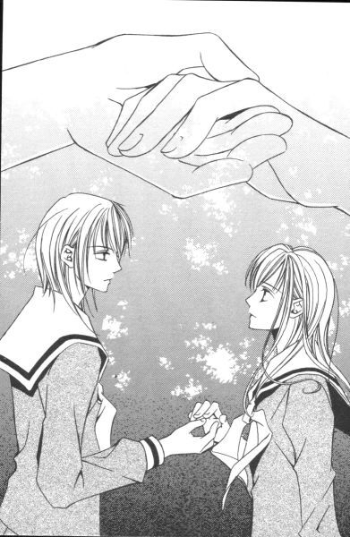
いつでもすぐに取り外せるように。そう言ったわけではないが、白薔薇さまが私の負担を軽くするために手首を選んだのだと私は思った。
ロザリオには、ほのかに体温が残っているようだった。
「あの」
無事手首に収まったロザリオを見て満足そうにほほえむ白薔薇さまに、私は言った。
「ん？」
「教室に戻りませんか」
「へ？」
「授業。今ならまだ十五分くらいの遅刻で済みますから」
「志摩子、あんた生真面目ね」
「お姉さまは不真面目ですね」
お姉さま。
言われた方も言った方も、少し照れくさい響きだ。
「しょうがない。じゃ、行くか」
お姉さまは私の右手を掴んで飛び出す。
「そんな、極端な」
私は引っ張られ、あわてて走り出した。右手のロザリオが弾む。手首から落ちて、二人のつないだ指先近くで揺れている。
なんて心地いいのだろう。
誰かと手をつないで、こうして走るということは。
私は、祥子さまや白薔薇さまファンに心で詫びた。
ごめんなさい。でも、きっと私にはこの人が必要だから。
あと半年だけ。
二学年歳の離れた私たちは、一緒にいられる期間が限られている。
半年後には、確実に別れの日が訪れる。
だが、それまではこの手を離すまい。
「志摩子、ダッシュ！」
二人の間で揺れているロザリオが、ここに私の居場所をつくってくれるのだから。
あとがき
またしても私は混乱しています。
今、何月？
こんにちは、今野です。
私のいるこちらの時間は、どうやら二月の終わりのようです。年が明けてからこっち、頭の中が三月になっていたので、得したような損したような変な気分です。ちょっと時差ボケ状態です。しかし、ぼけーっとしてもいられません。一段落したら、確定申告に着手しなければならない、そんな時期でした。
ところで、あなたのいる時間は今いつですか？
執筆中はいろいろなことに思いを巡らす余裕はなかったのですが、読者がこの本を手に取ってくれる頃に桜がまだ咲いていればいいなぁ、なんて私は今思っています。
これは確か四月刊だから。......うん、悪くないかもしれません。
とはいえ、日本は斜めにびろーんと伸びているから、桜の開花時期もいろいろなんでした。しかし裏を返せば、この時期どこかで桜が咲いているとも言えますよね。桜前線が通り過ぎてしまった後でも、山の上の方とかではまだ咲いているかもしれないし。
あー、いいな。私はお酒をあまり飲めないので、野外宴会という趣のお花見はほとんどやらないのですが、家の近所に何カ所か桜が見事な場所があるので、それを見るのは楽しみです。バスから眺めるだけでも、いいものです。
さて、桜。
「片手だけつないで」の最初の方にも書きましたが、夏の毛虫の被害だけは厳しいですよね。中学時代、私は自転車通学をしていたのですが、通学路で長い桜並木の下を延々と走らなければならない場所があったので、それはそれは大変でした。その代わり、春は最高！
桜といえば。
幼稚園時代、年長さんの時の組が「さくら組」でした。ちなみに年少さんの時は「ばら組」でしたから、どちらもなぜか薔薇科。他には「すみれ組」とか「ゆり組」とか「きく組」とかありました。......あと一つあったはずだったんですが、何だったんでしょう。「もも組」とかかな。今ひとつ、自信がないです。
「いつしか年も」で幼稚舎時代の話が出てきましたが、私も結構その頃のことは記憶に残っています。
わんぱくな男の子がいたこととか、泣き虫な女の子がいたこととか。
教室の風景とか。シスターのベールの下にもぐった思い出とか。
お祈りの言葉とか。歌とか。
スクールバスの乗り方の作法とか。本当、不思議なくらい鮮明に覚えているものです。
そうそう、幼稚園がらみのエピソードといえば。
中学の入学準備で学校に集合した時、さくら組で一緒だった女の子を六年ぶりに見つけた私は、懐かしさのあまりつい彼女に声をかけてしまいました。しかし、相手は私のことを全然覚えていなかったんですよ。結構仲よしだったんですがね。......あれは、結構ショックでした。だから聖や祐巳の周囲にいる人間の気持ち、とてもよくわかる。お察しいたします。
しかし、逆のパターンもあって。路線バスや街角で、卒業以来会っていなかったクラスメイトに突然声をかけられたりもするからなぁ。私って、影が薄いんだか濃いんだか......。うーん、わからん。
──なんて私の思い出話でお茶を濁してしまいましたが、薔薇さまたちがとうとう卒業してしまいましたね。しくしく。
正直いうと、『マリア様がみてる』の一巻目を書き始めた頃、彼女たちをここまで好きになるとは思っていなかったんです。
雑誌の単発で書かせてもらった時に、志摩子が白薔薇さまとして存在していたものの祥子も令も名前なし状態でしたから、時代を半年前に設定してスタートしたはいいけれど、登場人物の多さに、ちょっと全員回しきれるかなぁ、と心配したこともありました。でも、始まってみると、結構みんな自己主張しだすから面白い。
特に佐藤聖は、書いていて本当に楽しかった。もっともっと、祐巳とじゃれ合わせていたかったです。でも、『マリア様がみてる』は閉じられた時間の中で息づく物語でない以上、卒業は避けられません。
それでも。
（リリアン女学園高等部の歴史上は知りませんが）私の中では「初代」である薔薇さま三人には、卒業しても、たまには会えるといいと思っています。
四月になれば、リリアンの高等部に新入生が入ってきます。在校生も一学年ずつ進級します。
寂しがってばかりもいられません。
底本：「マリア様がみてる いとしき歳月（後編）」コバルト文庫、集英社
2001年4月10日第1刷発行
2003年1月30日第6刷発行
2009年03月13日ルビのミス修正（暇な人z7hc3WxNqc1635行居→居）
******* 底本の校正ミスと思われる部分 *******
底本p029
「じゃ、誰とどこに言っていたの」
行って
底本p037
「名前が書いていないのに、どなたのかよくおわかりですね」
名前が書いてないのに、
底本p046
桂さん姉妹は黄薔薇革命に感化されて一度破局を迎えたもの、一月もしないうちに
迎えたものの
底本p079
書道の先生の手なる黒々とした楷書が、
手になる
底本p081
学校行事で誰かか自分を見に来ている場合、
誰かが
底本p158
可愛そうに、と手を差しのべたい感覚にはならなかった。
可哀想に、かわいそうに、
底本p174
絶えられなくなって目をそらしたのは
耐えられなくなって
底本p182
「紅薔薇さまの思惑は置いてといて」
底本p201
私は、自分が人間であるというだけで、白薔薇さまに拒絶されているような気持ちになった
「。」抜け。
********************************************